Dans tout le chapitre, \(E\) et \(F\) désignent des \(\mathbb{K}\)-espaces vectoriels normés de dimension finie avec \(\mathbb{K}= \mathbb{R}\) ou \(\mathbb{C}\) dont on note les normes identiquement \(\left\|\cdot\right\|\). L’idée est d’essayer de donner un sens à la dérivabilité d’une fonction \(f : U \subset E \to F\) alors que \(\frac{f(a+h)-f(a)}{h}\) n’a pas de sens pour \(a,h \in E\) (sauf si \(E = \mathbb{K}\)).
Soient \(\mathscr{B}= (e_1,\ldots,e_p)\) une base du \(\mathbb{R}\)-espace vectoriel \(E\) et \[\begin{array}{lllll} f & : & U \subset E & \to & F \\ & & x=x_1e_1+\ldots+x_pe_p & \mapsto & f(x)=f(x_1e_1+\ldots+x_pe_p) \end{array} .\]
Soit \(a = a_1e_1+\ldots+a_pe_p \in \mathring{U}\), pour \(1 \leq j \leq p\), on introduit \[\begin{array}{lllll} \varphi_j & : & D & \to & F \\ & & x_j & \mapsto & f(a_1e_1+\ldots+x_je_j+\ldots+a_pe_p) \end{array} .\] avec \(D \subset \mathbb{R}\).
Si \(\varphi_j\) est dérivable en \(a_j\) alors \(\varphi'(a_j)\) est appelée la \(j\)-ième dérivée partielle de \(f\) en \(a\) relativement à \(\mathscr{B}\).
On la note alors \(\frac{\partial f}{\partial x_j}(a)\).
Si \(\frac{\partial f}{\partial x_j}(a)\) existe pour tout \(a \in U\), la fonction \(\begin{array}{lllll} \frac{\partial f}{\partial x_j} & : & U & \to & F \\ & & a & \mapsto & \frac{\partial f}{\partial x_j}(a) \end{array}\) est de \(U\) dans \(F\), comme \(f\).
Si \(E = \mathbb{R}\) (donc \(p = 1\) et \(\mathscr{B}= (e_1)\) avec \(e_1 \in \mathbb{R}^*\)), l’existence de l’unique dérivée partielle \(\frac{\partial f}{\partial x_1}(a)\) équivaut directement à la dérivabilité usuelle de \(f\) en \(a\). On a alors \[\frac{\partial f}{\partial x_1}(a) = e_1 \, f'(a),\] et en particulier \(\frac{\partial f}{\partial x_1}(a) = f'(a)\) relativement à la base canonique \(\mathscr{B}= (1)\).
On pourrait alléger l’hypothèse « \(a \in \mathring{U}\) » en supposant que \(\left\{t \in \mathbb{R}/ a +te_j \in U\right\}\) est un intervalle non réduit à un point de \(\mathbb{R}\).
Pour \(\begin{array}{lllll} f & : & \mathbb{R}^2 & \to & \mathbb{R} \\ & & (x,y) & \mapsto & \left|x\right|+\left|y\right| \end{array}\) et \(\mathscr{B}\) la base canonique alors soit \((x,y) \in \mathbb{R}^2\), \[\frac{\partial f}{\partial x}(x,y) = \left\{ \begin{array}{ll} 1 & \mbox{ si $x > 0$,} \\ -1 & \mbox{ si $x < 0$,} \\ \text{n'est pas définie} & \mbox{ si $x=0$.} \end{array} \right.\]
On peut la représenter comme ci-contre.
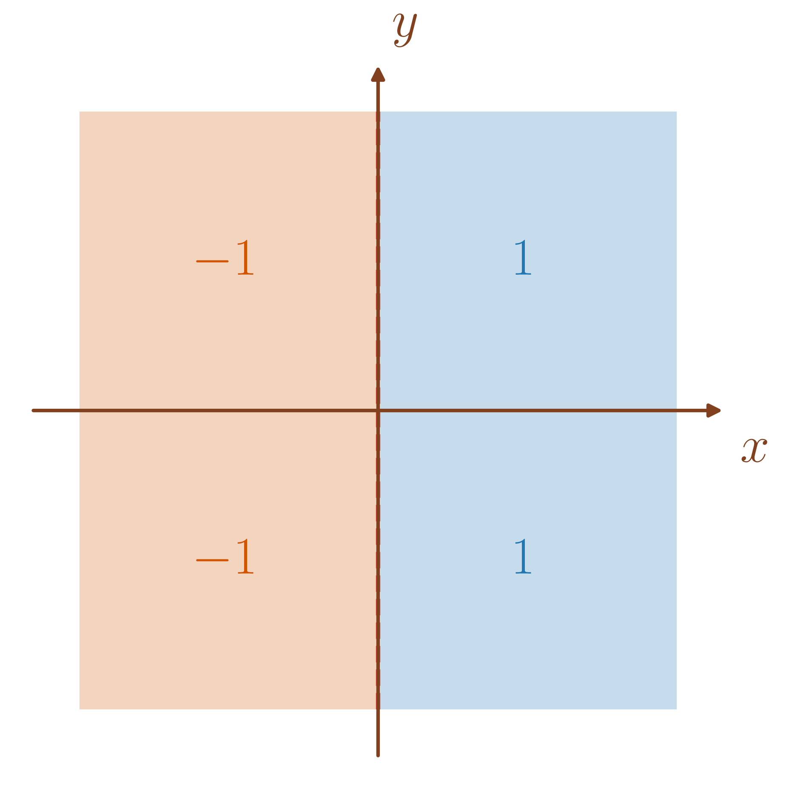
Pour \(\begin{array}{lllll} f & : & \mathbb{R}^3 & \to & \mathbb{R} \\ & & (x,y,z) & \mapsto & xz^2+e^{-xy}+z^3 \end{array}\), \[\forall (x,y,z) \in \mathbb{R}^3, \left\{ \begin{array}{ll} \frac{\partial f}{\partial x}(x,y,z) & = z^2-ye^{-xy}, \\ & \\ \frac{\partial f}{\partial y}(x,y,z) & = -xe^{-xy}, \\ & \\ \frac{\partial f}{\partial z}(x,y,z) & = 2xz +3z^2. \end{array} \right.\]
Pour \(\begin{array}{lllll} f & : & \mathscr{M}_{2}(\mathbb{R}) & \to & \mathbb{R} \\ & & A & \mapsto & \det A \end{array}\) et la base \(\mathscr{B}= (E_{11},E_{21},E_{12},E_{22})\),
on commence par exprimer \(f\) dans le base \(\mathscr{B}\) tel que pour \(A \in \mathscr{M}_{2}(\mathbb{R})\) telle que \(A = \begin{pmatrix} x_1 & x_3 \\ x_2 & x_4 \end{pmatrix} = x_1E_{11}+x_2E_{21}+x_3E_{12}+x_4E_{22}\), \(f(A) = x_1x_4-x_2x_3\) et on en déduit \[\left\{ \begin{array}{ll} \frac{\partial f}{\partial x_1}(A) & = x_4 \\ & \\ \frac{\partial f}{\partial x_2}(A) & = -x_3, \\ & \\ \frac{\partial f}{\partial x_3}(A) & = -x_2 \\ & \\ \frac{\partial f}{\partial x_4}(A) & = x_1 \\ \end{array} \right.\]
Pour \(\begin{array}{lllll} f & : & \mathbb{C} & \to & \mathbb{C} \\ & & z & \mapsto & z^2 \end{array}\) et la \(\mathbb{R}\)-base \((1,i)\) de \(\mathbb{C}\), on commence par exprimer \(f\) dans la base \((1,i)\) tel que pour \(z = x+iy\) avec \(x,y \in \mathbb{R}\), \(f(z) = (x+iy)^2 = x^2+2ixy-y^2\) et on en déduit \[\left\{ \begin{array}{ll} \frac{\partial f}{\partial x}(z) & = 2x+2iy = 2z, \\ & \\ \frac{\partial f}{\partial y}(z) & = 2ix-2y = 2iz. \\ \end{array} \right.\]
Soit \(f : U \subset E \to F\), \(a \in \mathring{U}\) et \(h \in E\). On considère la fonction \[\begin{array}{lllll} \psi_h & : & D & \to & F \\ & & t & \mapsto & f(a+th) \end{array}\] où \(D \subset \mathbb{R}\) et \(D \neq \emptyset\) car \(a \in \mathring{U}\) et donc il existe \(r > 0\) tel que \(B(a,r) \subset U\) et \(\left]-r,r\right[ \subset D.\)
Si \(\psi_h\) est dérivable en \(0\) alors \(\psi'(0)\) est appelé la dérivée de \(f\) suivant \(h\) en \(a\) et on la note \(D_{h,f}(a) \in F\). On l’appelle également une dérivée directionnelle de \(f\) en \(a\).
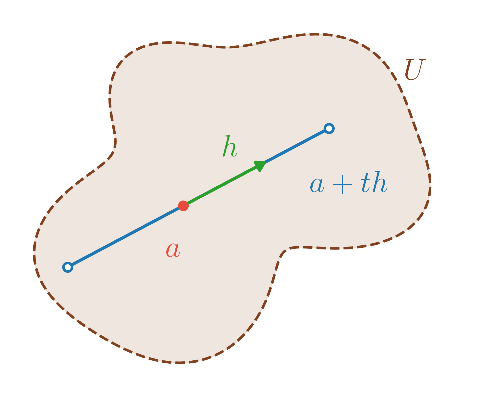
Si \(D_{h,f}\) est définie sur \(U\), \(D_{h,f}\) est à valeurs de \(U\) dans \(F\), comme \(f\).
\(D_{h,f}(a) = \underset{t \to 0}{\lim}\text{ } \frac{\psi_h(t)-\psi_h(0)}{t} = \underset{t \to 0}{\lim}\text{ }\frac{f(a+th)-f(a)}{t}.\)
Si \(E = \mathbb{R}\), l’existence de la dérivée directionnelle \(D_{h,f}(a)\) signifie que le taux d’accroissement \(t \mapsto \frac{f(a+th)-f(a)}{t}\) admet une limite finie lorsque \(t \to 0\). Pour \(h \neq 0\), cela équivaut exactement à la dérivabilité usuelle de \(f\) en \(a\), avec : \[D_{h,f}(a) = h \, f'(a) \quad \text{(et en particulier } D_{1,f}(a) = f'(a)\text{)}.\]
On pourrait alléger l’hypothèse « \(a \in \mathring{U}\) » en supposant que \(\left\{t \in \mathbb{R}/ a +th \in U\right\}\) est un intervalle non réduit à un point de \(\mathbb{R}\).
Pour \(\begin{array}{lllll} f & : & \mathscr{M}_{n}(\mathbb{K}) & \to & \mathscr{M}_{n}(\mathbb{K}) \\ & & A & \mapsto & A^3 \end{array}\) et \(H \in \mathscr{M}_{n}(\mathbb{K})\), on peut considérer pour tout \(t \in \mathbb{R}\), \[\psi_H(t) = \left(A+tH\right)^3 = (A+tH)(A+tH)(A+tH).\] Alors, on reconnaît une fonction \(3\)-linéaire dont la dérivée s’écrit pour \(t \in \mathbb{R}\), \[\psi_H'(t) = H(A+tH)(A+tH)+(A+tH)H(A+tH)+(A+tH)(A+tH)H.\] On a donc \(D_{f,H}(A) = \psi_H'(0) = HA^2+AHA+A^2H.\)
Soient \(\mathscr{B}= (e_1,\ldots,e_p)\) une base du \(\mathbb{R}\)-espace vectoriel \(E\) et \[\begin{array}{lllll} f & : & U \subset E & \to & F \\ & & x=x_1e_1+\ldots+x_pe_p & \mapsto & f(x)=f(x_1e_1+\ldots+x_pe_p) \end{array} .\]
Alors, soit \(a \in \mathring{U}\) et \(1 \leq j \leq p\), \[\frac{\partial f}{\partial x_j}(a) \text{ existe } \iff D_{e_j,f}(a) \text{ existe.}\] De plus, dans ce cas, \(\frac{\partial f}{\partial x_j}(a) = D_{e_j,f}(a).\)
En notant \[\begin{array}{lllll} \varphi_j & : & D & \to & F \\ & & x_j & \mapsto & f(a_1e_1+\ldots+x_je_j+\ldots+a_pe_p) \end{array} \text{ et } \begin{array}{lllll} \psi_{e_j} & : & D & \to & F \\ & & t & \mapsto & f(a+te_j) \end{array} ,\] alors pour tout \(t \in D\), \[\psi_{e_j}(t) = f(a_1e_1+\ldots+(a_j+t)e_j+\ldots+a_pe_p) = \varphi_j(a_j+t).\] Donc \[\psi_{e_j} \text{ dérivable en $0$ } \iff \varphi_j \text{ dérivable en $a_j$}\] avec dans ce cas, \(\psi_{e_j}'(0) = \varphi_j'(a_j)\) ie \(\frac{\partial f}{\partial x_j}(a) = D_{e_j,f}(a).\)
Soient \(a \in U\), \(h \in E\) et \(\begin{array}{lllll} \psi & : & D & \to & F \\ & & t & \mapsto & f(a+th) \end{array}\) alors \[\psi \text{ dérivable en $t_0$} \iff D_{h,f}(a+t_0h) \text{ existe.}\] Dans ce cas, \(\psi'(t_0) = D_{h,f}(a+t_0h).\)
En notant \(\gamma : t \mapsto f(a+t_0+th)\) alors \(\gamma\) est définie autour de \(0\) et \(\gamma(t) = \psi(t_0+t)\).
Donc \[\psi \text{ dérivable en $t_0$} \iff \gamma \text{ dérivable en $0$}\] et de plus, \(\psi'(t_0) = \gamma'(0) = D_{h,f}(a+t_0h).\)
On dit que \(f\) est continue en \(a\) suivant \(h\) si \(\psi: t \mapsto f(a+th)\) est continue en \(0\) ie \(f(a+th) \xrightarrow[t \to 0]{} f(a)\).
L’existence d’une dérivée directionnelle selon \(h\) implique une continuité selon \(h\) mais pas de la continuité.
En effet,la fonction représentée ci-contre est continue en \(0\) selon \((0,1)\) et \((1,0)\) (elle vaut \(0\) sur chacun des axes) mais discontinue en \(0\).
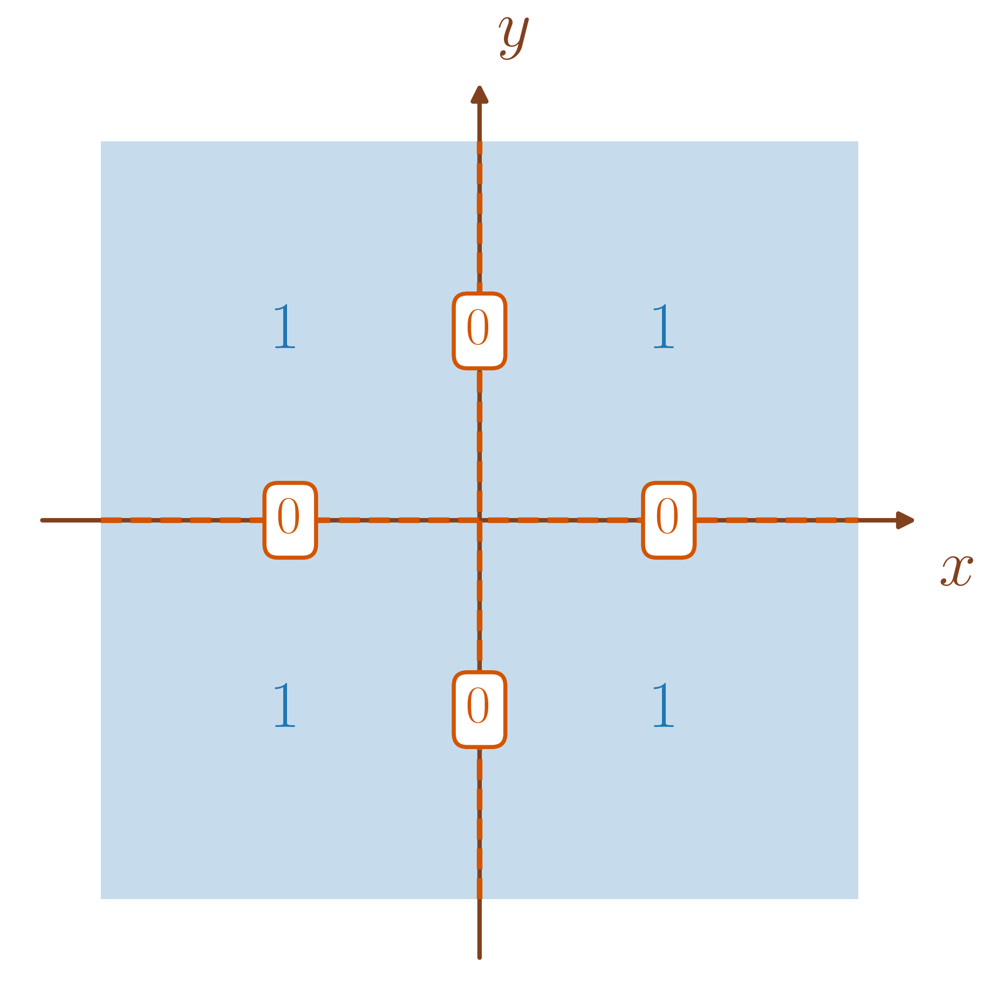
Les dérivées directionnelles héritent des propriétés de la dérivation. Soient \(U \subset E\), \(a \in \mathring{U}\) et \(h \in E\).
Soient \(f : U \subset E \to F\) et \(g : U \subset E \to F\) admettant une dérivée suivant \(h\) en \(a\) alors
Soient \(\lambda, \mu \in \mathbb{K}\) alors \(\lambda f+\mu g\) admet une dérivée suivant \(h\) en \(a\) et \[D_{h,\lambda f+\mu g}(a) = \lambda D_{f,h}(a)+ \mu D_{g,h}(a).\]
Si \(F = \mathbb{K}\) alors \(fg\) admet une dérivée suivant \(h\) en \(a\) et \[D_{h,fg}(a) = D_{f,h}(a)g(a)+ f(a)D_{g,h}(a).\]
Si \(F = \mathbb{K}\) et \(f(a) \neq 0\) alors \(\frac{1}{f}\)admet une dérivée suivant \(h\) en \(a\) et \[D_{h,\frac{1}{f}}(a) = -\frac{1}{f(a)^2}D_{f,h}(a).\]
Soient \(f_1 : U \subset E \to F_1\), \(\ldots\), \(f_n : U \subset E \to F_n\) (avec \(F_1,\ldots,F_n\) des \(\mathbb{K}\)-espaces vectoriels de dimension finie) admettant une dérivée suivant \(h\) en \(a\) alors soit \(\Phi : F_1 \times \ldots \times F_n \to G\) \(n\)-linéaire (avec \(G\) un \(\mathbb{K}\)-espace vectoriel de dimension finie) alors \(\Phi(f_1,\ldots,f_n)\) admet une dérivée suivant \(h\) en \(a\) et \[D_{h,\Phi(f_1,\ldots,f_n)}(a) = \sum_{k=1}^n \Phi(f_1(a),\ldots,D_{h,f_k}(a),\ldots,f_n(a)).\]
Soit \(f : U \subset E \to \mathbb{R}\) admettant une dérivée suivant \(h\) en \(a\) et \(g : f(U) \subset \mathbb{R}\to F\) dérivable en \(f(a)\) alors \(g \circ f\) admet une dérivée suivant \(h\) en \(a\) et \[D_{h,g\circ f}(a) = D_{h,f}(a) g' \circ f(a).\]
Soit \(f : U \subset E \to F\) admettant une dérivée suivant \(h\) en \(a\) et \(\mathscr{B}' = (u_1,\ldots,u_n)\) une base de \(F\) telle que \(f = f_1u_1+\ldots+f_nu_n\) (avec \(f_i : U \subset E \to \mathbb{K}\) pour \(1 \leq i \leq k\)) alors chaque \(f_i\) admet une dérivée suivant \(h\) en \(a\) et \[D_{h,f}(a) = \sum_{i=1}^n D_{h,f_i}(a)u_i\]
L’idée générale consiste à ramener chaque calcul au cas des fonctions d’une variable réelle en utilisant la définition même de la dérivée directionnelle. Pour toute application \(\varphi\) définie sur \(U\), on note \(\psi_{h,\varphi}\) la fonction définie sur un voisinage ouvert \(D\) de \(0\) dans \(\mathbb{R}\) par \(\psi_{h,\varphi}(t) = \varphi(a+th)\). Par définition, on a \(D_{h,\varphi}(a) = \psi'_{h,\varphi}(0)\) dès que cette dérivée existe.
Opérations algébriques. Supposons que \(f\) et \(g\) admettent des dérivées suivant \(h\) en \(a\), c’est-à-dire que \(\psi_{h,f}\) et \(\psi_{h,g}\) sont dérivables en \(0\).
Pour tous \(\lambda, \mu \in \mathbb{K}\) et tout \(t \in D\), on observe que \[\psi_{h,\lambda f+\mu g}(t) = (\lambda f + \mu g)(a+th) = \lambda \psi_{h,f}(t) + \mu \psi_{h,g}(t).\] Par linéarité de la dérivation usuelle en \(0\), la fonction \(\psi_{h,\lambda f+\mu g}\) est dérivable en \(0\) et on obtient \[D_{h,\lambda f+\mu g}(a) = \psi'_{h,\lambda f+\mu g}(0) = \lambda \psi'_{h,f}(0) + \mu \psi'_{h,g}(0) = \lambda D_{h,f}(a) + \mu D_{h,g}(a).\]
Si \(F = \mathbb{K}\), on a \[\psi_{h,fg}(t) = f(a+th)g(a+th) = \psi_{h,f}(t)\psi_{h,g}(t)\] pour tout \(t \in D\). Par dérivation d’un produit de fonctions à valeurs dans \(\mathbb{K}\), la fonction \(\psi_{h,fg}\) est dérivable en \(0\) et \[D_{h,fg}(a) = \psi'_{h,fg}(0) = \psi'_{h,f}(0)\psi_{h,g}(0) + \psi_{h,f}(0)\psi'_{h,g}(0) = D_{h,f}(a)g(a) + f(a)D_{h,g}(a).\]
Si \(F = \mathbb{K}\) et \(f(a) \neq 0\), alors \(\psi_{h,f}(0) = f(a) \neq 0\). Par continuité de \(\psi_{h,f}\) en \(0\) (elle est dérivable en \(0\)), cette fonction ne s’annule pas sur un intervalle ouvert \(\left]-\eta,\eta\right[ \subset D\) avec \(\eta > 0\). Sur cet intervalle, on a \[\psi_{h,\frac{1}{f}}(t) = \frac{1}{\psi_{h,f}(t)}.\] Par dérivation de l’inverse d’une fonction ne s’annulant pas, il vient \[D_{h,\frac{1}{f}}(a) = \psi'_{h,\frac{1}{f}}(0) = -\frac{\psi'_{h,f}(0)}{\psi_{h,f}(0)^2} = -\frac{1}{f(a)^2}D_{h,f}(a).\]
Applications multilinéaires. Supposons que chaque \(f_k\) admette une dérivée suivant \(h\) en \(a\). Pour tout \(t \in D\), on a \[\psi_{h,\Phi(f_1,\ldots,f_n)}(t) = \Phi(\psi_{h,f_1}(t),\ldots,\psi_{h,f_n}(t)).\] On rappelle que la dérivée en \(0\) d’une composée multilinéaire de fonctions d’une variable réelle s’obtient en dérivant chaque composante à tour de rôle, ce qui donne \[\psi'_{h,\Phi(f_1,\ldots,f_n)}(0) = \sum_{k=1}^n \Phi(\psi_{h,f_1}(0),\ldots,\psi'_{h,f_k}(0),\ldots,\psi_{h,f_n}(0)).\] Comme \(\psi_{h,f_k}(0) = f_k(a)\) et \(\psi'_{h,f_j}(0) = D_{h,f_j}(a)\), on en déduit directement la formule annoncée.
Composition. Supposons \(f\) dérivable suivant \(h\) en \(a\) et \(g\) dérivable en \(f(a)\). Pour tout \(t \in D\), on remarque que \[\psi_{h,g\circ f}(t) = g(f(a+th)) = (g \circ \psi_{h,f})(t).\] Puisque \(\psi_{h,f}\) est dérivable en \(0\) avec \(\psi_{h,f}(0) = f(a)\) et que \(g\) est dérivable en \(f(a)\), le théorème de dérivation des fonctions composées s’applique. On obtient alors \[D_{h,g\circ f}(a) = (g \circ \psi_{h,f})'(0) = \psi'_{h,f}(0) g'(\psi_{h,f}(0)) = D_{h,f}(a) g'(f(a)).\]
Décomposition dans une base. Par hypothèse, chacune des applications coordonnées \(\psi_{h,f_i}\) (à valeurs dans \(\mathbb{K}\)) est dérivable en \(0\). Comme la dérivation d’une fonction à valeurs dans un espace vectoriel de dimension finie s’effectue composante par composante dans une base fixe (par linéarité de la limite du taux d’accroissement), l’application \(\psi_{h,f}\) est dérivable en \(0\) et sa dérivée vaut \[\psi'_{h,f}(0) = \sum_{i=1}^n \psi'_{h,f_i}(0)u_i.\]
En revenant à la notation des dérivées directionnelles, on obtient finalement l’égalité attendue \[D_{h,f}(a) = \sum_{i=1}^n D_{h,f_i}(a)u_i.\]
Soient \(\mathscr{B}= (e_1,\ldots,e_p)\) une base du \(\mathbb{R}\)-espace vectoriel \(E\) telle que pour tout \(x \in E\), \(x = x_1e_1+\ldots+x_pe_p\), \(U \subset E\), \(a \in \mathring{U}\). Les dérivées partielle en \(a\) vérifient pour \(1 \leq j \leq p\),
Soient \(f : U \subset E \to F\) et \(g : U \subset E \to F\) admettant une dérivée partielle en \(a\) alors
Soient \(\lambda, \mu \in \mathbb{K}\), \(\lambda f+\mu g\) admet une dérivée partielle en \(a\) et \[\frac{\partial \lambda f+\mu g}{\partial x_j}(a) = \lambda \frac{\partial f}{\partial x_j}(a)+ \mu \frac{\partial g}{\partial x_j}(a).\]
Si \(F = \mathbb{K}\) alors \(fg\) admet une dérivée partielle en \(a\) et \[\frac{\partial fg}{\partial x_j}(a) = \frac{\partial f}{\partial x_j}(a)g(a)+ f(a)\frac{\partial g}{\partial x_j}(a).\]
Si \(F = \mathbb{K}\) et \(f(a) \neq 0\) alors \(\frac{1}{f}\) admet une dérivée partielle en \(a\) et \[\frac{\partial \frac{1}{f}}{\partial x_j}(a) = -\frac{1}{f(a)^2}\frac{\partial f}{\partial x_j}(a).\]
Soient \(f_1 : U \subset E \to F_1\), \(\ldots\), \(f_n : U \subset E \to F_n\) (avec \(F_1,\ldots,F_n\) des \(\mathbb{K}\)-espaces vectoriels de dimension finie) admettant une dérivée partielle en \(a\) alors soit \(\Phi : F_1 \times \ldots \times F_n \to G\) \(n\)-linéaire (avec \(G\) un \(\mathbb{K}\)-espace vectoriel de dimension finie), \(\Phi(f_1,\ldots,f_n)\) admet une dérivée partielle en \(a\) et \[\frac{\partial \Phi(f_1,\ldots,f_n)}{\partial x_j}(a) = \sum_{k=1}^n \Phi(f_1(a),\ldots,\frac{\partial f_k}{\partial x_j}(a),\ldots,f_n(a)).\]
Soit \(f : U \subset E \to \mathbb{R}\) admettant une dérivée partielle en \(a\) et \(g : f(U) \subset \mathbb{R}\to F\) dérivable en \(f(a)\) alors \(g \circ f\) admet une dérivée partielle en \(a\) et \[\frac{\partial g\circ f}{\partial x_j}(a) = \frac{\partial f}{\partial x_j}(a) g' \circ f(a).\]
Soit \(f : U \subset E \to F\) admettant une dérivée partielle en \(a\) et \(\mathscr{B}' = (u_1,\ldots,u_n)\) une base de \(F\) telle que \(f = f_1u_1+\ldots+f_nu_n\) (avec \(f_i : U \subset E \to \mathbb{K}\) pour \(1 \leq i \leq p\)) alors chaque \(f_i\) admet une dérivée partielle en \(a\) \[\frac{\partial f}{\partial x_j}(a) = \sum_{i=1}^n \frac{\partial f_i}{\partial x_j}(a)u_i\]
Les dérivées partielles sont des dérivées directionnelles (par la proposition [prop:lien_Derivéee_partielle_directionnelle]) donc il suffit d’appliquer la proposition [prop:prop_usuelles_derivees_directionnelles].
Soit \(\begin{array}{lllll} f & : & \mathbb{R}^2 & \to & \mathscr{M}_{2}(\mathbb{R}) \\ & & (x_1,x_2) & \mapsto & \begin{pmatrix} x_1+x_2^2 & \sin(x_1) \\ 2x_1x_2 & e^{x_1x_2} \end{pmatrix} \end{array}\) alors pour \((x_1,x_2) \in \mathbb{R}^2\), \[\begin{aligned} \frac{\partial f}{\partial x_1}(x_1,x_2) & = \begin{pmatrix} 1 & \cos(x_1) \\ 2x_2 & x_2e^{x_1x_2} \end{pmatrix} & \\ \text{ et }\frac{\partial f}{\partial x_2}(x_1,x_2) & = \begin{pmatrix} 2x_2 & 0 \\ 2x_1 & x_1e^{x_1x_2} \end{pmatrix}. \end{aligned}\]
Si \(f : U \subset E \to \mathbb{K}\) admet une dérivée partielle par rapport à \(x_j\) alors \(\sin f\) aussi avec \[\frac{\partial \sin f}{\partial x_j} = \frac{\partial f}{\partial x_j} \cos f.\]
(Voir le cours sur la topologie des espaces vectoriels normés) Soit \(\psi : U \subset E \to F\) définie au voisinage de \(0\) alors \[\begin{aligned} & \psi(h) = \underset{h\to 0}{o}\left(h\right) \\ & \iff \psi(h) = \underset{h\to 0}{o}\left(\left\|h\right\|\right) \\ & \iff \forall \varepsilon > 0, \exists \eta > 0 / \overbrace{\left\|h\right\|}^{\substack{\text{norme}\\ \text{sur $E$}}} \leq \eta \Longrightarrow \overbrace{\left\|\psi(h)\right\|}^{\substack{\text{norme}\\ \text{sur $F$}}} \leq \varepsilon \\ & \iff \exists \varphi: U \to F \text{ telle que $\varphi(h) \xrightarrow[h \to 0]{} 0$} \text{ et }\psi(h) = \left\|h\right\|\varphi(h) \text{ et }\psi(h) = 0. \end{aligned}\]
Soient \(f : U \subset E \to F\) et \(a \in \mathring{U}\) tel qu’il existe \(u_a \in \mathscr{L}_\mathbb{R}(E,F)\) telle que \(f(a+h) = f(a) + u_a(h) + \underset{h\to 0}{o}\left(h\right)\) où \(\mathscr{L}_\mathbb{R}(E,F)\) désigne les applications \(\mathbb{R}\)-linéaires. Alors, \(u_a\) est unique.
Supposons qu’il existe aussi \(v_a \in \mathscr{L}_\mathbb{R}(E,F)\) telle que \(f(a+h) = f(a) + v_a(h) + \underset{h\to 0}{o}\left(h\right).\)
De plus, \(a \in \mathring{U}\) donc il existe \(r > 0\) tel que \(B(a,r) \subset U\).
Alors, il existe \(\varphi: U \to F \text{ telle que $\varphi(h) \xrightarrow[h \to 0]{} 0$}\) et \(\psi: U \to F \text{ telle que $\psi(h) \xrightarrow[h \to 0]{} 0$}\) et \[\forall h \in B(0,r), f(a+h) = f(a) + u_a(h) + \left\|h\right\|\varphi(h) \text{ et }f(a+h) = f(a) + v_a(h) + \left\|h\right\|\psi(h).\] Alors, soit \(h \in E \setminus \left\{0\right\}\) et \(t \in \left]0, \frac{r}{\left\|h\right\|}\right[\), \(th \in B(0,r)\) donc \[t(u_a(h)-v_a(h)) = u_a(th) - v_a(th) = t\left\|h\right\|\left(\varphi(th)-\psi(th)\right).\] Puis, en divisant par \(t\), \[u_a(h)-v_a(h) = \left\|h\right\|\left(\varphi(th)-\psi(th)\right).\] Puis en faisant \(t \xrightarrow{} 0\), on a \(u_a(h) = v_a(h)\) donc \(u_a = v_a.\)
Soient \(f : U \subset E \to F\) et \(a \in \mathring{U}\). On dit que \(f\) est différentiable en \(a\) s’il existe \(u_a \in \mathscr{L}_\mathbb{R}(E,F)\) telle que \[\begin{aligned} &f(a+h) = f(a) + u_a(h) + \underset{h\to 0}{o}\left(h\right) \\ &\text{ ie }\frac{\left\|f(a+h)-f(a)-u_a(h)\right\|}{\left\|h\right\|} \xrightarrow[h \to 0]{} 0 \\ &\text{ ie }\exists \varphi_a:U \to F / \varphi_a(h) \xrightarrow[h \to 0]{} 0 \text{ et } f(a+h) = f(a) + u_a(h) + \left\|h\right\|\varphi_a(h). \end{aligned}\]
Dans ce cas, par le lemme [lem:unicite_differentielle], \(u_a\) est unique. Elle est appelée la différentielle de \(f\) en \(a\) est est notée \(u_a = df(a) \in \mathscr{L}_\mathbb{R}(E,F).\)
On a alors \[f(a+h) = f(a) + df(a)(h) + \underset{h\to 0}{o}\left(h\right)\] qui est appelé le développement limité de \(f\) en \(a\) d’ordre \(1\).
Soit \(f : U \subset E \to F\) tel que \(U\) est un ouvert de \(E\).
Si \(f\) est différentiable en tout point de \(U\), on dit que \(f\) est différentiable sur \(U\).
Si \(f\) est différentiable sur \(U\), \(df\) est à valeurs de \(U\) dans \(\mathscr{L}_\mathbb{R}(E,F)\) (pas comme \(f\) !).
Pour \(\begin{array}{lllll} f & : & \mathscr{M}_{n}(\mathbb{K}) & \to & \mathscr{M}_{n}(\mathbb{K}) \\ & & A & \mapsto & A^3 \end{array}\), pour \(A,H \in \mathscr{M}_{n}(\mathbb{K})\), on a \[f(A+H) = (A+H)(A+H)(A+H) = \left\{\begin{array}{l} A^3 \\ +A^2H+AHA+HA^2 \\ +H^3+AH^2+HAH+H^2A \end{array}\right.\]
Or,
\(A^3 = f(A)\),
\(H \in \mathscr{M}_{n}(\mathbb{K}) \mapsto A^2H+AHA+HA^2\) est \(\mathbb{R}\)-linéaire,
En prenant une norme d’algèbre \(\left\|\cdot\right\|\), \(\psi: H \in \mathscr{M}_{n}(\mathbb{K}) \mapsto H^3+AH^2+HAH+H^2A\) vérifie pour \(H \neq 0\), \[\frac{\left\|\psi(H)\right\|}{\left\|H\right\|} \leq \frac{\left\|H\right\|^3+3\left\|A\right\|\left\|H\right\|^2}{\left\|H\right\|} = \left\|H\right\|^2+3\left\|A\right\|\left\|H\right\| \xrightarrow[H \to 0]{} 0.\] Donc \(\psi(H) = \underset{H\to 0}{o}\left(H\right).\)
On en déduit que \(f\) est différentiable sur \(\mathscr{M}_{n}(\mathbb{K})\) avec \[\begin{array}{lllll} df & : & \mathscr{M}_{n}(\mathbb{K}) & \to & \mathscr{L}(\mathscr{M}_{n}(\mathbb{K})) \\ & & A & \mapsto & \left\{ \begin{array}{lllll} df(A) & : & \mathscr{M}_{n}(\mathbb{K}) & \to & \mathscr{M}_{n}(\mathbb{K}) \\ & & H & \mapsto & A^2H+AHA+HA^2 \end{array} \right. \end{array} .\]
Soit \(f : E \to F\),
Si \(f\) est constante, \(f\) est différentiable avec \(df = 0\).
Si \(f\) est linéaire, \(f\) est différentiable de différentielle constante telle que pour tout \(a \in E, df(a) = f.\)
Soient \(a,h \in E\),
Si \(f\) est constante, \[f(a+h) = f(a) = f(a)+\underbrace{0}_{\text{$\mathbb{R}$-linéaire}}+\underbrace{0}_{=\underset{h\to 0}{o}(h)}\]
Si \(f\) est linéaire, \[f(a+h) = f(a) +f(h)= f(a)+\underbrace{f(h)}_{\substack{\text{$\mathbb{K}$-linéaire}\\\text{donc $\mathbb{R}$-linéaire}}}+\underbrace{0}_{=\underset{h\to 0}{o}(h)}\]
Les réciproques de ces deux propriétés sont fausses sans hypothèses supplémentaires.
Si \(f : ]0, 1[ \cup ]2, 3[ \to \mathbb{R}\) est définie par \(f(x) = 0\) sur \(]0, 1[\) et \(f(x) = 1\) sur \(]2, 3[\), alors \(df = 0\) partout mais \(f\) n’est pas constante.
Si \(f : \mathbb{R} \to \mathbb{R}\) est définie par \(f(x) = 2x + 1\), sa différentielle est constante égale à \(h \mapsto 2h\), mais \(f\) est affine et non linéaire (il faut ajouter la condition \(f(0_E) = 0_F\)).
Soient \(f: U \subset E \to F\) et \(a \in \mathring{U}\). Si \(f\) est différentiable en \(a\) alors \(f\) est continue en \(a\).
\(f(a+h) = f(a)+ df(a)(h) + \underset{h\to 0}{o}(h)\) Or,
\(df(a)\) est continue car \(E\) est de dimension finie donc \(df(a)(h) \xrightarrow[h \to 0]{} df(a)(0) = 0\).
Un \(\underset{h\to 0}{o}(h)\) s’écrit \(\left\|h\right\|\varphi(h)\) avec \(\varphi(h) \xrightarrow[h \to 0]{}\) et tend donc vers \(0\) quand \(h \xrightarrow{} 0.\)
On en déduit que \(f(a+h) \xrightarrow[h \to 0]{} f(a)\) et \(f\) est continue en \(a\).
Bien entendu, la réciproque est fausse. Pour \(E = F= \mathbb{R}\), \(f\) différentiable en \(a\) \(\iff\) \(f\) dérivable en \(a\) (voir la proposition [prop:diff_cas_R]).
Si \(E = \mathbb{R}\) et soient \(f : U \subset \mathbb{R}\to F\) et \(a \in \mathring{U}\) alors \[f \text{ différentiable en $a$} \iff f \text{ dérivable en $a$.}\] De plus, dans ce cas, \[df(a) = \begin{array}{llll} & \mathbb{R} & \to & F \\ & h & \mapsto & f'(a)h \end{array} .\]
\((\Longleftarrow).\) Si \(f\) est dérivable en \(a\), par la formule de Taylor-Young, \[f(a+h) = f(a) + hf'(a)+\underset{h\to 0}{o}\left(h\right)\] et \(h \in \mathbb{R}\mapsto f'(a)h\) est linéaire. On en déduit que \(f\) est différentiable en \(a\) de différentielle \(df(a) = \begin{array}{llll} & \mathbb{R} & \to & F \\ & h & \mapsto & f'(a)h \end{array} .\)
\((\Longrightarrow).\) Si \(f\) est différentielle en \(a\) alors \[f(a+h) = f(a)+df(a)(h) + \underset{h\to 0}{o}\left(h\right)\] donc en divisant par \(h \neq 0\), \[\frac{f(a+h)-f(a)}{h} = df(a)(1)+\underset{h\to 0}{o}(1) \xrightarrow[h \to 0]{} df(a)(1).\] On en déduit que \(f\) est dérivable en \(a\) de dérivée \(f'(a) = df(a)(1)\).
Dans ce cas, pour tout \(h \in \mathbb{R}\), \(df(a)(h) = hdf(a)(1) = hf'(a).\)
Soient \(f: U \subset E \to F\) et \(a \in \mathring{U}\) ainsi que \(h \in E\).
Si \(f\) est différentiable en \(a\) alors la dérivée directionnelle \(D_{h,f}(a)\) de \(f\) en \(a\) selon \(h\) existe et \(D_{h,f}(a) = df(a)(h)\).
\(a \in \mathring{U}\) donc il existe \(r > 0\) tel que \(B(a,r) \subset U\).
On considère alors \(\begin{array}{lllll} \psi_h & : & \left[0,\frac{r}{\left\|h\right\|}\right[ & \to & F \\ & & t & \mapsto & f(a+th) \end{array} .\)
Comme \(f\) est différentiable en \(a\), on a \[f(a+h) = f(a)+df(a)(h) +\left\|h\right\|\varphi(h).\] avec \(\varphi : U \to F\) telle que \(\varphi(h) \xrightarrow[h \to 0]{} 0.\) On a donc pour \(t \in \left[0,\frac{r}{\left\|h\right\|}\right[\), \[\psi_h(t) = f(a+th) = f(a)+df(a)(ht) +\left\|ht\right\|\varphi(th) = f(a)+tdf(a)(h) + \left|t\right|\left\|h\right\| \varphi(th).\]
On a donc pour \(t \in \left]0,\frac{r}{\left\|h\right\|}\right[\), \[\frac{\psi_h(t)-\psi_h(0)}{t} = \frac{f(a+th)-f(a)}{t} = df(a)(h) + \frac{\left|t\right|}{t}\left\|h\right\| \varphi(th).\]
Or, \(\left|\frac{\left|t\right|}{t}\left\|h\right\| \varphi(th)\right| \leq \left\|h\right\|\varphi(th) \xrightarrow[t \to 0]{} 0\).
Donc \(\psi_h\) est dérivable en \(0\) de dérivée \(df(a)(h).\)
Ce qui veut dire \(D_{h,f}(a)\) existe et \(D_{h,f}(a) = df(a)(h).\)
La réciproque est fausse. En particulier, \[\forall h \in E, D_{h,f}(a) \text{ existe } \centernot{\Longrightarrow} f \text{ est continue en $a$.}\] (voir l’exemple [ex:derivées_direct_non_continue]).
On considère la fonction \(f\) représentée ci-contre telle que \[\begin{array}{lllll} f & : & \mathbb{R}^2 & \to & \mathbb{R} \\ & & (x,y) & \mapsto & \left\{ \begin{array}{ll} 0 & \mbox{ si $y \geq x^2$} \\ 0 & \mbox{si $y = 0$} \\ 0 & \mbox{ si $y \leq -x^2$} \\ 1 & \mbox{ sinon.} \end{array} \right. \end{array}\]
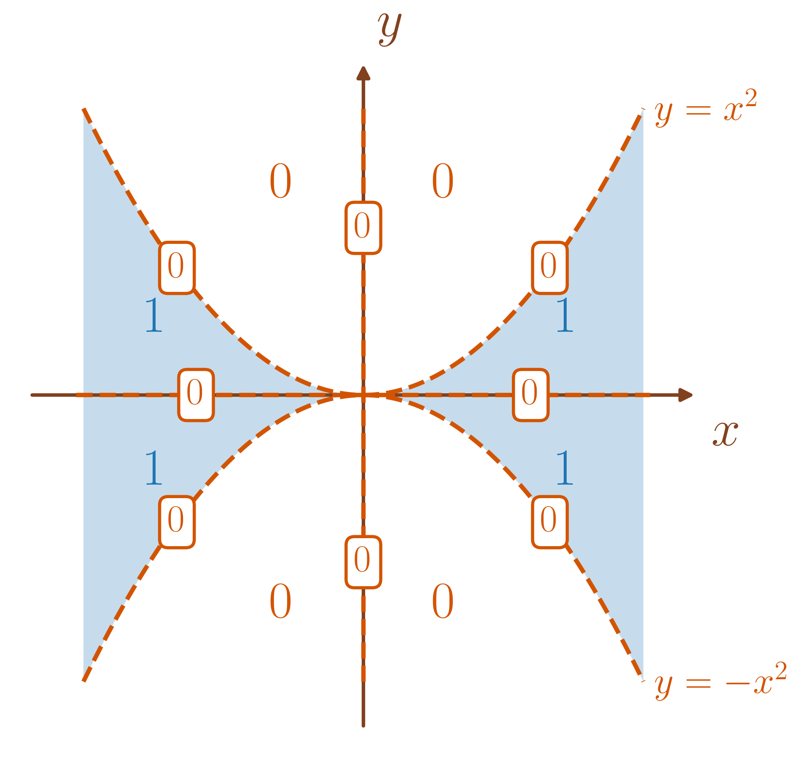
D’abord, cette fonction n’est pas continue en \(0\) car pour \(n \in \mathbb{N}^{\star}\), avec \((x_n,y_n) = \left(\frac{1}{n},\frac{1}{2n^2}\right) \xrightarrow[n \to +\infty]{} 0\), on a
\(y_n = \frac{1}{2n^2} \leq \frac{1}{n^2} = x_n^2\)
et \(y_n = \frac{1}{2n^2} \geq -\frac{1}{n^2} = -x_n^2\)
donc \(1 = f\left(x_n,y_n\right) \centernot{\xrightarrow[n \to +\infty]{}} f(0,0) = 0.\)
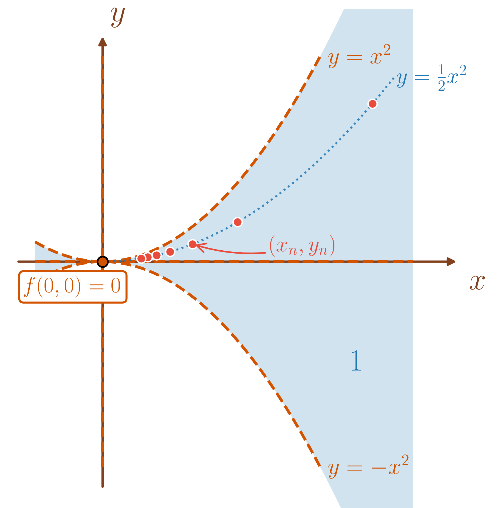
Soit \(h = (u,v) \in \mathbb{R}^2\). On étudie la dérivabilité en \(0\) de \(\psi_h(t) = f(tu,tv)\) pour \(t \in \mathbb{R}\).
Si \(v = 0\) ou \(u = 0\). Alors pour tout \(t \in \mathbb{R}\), le point \((tu,tv)\) appartient soit à l’axe des abscisses (\(tv = 0\)), soit à l’axe des ordonnées (\(tu = 0\), donc \(tv \geq 0^2\) ou \(tv \leq -0^2\)). Ainsi \(\psi_h\) est identiquement nulle sur \(\mathbb{R}\), donc dérivable en \(0\) et \(D_{h,f}(0) = \psi_h'(0) = 0\).
Si \(u \neq 0\) et \(v \neq 0\).
Posons \(r = \frac{|v|}{u^2} > 0\). Pour tout \(t \in \left]-r,r\right[ \setminus \{0\}\), on a \(|t| < \frac{|v|}{u^2}\), d’où en multipliant par \(|t|u^2 > 0\) l’inégalité \(t^2u^2 < |tv| = |y|\). Comme \(x^2 = t^2u^2\), cela signifie que \(y \geq x^2\) (si \(tv > 0\)) ou \(y \leq -x^2\) (si \(tv < 0\)). De plus \(\psi_h(0) = f(0,0) = 0\). La fonction \(\psi_h\) est donc nulle sur l’intervalle ouvert \(\left]-r,r\right[\), d’où \(D_{h,f}(0) = \psi_h'(0) = 0\).
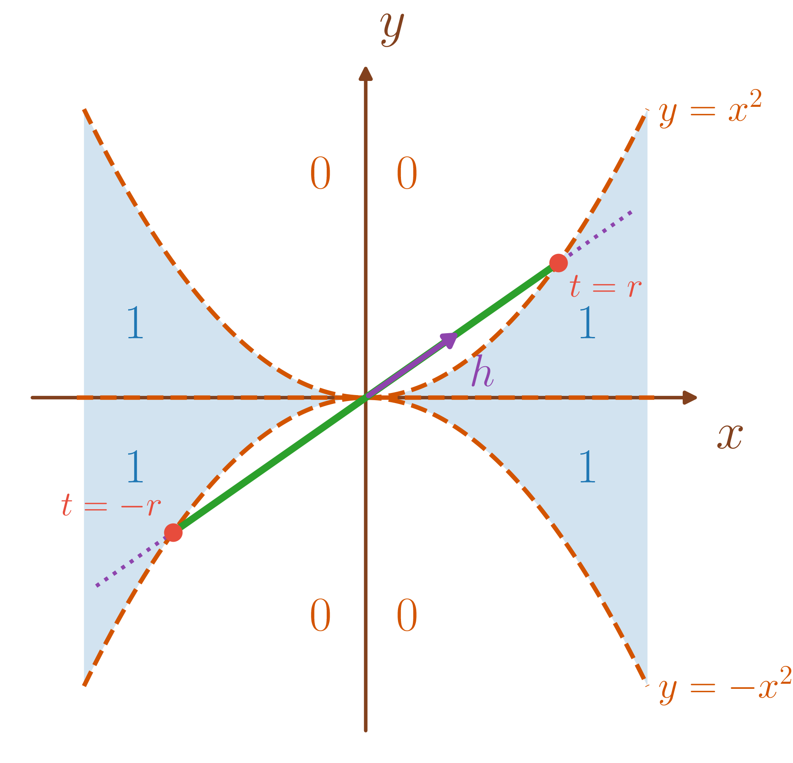
Ainsi, \(f\) admet en \(0\) toute dérivée directionnelle et \(D_{h,f}(0) = 0\) pour tout \(h \in \mathbb{R}^2\).
Soit \(\mathscr{B}= (e_1,\ldots,e_p)\) une base du \(\mathbb{R}\)-espace vectoriel \(E\), \[\begin{array}{lllll} f & : & U \subset E & \to & F \\ & & x=x_1e_1+\ldots+x_pe_p & \mapsto & f(x)=f(x_1e_1+\ldots+x_pe_p) \end{array} ,\] et \(a \in \mathring{U}\). Soit \(1 \leq j \leq p\), si \(f\) est différentiable en \(a\) alors la dérivée partielle \(\frac{\partial f}{\partial x_j}(a)\) de \(f\) en \(a\) existe et \(\frac{\partial f}{\partial x_j}(a) = df(a)(e_j)\).
Par la proposition [prop:lien_Derivéee_partielle_directionnelle], \(\frac{\partial f}{\partial x_j}(a) = D_{e_j,f}(a)\) et il suffit ensuite d’appliquer la proposition [prop:diff_vers_derivee_dict].
De la même façon que pour les dérivées directionnelles, on peut avoir l’existence des dérivées partielles sans avoir la continuité de \(f\) (ni la differentiabilité donc).
En considérant la base canonique et la fonction représentée ci-contre, on a \(\frac{\partial f}{\partial x}(0,0) = \frac{\partial f}{\partial y}(0,0) = 0\) mais \(f\) non continue en \((0,0).\)
Soit \(\mathscr{B}= (e_1,\ldots,e_p)\) une base du \(\mathbb{R}\)-espace vectoriel \(E\), \[\begin{array}{lllll} f & : & U \subset E & \to & F \\ & & x=x_1e_1+\ldots+x_pe_p & \mapsto & f(x)=f(x_1e_1+\ldots+x_pe_p) \end{array} ,\] et \(a \in \mathring{U}\).
Alors, si \(f\) est différentiable en \(a\) et \(h = h_1e_1+\ldots+h_pe_p \in E\), \[df(a)(h) = \sum_{j=1}^p h_j \frac{\partial f}{\partial x_j}(a).\]
Par le corollaire [cor:diff_derive_partielle], \[df(a)(h) = df(a)\left(\sum_{j=1}^p h_je_j\right) =\sum_{j=1}^p h_jdf(a)(e_j) = \sum_{j=1}^p h_j \frac{\partial f}{\partial x_j}(a).\]
En particulier, \(f(a+h) = f(a)+\sum_{j=1}^p h_j \frac{\partial f}{\partial x_j}(a)+\underset{h\to 0}{o}(h).\)
Soit \(\mathscr{B}= (e_1,\ldots,e_p)\) une base du \(\mathbb{R}\)-espace vectoriel \(E\), \[\begin{array}{lllll} f & : & U \subset E & \to & F \\ & & x=x_1e_1+\ldots+x_pe_p & \mapsto & f(x)=f(x_1e_1+\ldots+x_pe_p) \end{array} ,\] et \(a \in \mathring{U}\). Alors, \[f \text{ différentiable en $a$ } \iff\left\{ \begin{array}{l} \forall 1 \leq j \leq p, \frac{\partial f}{\partial x_j}(a) \text{ existe} \\ \text{ et }\forall h = h_1e_1+\ldots+h_pe_p \in E,\\ f(a+h)=f(a)+\sum_{j=1}^p h_j\frac{\partial f}{\partial x_j}(a)+\underset{h\to 0}{o}(h). \end{array}\right.\]
\((\Longrightarrow).\) est donné par le corollaire [cor:diff_sous_forme_somme_der_partielles].
\((\Longleftarrow)\). Si \(f(a+h)=f(a)+\sum_{j=1}^p h_j\frac{\partial f}{\partial x_j}(a)+\underset{h\to 0}{o}(h)\), comme \(h\mapsto \sum_{j=1}^p h_j\frac{\partial f}{\partial x_j}(a)\) est linéaire, \(f\) est différentiable en \(a\).
Etudier le differentiabilité en \((0,0)\) de \(\begin{array}{lllll} f & : & \mathbb{R}^2 & \to & \mathbb{R} \\ & & (x,y) & \mapsto & \left\{ \begin{array}{ll} 0 & \mbox{ si $(x,y) = (0,0)$,} \\ \frac{\sin(x^3)}{x^2+y^2} & \mbox{ sinon.} \end{array} \right. \end{array}\)
On va utiliser la proposition [prop:equiv_diff_derivee_partielle].
Commençons par déterminer les dérivées partielles en \((0,0)\) relativement à la base canonique.
Soit \(t \in \mathbb{R}^{\star}\), \[\frac{f(t,0)-f(0,0)}{t} = \frac{\sin(t^3)}{t^3} \underset{t\to 0}{\sim} 1\] donc \(\frac{\partial f}{\partial x}(0,0)\) existe et \(\frac{\partial f}{\partial x}(0,0)=1.\)
Soit \(t \in \mathbb{R}^{\star}\), \[\frac{f(0,t)-f(0,0)}{t} = \frac{\sin(0)}{t^3} =0\] donc \(\frac{\partial f}{\partial y}(0,0)\) existe et \(\frac{\partial f}{\partial y}(0,0)=0.\)
Vérifions maintenant si pour \(h=(h_1,h_2) \in \mathbb{R}^2\), \[f((0,0)+(h_1,h_2))-f(0,0) - h_1 = \underset{h\to 0}{o}(h)\] ie \[\gamma((h_1,h_2)) = \frac{f((h_1,h_2))-h_1}{\left\|(h_1,h_2)\right\|} \xrightarrow[h \to 0]{}0.\]
On considère la norme \(2\) telle que \(\left\|h\right\|^2 = h_1^2+h_2^2\). On a alors pour \(h \neq 0\), \[\begin{aligned} \gamma((h_1,h_2)) & = \frac{\frac{\sin(h_1^3)}{h_1^2+h_2^2}-h_1}{\sqrt{h_1^2+h_2^2}} & = \frac{\sin(h_1^3)-h_1^3-h_2^2h_1}{\left(h_1^2+h_2^2\right)^{\tfrac{3}{2}}}. \end{aligned}\] On remarque donc que pour \(h_1 \in \mathbb{R}^{+\star}\), \[\begin{aligned} \left|\gamma((h_1,h_1))\right| & = \frac{\left|\sin(h_1^3)-2h_1^3\right|}{\left(h_1^2+h_1^2\right)^{\tfrac{3}{2}}}\\ & = \frac{\left|\sin(h_1^3)-2h_1^3\right|}{2^{\tfrac{3}{2}}h_1^3}\\ & = \frac{1}{2^{\tfrac{3}{2}}}\left|\frac{\sin(h_1^3)}{h_1^3}-2\right| \\ & \xrightarrow[h_1 \to 0]{}\frac{1}{2^{\tfrac{3}{2}}} \neq 0. \end{aligned}\]
Donc \(f\) n’est pas différentiable en \((0,0).\)
Soient \(U \subset E\), \(a \in \mathring{U}\), \(f : U \subset E \to F\) et \(g : U \subset E \to F\) différentiables en \(a\).
Soient \(\lambda,\mu \in \mathbb{K}\) alors \(\lambda f +\mu g\) est différentiable en \(a\) avec \[d\left(\lambda f +\mu g\right)(a) = \lambda df(a)+\mu dg(a).\]
\(f\) est différentiable en \(a\) donc \[f(a+h) = f(a)+df(a)(h)+\underset{h\to 0}{o}(h).\]
\(g\) est différentiable en \(a\) donc \[g(a+h) = g(a)+dg(a)(h)+\underset{h\to 0}{o}(h).\]
On a donc \[(\lambda f+\mu g)(a+h) = (\lambda f+\mu g)(a)+\underbrace{\lambda df(a)(h) + \mu dg(a)(h)}_{\text{$\mathbb{R}$-linéaire en $h$}}+ \underbrace{\underset{h\to 0}{o}(h)+\underset{h\to 0}{o}(h)}_{=\underset{h\to 0}{o}(h)}\] et on en déduit que \(\lambda f +\mu g\) est différentiable en \(a\) avec \[d\left(\lambda f +\mu g\right)(a) = \lambda df(a)+\mu dg(a).\]
Si \(U\subset E\) est un ouvert, \(\left\{f : U \to F / f \text{ différentiable}\right\}\) est un sous-espace vectoriel de \(\mathscr{C}(U,F).\)
Soient \(U \subset E\), \(a \in \mathring{U}\), \(f_1 : U \subset E \to F_1\) et \(f_2 : U \subset E \to F_2\) différentiables en \(a\) (avec \(F_1,F_2\) deux \(\mathbb{K}\)-espace vectoriel de dimension finie).
Soit \(\begin{array}{lllll} \Phi & : & F_1 \times F_2 & \to & G \\ & & (y_1,y_2) & \mapsto & \Phi(y_1,y_2) \end{array}\) bilinéaire (avec \(G\) un \(\mathbb{K}\)-espace vectoriel de dimension finie).
Alors, \(\Phi(f_1,f_2)\) est différentiable en \(a\) avec pour \(h \in E\), \[d\left[\Phi(f_1,f_2)\right](a)(h) = \Phi(df_1(a)(h),f_2(a))+\Phi(f_1(a),df_2(a)(h)).\]
On commence par montrer un lemme préliminaire.
Il existe \(\gamma \in \mathbb{R}^{+}\) tel que \[\forall (y_1,y_2) \in F_1 \times F_2, \left\|\Phi(y_1,y_2)\right\| \leq \gamma \left\|y_1\right\|\left\|y_2\right\|.\]
Comme \(F_1\) et \(F_2\) sont de dimension finie, \(F_1 \times F_2\) est aussi de dimension finie donc comme \(\Phi\) est bilinéaire, \(\Phi\) est continue.
Alors, en notant \(S = \left\{(y_1,y_2) \in F_1 \times F_2 / \left\|y_1\right\| = 1 \text{ et }\left\|y_2\right\| = 1\right\}\), \(S\) est un compact (clairement fermée et bornée en dimension finie ou alors produit des sphères unité de \(F_1\) et \(F_2\) qui sont des compacts).
On a donc \(\Phi\) qui est borné sur \(S\) et en notant \(\gamma = \sup_{(y_1,y_2) \in S}\left\|\Phi(y_1,y_2)\right\|\), pour tout \((y_1,y_2) \in F \setminus \left\{(0,0)\right\}\), \(\left(\frac{y_1}{\left\|y_1\right\|},\frac{y_2}{\left\|y_2\right\|}\right) \in S\) donc \[\Phi\left(\frac{y_1}{\left\|y_1\right\|},\frac{y_2}{\left\|y_2\right\|}\right) \leq \gamma.\]
Or, \(\Phi\) est bilinéaire donc \(\Phi\left(\frac{y_1}{\left\|y_1\right\|},\frac{y_2}{\left\|y_2\right\|}\right) = \frac{1}{\left\|y_1\right\|\left\|y_2\right\|}\Phi(y_1,y_2)\) donc en multipliant l’inégalité précédente par \(\left\|y_1\right\|\left\|y_2\right\|\), on a \[\left\|\Phi(y_1,y_2)\right\| \leq \gamma \left\|y_1\right\|\left\|y_2\right\|\] et cette inégalité reste vraie si \(y_1 = 0\) ou \(y_2 = 0.\)
Soit \(h \in E\) tel que \(a+h \in U\), comme \(f_1\) et \(f_2\) sont différentiables en \(a\), il existe \(\varphi_1,\varphi_2\) telles que \(\varphi_1(h) \xrightarrow[h \to 0]{} 0\) et \(\varphi_2(h) \xrightarrow[h \to 0]{} 0\) et \[\begin{aligned} f_1(a+h)& =f_1(a)+df_1(a)(h)+\left\|h\right\|\varphi_1(h) \\ \text{ et }f_2(a+h) & = f_2(a)+df_2(a)(h)+\left\|h\right\|\varphi_2(h). \end{aligned}\] On a donc par bilinearité de \(\Phi\), \[\begin{aligned} \Phi(f_1(a+h),f_2(a+h)) = &\Phi(f_1(a)+df_1(a)(h)+\left\|h\right\|\varphi_1(h),f_2(a)+df_2(a)(h)+\left\|h\right\|\varphi_2(h))) \\ = &\Phi(f_1(a),f_2(a)) + \underbrace{\Phi(df_1(a)(h),f_2(a))+\Phi(f_1(a),df_2(a)(h))}_{\text{$\mathbb{R}$-linéaire}} \\ & \left. \begin{array}{l} +\Phi(\left\|h\right\|\varphi_1(h),f_2(a)+df_2(a)(h)+\left\|h\right\|\varphi_2(h)) \\ +\Phi(f_1(a)+df_1(a)(h),\left\|h\right\|\varphi_2(h)) \\ + \Phi(df_1(a)(h),df_2(a)(h)) \end{array} \right\} = \underset{h\to 0}{o}(h) ? \end{aligned}\]
Or, en notant \(\left|\!\left|\!\left|u\right|\!\right|\!\right| = \sup_{x \in E \setminus \left\{0\right\}} \frac{\left\|u(x)\right\|}{\left\|x\right\|} < +\infty\) pour \(u \in \mathscr{L}(E)\) (voir le cours de topologie des espaces vectoriels normés) et en prenant la constante \(\gamma\) du lemme [lem:diff_bilineaire], si \(h \neq 0\), \[\begin{aligned} & \frac{\left\|\Phi\left(\left\|h\right\|\varphi_1(h),f_2(a)+df_2(a)(h)+\left\|h\right\|\varphi_2(h)\right)\right\|}{\left\|h\right\|} \\ \leq & \frac{\gamma\left\|h\right\|\left\|\varphi_1(h)\right\|\left(\left\|f_2(a)\right\|+\left\|df_2(a)(h)\right\|+\left\|h\right\|\left\|\varphi_2(h)\right\|\right)}{\left\|h\right\|} \\ \leq & \frac{\gamma\left\|h\right\|\left\|\varphi_1(h)\right\|\left(\left\|f_2(a)\right\|+\left|\!\left|\!\left|df_2(a)\right|\!\right|\!\right|\left\|h\right\|+\left\|h\right\|\left\|\varphi_2(h)\right\|\right)}{\left\|h\right\|} \\ = & \gamma\left\|\varphi_1(h)\right\|\left(\left\|f_2(a)\right\|+\left|\!\left|\!\left|df_2(a)\right|\!\right|\!\right|\left\|h\right\|+\left\|h\right\|\left\|\varphi_2(h)\right\|\right) \xrightarrow[h \to 0]{} 0. \\ & \frac{\left\|\Phi(f_1(a)+df_1(a)(h),\left\|h\right\|\varphi_2(h))\right\|}{\left\|h\right\|} \\ \leq & \frac{\gamma\left(\left\|f_1(a)\right\|+\left|\!\left|\!\left|df_1(a)\right|\!\right|\!\right|\left\|h\right\|\right)\left\|h\right\|\left\|\varphi_2(h)\right\|}{\left\|h\right\|} \\ = & {\gamma\left(\left\|f_1(a)\right\|+\left|\!\left|\!\left|df_1(a)\right|\!\right|\!\right|\left\|h\right\|\right)\left\|\varphi_2(h)\right\|} \xrightarrow[h \to 0]{} 0. \\ & \frac{\left\|\Phi(df_1(a)(h),df_2(a)(h))\right\|}{\left\|h\right\|} \\ \leq & \gamma \frac{\left|\!\left|\!\left|df_1(a)\right|\!\right|\!\right|\left|\!\left|\!\left|df_2(a)\right|\!\right|\!\right|\left\|h\right\|^2}{\left\|h\right\|} \\ = & {\left|\!\left|\!\left|df_1(a)\right|\!\right|\!\right|\left|\!\left|\!\left|df_2(a)\right|\!\right|\!\right|\left\|h\right\|} \xrightarrow[h \to 0]{} 0. \end{aligned}\]
Donc \[\Phi(f_1(a+h),f_2(a+h)) = \Phi(f_1(a),f_2(a)) + \underbrace{\Phi(df_1(a)(h),f_2(a))+\Phi(f_1(a),df_2(a)(h))}_{\text{$\mathbb{R}$-linéaire}} +\underset{h\to 0}{o}(h)\] ce qui veut dire \(\Phi(f_1,f_2)\) est différentiable en \(a\) avec pour \(h \in E\), \[d\left[\Phi(f_1,f_2)\right](a)(h) = \Phi(df_1(a)(h),f_2(a))+\Phi(f_1(a),df_2(a)(h)).\]
En particulier, cela s’applique pour \(\begin{array}{lllll} \Phi & : & \mathbb{K}\times \mathbb{K} & \to & \mathbb{K} \\ & & (y_1,y_2) & \mapsto & y_1y_2 \end{array}\) donc si \(U\subset E\) est un ouvert, \(\left\{f : U \to \mathbb{K}/ \text{$f$ est différentiable}\right\}\) est une sous-algèbre de \(\mathscr{C}(U,\mathbb{K}).\)
Cela se généraliser à \(\Phi\) \(n\)-linéaire avec alors \[d\left[\Phi(f_1,\ldots,f_n)\right](a)(h) = \sum_{j=1}^n \Phi(f_1(a),\ldots,df_j(a)(h),\ldots,f_n(a)).\]
Soient \(U \subset E\), \(a \in \mathring{U}\) et \(f : U \subset E \to \mathbb{K}\) différentiable en \(a\) telle que \(f(a) \neq 0\).
Alors \(\frac{1}{f}\) est bien définie au voisinage de \(a\), est différentiable en \(a\) et pour tout \(h \in E\), \[d\left(\frac{1}{f}\right)(a)(h) = -\frac{df(a)(h)}{f^2(a)}.\]
Comme \(f\) est différentiable en \(a\), elle est continue en \(a\). Or \(f(a) \neq 0\), donc par continuité, il existe un voisinage ouvert \(V \subset U\) de \(a\) sur lequel \(f\) ne s’annule pas. Ainsi, \(\frac{1}{f}\) est bien définie sur \(V\).
Puisque \(f\) est différentiable en \(a\), il existe une fonction \(\varphi\) définie au voisinage de \(0\) telle que \(\varphi(h) \xrightarrow[h \to 0]{} 0\) et pour \(h \in E\) assez petit (\(a+h \in V\)), \[f(a+h) = f(a) + df(a)(h) + \left\|h\right\|\varphi(h).\] On cherche à isoler le terme linéaire en \(h\) dans la différence \(\frac{1}{f(a+h)} - \frac{1}{f(a)}\). On a \[\begin{aligned} \frac{1}{f(a+h)} - \frac{1}{f(a)} & = \frac{f(a) - f(a+h)}{f(a+h)f(a)} \\ & = \frac{-df(a)(h) - \left\|h\right\|\varphi(h)}{f(a+h)f(a)} \\ & = -\frac{df(a)(h)}{f^2(a)} + \frac{df(a)(h)}{f^2(a)} - \frac{df(a)(h)}{f(a+h)f(a)} - \frac{\left\|h\right\|\varphi(h)}{f(a+h)f(a)} \\ & = \underbrace{-\frac{df(a)(h)}{f^2(a)}}_{\text{$\mathbb{R}$-linéaire}} + \underbrace{\begin{array}{l} df(a)(h)\left(\frac{1}{f^2(a)} - \frac{1}{f(a+h)f(a)}\right) \\ - \frac{\left\|h\right\|\varphi(h)}{f(a+h)f(a)} \end{array}}_{=\underset{h\to 0}{o}(h) \text{ ?}} \end{aligned}\] Vérifions que chacun de ces deux termes est négligeable devant \(\left\|h\right\|\) lorsque \(h \to 0\) (pour \(h \neq 0\)).
D’une part, en utilisant la continuité de l’application linéaire \(df(a)\) (avec \(\left|\!\left|\!\left|df(a)\right|\!\right|\!\right| < +\infty\)), on a \[\begin{aligned} \frac{\left|df(a)(h)\left(\frac{1}{f^2(a)} - \frac{1}{f(a+h)f(a)}\right)\right|}{\left\|h\right\|} & \leq \frac{\left|\!\left|\!\left|df(a)\right|\!\right|\!\right|\left\|h\right\|}{\left\|h\right\|} \left|\frac{1}{f^2(a)} - \frac{1}{f(a+h)f(a)}\right| \\ & = \left|\!\left|\!\left|df(a)\right|\!\right|\!\right| \left|\frac{1}{f^2(a)} - \frac{1}{f(a+h)f(a)}\right| \xrightarrow[h \to 0]{} 0 \end{aligned}\] car \(f(a+h) \xrightarrow[h \to 0]{} f(a)\) par continuité de \(f\) en \(a\).
D’autre part, \[\frac{\left|- \frac{\left\|h\right\|\varphi(h)}{f(a+h)f(a)}\right|}{\left\|h\right\|} = \frac{\left|\varphi(h)\right|}{\left|f(a+h)f(a)\right|} \xrightarrow[h \to 0]{} \frac{0}{\left|f(a)\right|^2} = 0.\] On en déduit que \[\frac{1}{f(a+h)} = \frac{1}{f(a)} - \frac{df(a)(h)}{f^2(a)} + \underset{h\to 0}{o}(h),\] ce qui montre que \(\frac{1}{f}\) est différentiable en \(a\) et que \(d\left(\frac{1}{f}\right)(a)(h) = -\frac{df(a)(h)}{f^2(a)}\) pour tout \(h \in E\).
Soient \(U \subset E\), \(V \subset F\), \(a \in \mathring{U}\), \(f : U \to F\) une application telle que \(f(U) \subset V\), \(f(a) \in \mathring{V}\) et \(g : V \to G\) une application (avec \(G\) un \(\mathbb{K}\)-espace vectoriel normé de dimension finie).
On suppose que \(f\) est différentiable en \(a\) et que \(g\) est différentiable en \(f(a)\).
Alors \(g \circ f\) est différentiable en \(a\) et pour tout \(h \in E\), \[d(g \circ f)(a)(h) = dg(f(a))\left(df(a)(h)\right) = \left(dg(f(a)) \circ df(a)\right)(h).\]
Comme \(f\) est différentiable en \(a\), il existe une fonction \(\varphi_f\) définie au voisinage de \(0_E\) telle que \(\varphi_f(h) \xrightarrow[h \to 0]{} 0_F\) et pour \(h \in E\) assez petit (\(a+h \in U\)), \[f(a+h) = f(a) + df(a)(h) + \left\|h\right\|\varphi_f(h).\] De même, comme \(g\) est différentiable en \(b = f(a)\), il existe une fonction \(\varphi_g\) définie au voisinage de \(0_F\) telle que \(\varphi_g(k) \xrightarrow[k \to 0]{} 0_G\), \(\varphi_g(0_F) = 0_G\) et pour \(k \in F\) assez petit (\(b+k \in V\)), \[g(b+k) = g(b) + dg(b)(k) + \left\|k\right\|\varphi_g(k).\]
Pour \(h \in E\) assez petit, posons \(k(h) = f(a+h) - f(a) = df(a)(h) + \left\|h\right\|\varphi_f(h)\). Comme \(f(a+h) \in V\), on a \(b + k(h) \in V\) et on peut écrire, par linéarité de \(dg(b)\), \[\begin{aligned} (g \circ f)(a+h) = g(b + k(h)) & = g(b) + dg(b)\left(df(a)(h) + \left\|h\right\|\varphi_f(h)\right) + \left\|k(h)\right\|\varphi_g\left(k(h)\right) \\ & = (g \circ f)(a) + \underbrace{dg(f(a))\left(df(a)(h)\right)}_{\text{$\mathbb{R}$-linéaire en $h$}} + \underbrace{\begin{array}{l} \left\|h\right\| dg(f(a))\left(\varphi_f(h)\right) \\ + \left\|k(h)\right\|\varphi_g\left(k(h)\right) \end{array}}_{ = \underset{h\to 0}{o}(h) \text{ ?}} \end{aligned}\] Vérifions que chacun de ces deux termes est négligeable devant \(\left\|h\right\|\) lorsque \(h \to 0\) (pour \(h \neq 0\)).
D’une part, comme l’application linéaire \(dg(f(a))\) est continue (\(\left|\!\left|\!\left|dg(f(a))\right|\!\right|\!\right| < +\infty\)), on a \[\frac{\left\|\left\|h\right\| dg(f(a))\left(\varphi_f(h)\right)\right\|}{\left\|h\right\|} = \left\|dg(f(a))\left(\varphi_f(h)\right)\right\| \leq \left|\!\left|\!\left|dg(f(a))\right|\!\right|\!\right| \left\|\varphi_f(h)\right\| \xrightarrow[h \to 0]{} 0.\] D’autre part, majorons la norme de \(k(h)\) en utilisant la continuité de \(df(a)\) \[\left\|k(h)\right\| = \left\|df(a)(h) + \left\|h\right\|\varphi_f(h)\right\| \leq \left(\left|\!\left|\!\left|df(a)\right|\!\right|\!\right| + \left\|\varphi_f(h)\right\|\right)\left\|h\right\|.\] On en déduit que \(k(h) \xrightarrow[h \to 0]{} 0_F\), puis pour \(h \neq 0\), \[\frac{\left\|\left\|k(h)\right\|\varphi_g\left(k(h)\right)\right\|}{\left\|h\right\|} \leq \left(\left|\!\left|\!\left|df(a)\right|\!\right|\!\right| + \left\|\varphi_f(h)\right\|\right) \left\|\varphi_g\left(k(h)\right)\right\| \xrightarrow[h \to 0]{} \left|\!\left|\!\left|df(a)\right|\!\right|\!\right| \times 0 = 0.\] On obtient finalement \[(g \circ f)(a+h) = (g \circ f)(a) + dg(f(a))\left(df(a)(h)\right) + \underset{h\to 0}{o}(h),\] ce qui prouve que \(g \circ f\) est différentiable en \(a\) avec \(d(g \circ f)(a) = dg(f(a)) \circ df(a)\).
En particulier, si \(g\) est linéaire, \(d(g\circ f)(a) = g\circ df(a)\) (car \(dg(a) = g\)).
Soient \(I\) un intervalle de \(\mathbb{R}\), \(\begin{array}{lllll} \varphi & : & I & \to & E \\ & & t & \mapsto & \varphi(t) \end{array}\), \(\begin{array}{lllll} f & : & U \subset E & \to & F \\ & & x & \mapsto & f(x) \end{array}\) telles que \(\varphi(I) \subset U\).
Soit \(t \in I\), si \(\varphi\) est dérivable en \(t\) alors \(f \circ \varphi\) est dérivable en \(t\) avec \[\left(f \circ \varphi\right)'(t) = df(\varphi(t))(\varphi'(t)).\]
Par la proposition [prop:diff_cas_R], \(\varphi\) est différentiable en \(t\) avec pour tout \(h \in \mathbb{R}\), \[d \varphi(t)(h) = h\varphi'(t).\] Donc par la proposition [prop:diff_composition], \(f \circ \varphi\) est différentiable en \(t\) avec pour tout \(h \in \mathbb{R}\), \[d\left[f \circ \varphi\right](t)(h) = df(\varphi(t))(d \varphi(t)(h)) = hdf(\varphi(t))(\varphi'(t)).\] Enfin, par la proposition [prop:diff_cas_R], \(f \circ \varphi\) est dérivable en \(t\) avec \[\left(f \circ \varphi\right)'(t) = d\left[f \circ \varphi\right](t)(1) = df(\varphi(t))(\varphi'(t)).\]
Soit \(\mathscr{B}= (e_1,\ldots,e_p)\) une base de \(E\), si \(\varphi = \varphi_1 e_1+\ldots+\varphi_p e_p\) est dérivable et \(f\) est différentiable alors \(f \circ \varphi\) est dérivable avec \[\begin{aligned} \left(f \circ \varphi\right)'(t) & = df(\varphi(t))(\varphi'(t)) \\ & = df(\varphi(t))(\sum_{j=1}^p \varphi_j'(t) e_j) \\ & = \sum_{j=1}^p \varphi_j'(t) df(\varphi(t))(e_j) \\ & = \sum_{j=1}^p \varphi_j'(t) \frac{\partial f}{\partial x_j}(\varphi(t)). \end{aligned}\]
Soient \(U \subset E\), \(a \in \mathring{U}\) et \(f : U \subset E \to F\) différentiable en \(a\). Soit \(h \in E,\) \(a \in \mathring{U}\) donc il existe \(r > 0\) tel que \(B(a,r) \subset U\) et \[\begin{array}{lllll} \psi_h & : & \left]-\frac{r}{\left\|h\right\|},\frac{r}{\left\|h\right\|}\right[ & \to & F \\ & & t & \mapsto & f(a+th) \end{array}\] est définie.
De plus, \(\psi_h\) est dérivable avec \[\forall t \in \left]-\frac{r}{\left\|h\right\|},\frac{r}{\left\|h\right\|}\right[, \psi_h'(t) = df(a+th)(h).\]
\(\psi_h = f \circ \varphi_h\) avec \(\begin{array}{lllll} \varphi_h & : & \left]-\frac{r}{\left\|h\right\|},\frac{r}{\left\|h\right\|}\right[ & \to & E \\ & & t & \mapsto & a+th \end{array}\) dérivable
de dérivée \(\begin{array}{lllll} \varphi_h' & : & \left]-\frac{r}{\left\|h\right\|},\frac{r}{\left\|h\right\|}\right[ & \to & E \\ & & t & \mapsto & h \end{array} .\)
Donc par le corollaire [cor:compo_derivable_diff], \[\forall t \in \left]-\frac{r}{\left\|h\right\|},\frac{r}{\left\|h\right\|}\right[, \psi_h'(t) = df(\varphi_h(t))(\varphi_h'(t)) = df(a+th)(h).\]
Montrons que \(\begin{array}{lllll} f & : & \mathbb{R}^3 & \to & \mathbb{R} \\ & & (x,y,z) & \mapsto & xy^2+e^{xz}+z^2 \end{array}\) est différentiable en \(f\) et calculons \(df(1,1,1).\)
\(\left.\begin{array}{l} (x,y,z) \in \mathbb{R}^3 \mapsto x \\ (x,y,z) \in \mathbb{R}^3 \mapsto y \\ (x,y,z) \in \mathbb{R}^3 \mapsto z \\ \end{array}\right\}\) sont différentiables car linéaire.
Donc \(\left.\begin{array}{l} (x,y,z) \in \mathbb{R}^3 \mapsto xy^2 \\ (x,y,z) \in \mathbb{R}^3 \mapsto z^2 \\ (x,y,z) \in \mathbb{R}^3 \mapsto xz \\ \end{array}\right\}\) sont différentiables par produit.
De plus, \(t \in \mathbb{R}\mapsto e^t\) est dérivable donc différentiable et donc par composition, \((x,y,z) \in \mathbb{R}^3 \mapsto e^{xz}\) est différentiable par produit.
On en déduit que par somme, \(f\) est différentiable.
Pour exprimer \(df(1,1,1)\), on utilise la proposition [prop:equiv_diff_derivee_partielle]. On a \[\begin{aligned} \forall (x,y,z) \in \mathbb{R}^3, \frac{\partial f}{\partial x}(x,y,z) & = y^2+ze^{xz}\\ \frac{\partial f}{\partial y}(x,y,z) & = 2yx\\ \frac{\partial f}{\partial z}(x,y,z) & = xe^{xz}+2z \\ \text{donc } \frac{\partial f}{\partial x}(1,1,1) & = 1+e\\ \frac{\partial f}{\partial y}(1,1,1) & = 2\\ \frac{\partial f}{\partial z}(1,1,1) & = e+2. \end{aligned}\]
On en déduit alors \[\forall (h_1,h_2,h_3) \in \mathbb{R}^3, df(1,1,1)(h_1,h_2,h_3) = (1+e)h_1+2h_2+(e+2)h_3.\]
Soit \(f : U \subset E \to F\) une application et \(a \in \mathring{U}\). On considère une base \(\mathscr{B}= (u_1,\ldots,u_n)\) de \(F\) et on note \(f_1, \ldots, f_n : U \to \mathbb{K}\) les applications coordonnées de \(f\) dans la base \(\mathscr{B}\), de sorte que \(f = \sum_{j=1}^n f_j u_j\).
Montrer que \[\text{$f$ est différentiable en $a$} \iff \forall 1 \leq j \leq n, \text{ $f_j$ est différentiable en $a$}.\] et que dans ce cas, pour tout \(h \in E\), \[df(a)(h) = \sum_{j=1}^n df_j(a)(h) u_j.\]
Supposons que pour tout \(1 \leq j \leq n\), \(f_j\) est différentiable en \(a\). Il existe alors des fonctions \(\varphi_1, \ldots, \varphi_n\) telles que \(\varphi_j(h) \xrightarrow[h \to 0]{} 0\) et pour \(h \in E\) tel que \(a+h \in U\), \[\forall 1 \leq j \leq n, \quad f_j(a+h) = f_j(a) + df_j(a)(h) + \left\|h\right\|\varphi_j(h).\] En sommant ces égalités après multiplication par \(u_j\), on obtient \[\begin{aligned} f(a+h) = \sum_{j=1}^n f_j(a+h) u_j & = \sum_{j=1}^n \left(f_j(a) + df_j(a)(h) + \left\|h\right\|\varphi_j(h)\right) u_j \\ & = \sum_{j=1}^n f_j(a) u_j + \underbrace{\sum_{j=1}^n df_j(a)(h) u_j}_{\text{$\mathbb{R}$-linéaire en $h$}} + \left\|h\right\| \underbrace{\sum_{j=1}^n \varphi_j(h) u_j}_{= \varphi(h)}. \end{aligned}\] Or \(\varphi(h) = \sum_{j=1}^n \varphi_j(h) u_j \xrightarrow[h \to 0]{} 0_F\) comme combinaison linéaire finie de fonctions tendant vers \(0\) en \(0\). Ainsi, \(f\) est bien différentiable en \(a\) et sa différentielle vérifie \(df(a)(h) = \sum_{j=1}^n df_j(a)(h) u_j\).
Réciproquement, supposons \(f\) différentiable en \(a\). Pour chaque \(1 \leq j \leq n\), notons \(\pi_j : F \to \mathbb{K}\) la \(j\)-ième forme linéaire coordonnée dans la base \(\mathscr{B}\), définie par \(\pi_j\left(\sum_{k=1}^n x_k u_k\right) = x_j\).
Comme \(F\) est de dimension finie, chaque application linéaire \(\pi_j\) est continue, donc différentiable en tout point de \(F\) avec \(d\pi_j(y) = \pi_j\) pour tout \(y \in F\). Or, on a \(f_j = \pi_j \circ f\). Par composition d’applications différentiables, \(f_j\) est différentiable en \(a\) et pour tout \(h \in E\), \[df_j(a)(h) = d(\pi_j \circ f)(a)(h) = d\pi_j(f(a))\left(df(a)(h)\right) = \pi_j\left(df(a)(h)\right).\] En décomposant le vecteur \(df(a)(h) \in F\) dans la base \(\mathscr{B}\), on retrouve immédiatement la formule annoncée \[df(a)(h) = \sum_{j=1}^n \pi_j\left(df(a)(h)\right) u_j = \sum_{j=1}^n df_j(a)(h) u_j.\]
Soient \(\begin{array}{lllll} f & : & U \subset E & \to & F \\ & & x & \mapsto & f(x) \end{array}\) et \(\begin{array}{lllll} g & : & V \subset F & \to & G \\ & & y & \mapsto & g(y) \end{array}\) (avec \(G\) un \(\mathbb{K}\)-espace vectoriel de dimension finie) tels que \(f(U) \subset V\).
Soit \(a \in \mathring{U}\) tel que \(f(a) \in \mathring{V}\), on suppose \(f\) différentiable en \(a\) et \(g\) différentiable en \(f(a)\).
Soient \(\mathscr{B}= (e_1,\ldots,e_p)\) une base du \(\mathbb{R}\)-espace vectoriel \(E\) et \(\mathscr{B}' = (u_1,\ldots,u_n)\) une base du \(\mathbb{R}\)-espace vectoriel \(F\) telles
pour tout \(x = x_1e_1+\ldots+x_p e_p\), \(f(x) = f(x_1 e_1+\ldots+x_p e_p)\),
\(f(x) = f_1(x)u_1+\ldots+f_n(x)u_n\),
pour tout \(y = y_1u_1+\ldots+y_n u_n\), \(g(y) = g(y_1 u_1+\ldots+y_n u_n)\).
Alors, pour tout \(1 \leq j \leq p\), \(\frac{\partial \left(g \circ f\right)}{\partial x_j}(a)\) existe et \[\frac{\partial \left(g \circ f\right)}{\partial x_j}(a) = \sum_{i=1}^n \frac{\partial f_i}{\partial x_j}(a) \frac{\partial g}{\partial y_i}(f(a)).\]
Par la proposition [prop:diff_composition], \(g \circ f\) existe donc par le corollaire [cor:diff_derive_partielle], pour \(1 \leq j \leq p\), \(\frac{\partial \left(g \circ f\right)}{\partial x_j}(a)\) existe et de plus, par le corollaire [cor:diff_derive_partielle] et le dernier point du corollaire [cor:premiers_prop_derivee_partielle], \[\begin{aligned} \frac{\partial \left(g \circ f\right)}{\partial x_j}(a) & = d\left(g \circ f\right)(a)(e_j) \\ & = dg(f(a))(df(a)(e_j)) \\ & = dg(f(a))(\frac{\partial f}{\partial x_j}(a)) \\ & = dg(f(a))\left(\sum_{i=1}^n \frac{\partial f_i}{\partial x_j}(a) u_i\right) \\ & = \sum_{i=1}^n \frac{\partial f_i}{\partial x_j}(a)dg(f(a))(u_i) \\ & = \sum_{i=1}^n \frac{\partial f_i}{\partial x_j}(a) \frac{\partial g}{\partial y_i}(f(a)). \end{aligned}\]
En réalité, l’hypothèse de différentiabilité sur \(f\) n’est pas nécessaire : il suffit que les dérivées partielles \(\frac{\partial f_i}{\partial x_j}(a)\) (pour \(1 \leq i \leq n\)) existent, puisqu’on ne fait varier que la \(j\)-ième coordonnée au départ. En revanche, la différentiabilité de \(g\) en \(f(a)\) reste indispensable. En effet, connaître les dérivées partielles \(\frac{\partial g}{\partial y_i}(f(a))\) ne renseigne sur le comportement de \(g\) qu’en des points de la forme \(f(a) + h u_i\), c’est-à-dire lorsqu’on ne fait varier qu’une seule coordonnée à la fois autour de \(f(a)\) (le long des axes de la base \(\mathscr{B}'\)). Or, pour calculer \(\frac{\partial \left(g \circ f\right)}{\partial x_j}(a)\), on doit évaluer \(g\) aux points \[f(a + te_j) = f(a) + \sum_{i=1}^n \left(f_i(a + te_j) - f_i(a)\right) u_i,\] où toutes les coordonnées varient simultanément lorsque \(t \to 0\). Le point \(f(a + te_j)\) approche donc \(f(a)\) dans une direction quelconque, en dehors des axes de \(\mathscr{B}'\). Il faut alors disposer d’une approximation affine de \(g\) valable dans toutes les directions autour de \(f(a)\), ce qui est précisément la définition de la différentiabilité.
Soient \(\begin{array}{lllll} f & : & \mathbb{R} & \to & \mathbb{R}^2 \\ & & t & \mapsto & (t,t) \end{array}\) et \(\begin{array}{lllll} g & : & \mathbb{R}^2 & \to & \mathbb{R} \\ & & (y_1, y_2) & \mapsto & \sqrt{|y_1 y_2|} \end{array}\).
La fonction \(f\) est de classe \(\mathscr{C}^\infty\) (donc différentiable) sur \(\mathbb{R}\), et en particulier en \(0\), avec \(f(0) = (0,0)\).
Les dérivées partielles de \(g\) existent en \((0,0)\) puisque les applications partielles \[y_1 \longmapsto g(y_1, 0) = 0 \qquad \text{et} \qquad y_2 \longmapsto g(0, y_2) = 0\] sont identiquement nulles sur \(\mathbb{R}\). Ainsi, \(\frac{\partial g}{\partial y_1}(0,0) = \frac{\partial g}{\partial y_2}(0,0) = 0\).
Pourtant, pour tout \(t \in \mathbb{R}\), on a \((g \circ f)(t) = \sqrt{|t^2|} = |t|\), qui n’est pas dérivable en \(0\).
La formule de dérivation d’une fonction composée ne s’applique donc pas ici, ce qui illustre que l’hypothèse de différentiabilité de \(g\) en \(f(a)\) ne peut pas être remplacée par la seule existence de ses dérivées partielles.
Pour \(\begin{array}{lllll} f & : & \mathbb{R}^3 & \to & \mathbb{R} \\ & & (x_1,x_2,x_3)) & \mapsto & (x_1^2x_2,e^{x_2x_3},\sin(x_1x_3^2) \end{array}\) et \(\begin{array}{lllll} g & : & \mathbb{R}^3 & \to & G \\ & & (y_1,y_2,y_3) & \mapsto & g(y_1,y_2,y_3) \end{array}\) différentiable avec \(G\) un \(\mathbb{K}\)-espace vectoriel de dimension finie. Alors, pour \(x = (x_1,x_2,x_3) \in \mathbb{R}^3\), \[\begin{aligned} \frac{\partial g \circ f}{\partial x_1}(x) &= 2x_1x_2\frac{\partial g}{\partial y_1}(x_1^2x_2,e^{x_2x_3},\sin(x_1x_3^2)) \\ &\quad + 0 \\ &\quad + x_3^2\cos(x_1x_3^2)\frac{\partial g}{\partial y_3}(x_1^2x_2,e^{x_2x_3},\sin(x_1x_3^2)) \\ \frac{\partial g \circ f}{\partial x_2}(x) &= x_1^2\frac{\partial g}{\partial y_1}(x_1^2x_2,e^{x_2x_3},\sin(x_1x_3^2)) \\ &\quad + x_3e^{x_2x_3}\frac{\partial g}{\partial y_2}(x_1^2x_2,e^{x_2x_3},\sin(x_1x_3^2)) \\ &\quad + 0 \\ \frac{\partial g \circ f}{\partial x_3}(x) &= 0 \\ &\quad + x_2e^{x_2x_3}\frac{\partial g}{\partial y_2}(x_1^2x_2,e^{x_2x_3},\sin(x_1x_3^2)) \\ &\quad + 2x_1x_3\cos(x_1x_3^2)\frac{\partial g}{\partial y_3}(x_1^2x_2,e^{x_2x_3},\sin(x_1x_3^2)) \end{aligned}\]
Soient \(U \subset E\), \(a \in \mathring{U}\) et \(f: U \subset E \to F\) telle que \(f\) est différentiable en \(a\) alors \(df(a) \in \mathscr{L}_{\mathbb{R}}(E,F)\).
Soient \(\mathscr{B}= (e_1,\ldots,e_p)\) une base du \(\mathbb{R}\)-espace vectoriel \(E\) et \(\mathscr{B}' = (u_1,\ldots,u_n)\) une base du \(\mathbb{R}\)-espace vectoriel \(F\).
Alors, \(\mathscr{M}_{\mathscr{B},\mathscr{B}'}(df(a)) \in \mathscr{M}_{n,p}(\mathbb{K})\) est appelée la matrice jacobienne de \(f\) en \(a\) relativement aux bases \(\mathscr{B}\) et \(\mathscr{B}'\).
On la note \(J_f(a)\) ou \(J_{f,\mathscr{B},\mathscr{B}'}(a)\).
Si \(E = F\), \(J_{f,\mathscr{B},\mathscr{B}}(a)\) est carrée et \(\det(df(a)) = \det(J_f(a))\) est appelé la jacobien de \(f\) en \(a\).
Sous hypothèses de differentiabilité,
\(J_{g \circ f}(a) = J_{g}(f(a)) J_f(a)\) car \(d(g\circ f)(a) = dg(f(a))\circ df(a).\)
En particulier, si \(f\) est bijective et \(g^{-1}\), \(I_n = J_{\mathop{\mathrm{Id}}_E}(a) =J_{g \circ f}(a) = J_{g}(f(a)) J_f(a)\) donc \(J_{f^{-1}}(a) = J_f^{-1}(a).\)
Soient \(U \subset E\), \(a \in \mathring{U}\) et \(f: U \subset E \to F\) telle que \(f\) est différentiable en \(a\) alors \(df(a) \in \mathscr{L}_{\mathbb{R}}(E,F)\).
Soient \(\mathscr{B}= (e_1,\ldots,e_p)\) une base du \(\mathbb{R}\)-espace vectoriel \(E\) et \(\mathscr{B}' = (u_1,\ldots,u_n)\) une base du \(\mathbb{R}\)-espace vectoriel \(F\).
On écrit \(f = f_1u_1+\ldots+f_nu_n\) et alors la jacobienne \(J_f(a)\) de \(f\) en \(a\) relativement aux bases \(\mathscr{B}\) et \(\mathscr{B}'\) s’écrit \[J_f(a) = \left(\frac{\partial f_i}{\partial x_j}(a)\right) = \begin{pmatrix} \frac{\partial f_1}{\partial x_1}(a) & \frac{\partial f_1}{\partial x_2}(a) & \cdots & \frac{\partial f_1}{\partial x_p}(a) \\ \frac{\partial f_2}{\partial x_1}(a) & \frac{\partial f_2}{\partial x_2}(a) & \cdots & \frac{\partial f_2}{\partial x_p}(a) \\ \vdots & \vdots & \ddots & \vdots \\ \frac{\partial f_n}{\partial x_1}(a) & \frac{\partial f_n}{\partial x_2}(a) & \cdots & \frac{\partial f_n}{\partial x_p}(a) \end{pmatrix}.\]
Le coefficient \((i,j)\) (avec \(1 \leq i \leq n\), \(1 \leq j \leq p\)) de \(J_f(a)\) est la \(i\)-ème coordonnée dans \(\mathscr{B}'\) de \(df(a)(e_j)\).
Or, par le corollaire [cor:diff_derive_partielle] et le dernier point du corollaire [cor:premiers_prop_derivee_partielle], \[df(a)(e_j) = \frac{\partial f}{\partial x_j}(a) = \sum_{i=1}^n \frac{\partial f_i}{\partial x_j}(a)u_i\] et ce coefficient est \(\frac{\partial f_i}{\partial x_j}(a)\).
Si \(E = \mathbb{R}^p\), \(F = \mathbb{R}^n\) et que l’on considère la base canonique sur chacun de ces espaces alors en notant \(f(x) = \begin{pmatrix} f_1(x) \\ \vdots \\ f_n(x) \end{pmatrix}\) pour \(x \in U\) et \(J_f(a)\) la jacobienne de \(f\) en \(a\), on a pour tout \(h = \begin{pmatrix} h_1 \\ \vdots \\ h_p \end{pmatrix} \in E\), \(df(a)(h) = J_f(a)h\).
Donc \(f(a+h) = f(a) + J_f(a)h + \underset{h\to 0}{o}(h)\) ie \[\begin{pmatrix} f_1(a+h) \\ \vdots \\ \vdots \\ \vdots \\ f_n(a+h) \end{pmatrix} = \begin{pmatrix} f_1(a) \\ \vdots \\ \vdots \\ \vdots \\ f_n(a) \end{pmatrix} + \begin{pmatrix} \frac{\partial f_1}{\partial x_1}(a) & \frac{\partial f_1}{\partial x_2}(a) & \cdots & \frac{\partial f_1}{\partial x_p}(a) \\ \frac{\partial f_2}{\partial x_1}(a) & \frac{\partial f_2}{\partial x_2}(a) & \cdots & \frac{\partial f_2}{\partial x_p}(a) \\ \vdots & \vdots & \ddots & \vdots \\ \frac{\partial f_n}{\partial x_1}(a) & \frac{\partial f_n}{\partial x_2}(a) & \cdots & \frac{\partial f_n}{\partial x_p}(a) \end{pmatrix}\begin{pmatrix} h_1 \\ \vdots \\ \vdots \\ h_p \end{pmatrix}+ \underset{h\to 0}{o}(h).\]
Soit \(\begin{array}{lllll} f & : & \mathbb{R}^2 & \to & \mathbb{R}^2 \\ & & (r,\theta) & \mapsto & (r\cos \theta, r\sin \theta) \end{array}\) alors \(f\) est différentiable et la jacobienne de \(f\) en \((r,\theta) \in \mathbb{R}^2\) dans le base canonique de \(\mathbb{R}^2\) est \[J_f(r,\theta) = \begin{pmatrix} \cos \theta & -r \sin \theta \\ \sin \theta & r\cos \theta \end{pmatrix}.\]
Dans cette partie, on suppose que \((E,\langle \cdot, \cdots, \rangle)\) est un espace euclidien de dimension finie (donc \(\mathbb{K}= \mathbb{R}\)).
(Théorème de représentation de Riesz) Soit \(\varphi : E \to \mathbb{R}\) une forme linéaire (ie \(\varphi \in E^\star\)).
Alors il existe \(u \in E\) unique tel que \[\forall h \in E, \varphi(h) = \langle u,h \rangle.\]
(Existence). Soit \(\mathscr{B}= (e_1,\ldots,e_p)\) une base orthonormée de \(E\) ainsi que \(h = h_1e_1+\ldots+h_p e_p \in E\) et \(u = u_1e_1+\ldots+u_p e_p \in E\) alors on a \[\langle u,h \rangle = u_1h_1 + \ldots+ u_ph_p.\]
Or, \(\varphi(h) = h_1\varphi(e_1)+\ldots+h_p \varphi(e_p).\)
Donc avec \(u\) tel que \(u_j = \varphi(e_j)\) pour tout \(1 \leq j \leq p\), on a bien \(\varphi(h) = \langle u, h\rangle\) pour tout \(h \in E\).
(Unicité). Si \(u,v\) conviennent alors pour tout \(h \in E\), \[\langle u,h \rangle = \langle v,h \rangle \Longrightarrow \langle u-v,h \rangle = 0.\] Donc, en particulier, pour \(h = u-v\), on a \(\left\|u-v\right\|^2\) donc \(u=v.\)
Il existe une preuve plus simple en montrant que \[\begin{array}{llll} & E & \to & E^\star \\ & u & \mapsto & \left\{ \begin{array}{llll} & E & \to & R \\ & h & \mapsto & \langle u,h \rangle \end{array} \right. \end{array}\] est injective donc bijective car \(\dim E = \dim E^\star\) mais elle est moins constructive. On sait, par exemple, par la preuve précédente que la réciproque de cette fonction est \[\begin{array}{llll} & E^\star & \to & E \\ & \varphi & \mapsto & \begin{pmatrix} \varphi(e_1) \\ \vdots \\ \varphi(e_p). \end{pmatrix} \end{array}\] avec \((e_1,\ldots,e_p)\) une base orthonormée de \(E\).
\(\mathop{\mathrm{Ker}}\varphi = u^\perp\) qui est un hyperplan, sauf si \(u=0\).
Soient \(f : U \subset E \to \mathbb{R}\) et \(a \in \mathring{U}\) tels que \(f\) est différentiable en \(a\).
Alors, \(df(a) \in E^\star\) est il existe donc \(u_a \in E\) unique (donné par le théorème de Riesz) tel que pour tout \(h \in E\), \[df(a)(h) = \langle u_a,h\rangle.\] \(u_a\) est noté \(\nabla f(a)\) et est appelé le gradient de \(f\) en \(a\).
On a alors \(f(a+h) = f(a) + \langle \nabla f(a), h \rangle + \underset{h\to 0}{o}(h).\)
Si \(f\) est différentiable sur \(U\), \(\nabla f\) est à valeurs de \(U\) dans \(E\) (pas comme \(f\) !).
Soient \(f : U \subset E \to \mathbb{R}\) et \(a \in \mathring{U}\) tels que \(f\) est différentiable en \(a\).
Soit \(\mathscr{B}= (e_1,\ldots,e_p)\) une base orthonormée de \(E\) alors
\[\nabla f(a) = \frac{\partial f}{\partial x_1}(a)e_1+\ldots+\frac{\partial f}{\partial x_p}(a)e_p\] où les \(\frac{\partial f}{\partial x_j}\) sont les dérivées partielles relativement à \(\mathscr{B}\).
Pour tout \(1 \leq j \leq p\), \[\frac{\partial f}{\partial x_1}(a) = df(a)(e_j) = \langle \nabla f(a), e_j \rangle\] et comme \(\mathscr{B}\) est orhonormée, \[\nabla f(a) = \sum_{j=1}^p \langle \nabla f(a), e_j \rangle e_j.\]
Si \(E = \mathbb{R}^p\) et \(\langle \cdot, \cdot \rangle\) est le produit scalaire canonique alors la base canonique est orthonormée et donc \(\nabla f(a) = \begin{pmatrix} \frac{\partial f}{\partial x_1}(a) \\ \vdots \\ \frac{\partial f}{\partial x_p}(a) \end{pmatrix}\) tel que pour tout \(h \in \mathbb{R}^p,\) \(df(a)(h) = \langle \nabla f(a),h \rangle = \sum_{j=1}^p h_j \frac{\partial f}{\partial x_j}(a).\)
Par exemple, pour \(\begin{array}{lllll} f & : & \mathbb{R}^3 & \to & \mathbb{R} \\ & & (x,y,z) & \mapsto & x^2+yz+\sin(z) \end{array}\) alors \(f\) est différentiable et pour tout \((x,y,z) \in \mathbb{R}^3\), \[\nabla f(x,y,z) = \begin{pmatrix} 2x \\ z \\ y+\cos(z) \end{pmatrix}.\]
Soient \(f : U \subset E \to \mathbb{R}\), \(g : U \subset E \to \mathbb{R}\) et \(a \in \mathring{U}\) tels que \(f\) et \(g\) sont différentiables en \(a\). Alors,
Soient \(\lambda, \mu \in \mathbb{R}\), \[\nabla \left(\lambda f + \mu g\right)(a) = \lambda \nabla f(a) + \mu \nabla g(a).\]
\[\nabla (fg)(a) = g(a)\nabla f(a) + f(a) \nabla g(a).\]
Si \(f(a) \neq 0\), \[\nabla \left(\frac{1}{f}\right)(a) = -\frac{1}{f(a)^2}\nabla f(a).\]
Soit \(\varphi : \mathbb{R}\to \mathbb{R}\) dérivable en \(f(a)\) alors \[\nabla \left(\varphi\circ f\right)(a) = \varphi'(f(a)) \nabla f(a).\]
Sachant que dans une base orthonormée \(\mathscr{B}= (e_1,\ldots,e_p)\) de \(E\) on a \(\nabla f(a) = \frac{\partial f}{\partial x_1}(a)e_1+\ldots+\frac{\partial f}{\partial x_p}(a)e_p\) ( où les \(\frac{\partial f}{\partial x_j}\) sont les dérivées partielles relativement à \(\mathscr{B}\)), il suffit d’appliquer les règles de dérivation du corollaire [cor:premiers_prop_derivee_partielle].
Soient \(f : U \subset E \to \mathbb{R}\) et \(a \in U\),
on dit que \(f\) admet un minimum local en \(a\) si \[\begin{aligned} & \exists V \in \mathcal{V}(a) / \forall x \in V \cap U, f(x) \geq f(a). \text{ ie }& \exists r > 0 / \forall x \in B(a,r) \cap U, f(x) \geq f(a). \end{aligned}\]
On dit que \(f\) admet un maximum local en \(a\) si \[\begin{aligned} & \exists V \in \mathcal{V}(a) / \forall x \in V \cap U, f(x) \leq f(a). \text{ ie }& \exists r > 0 / \forall x \in B(a,r) \cap U, f(x) \leq f(a). \end{aligned}\]
On dit que \(f\) admet un extremum local en \(a\) si elle y admet un minimum ou un maximum local.
Soient \(f : U \subset E \to \mathbb{R}\) et \(a \in \mathring{U}\) tels que \(f\) est différentiable en \(a\).
Alors, si \(f\) admet un extremum local en \(a\), on a
\(df(a) = 0_{E^\star} \iff \nabla f(a) = 0_{E} \iff \forall 1 \leq j \leq p, \frac{\partial f}{\partial x_j}(a) = 0\)
où les \(\frac{\partial f}{\partial x_j}\) sont les dérivées partielles relativement à une base de \(E\).
On mène la preuve pour un minimum local mais elle est identique pour un maximum.
\(a \in \mathring{U}\) donc il existe \(r' > 0\) tel que \(B(a,r) \subset U\).
De plus, \(a\) est un minimum local donc il existe \(0 < r < r'\) tel que pour tout \(x \in B(a,r), f(x) \geq f(a).\)
En particulier, pour \(h \in E, \neq 0\), on a pour tout \(t\in \left]-\frac{r}{\left\|h\right\|},\frac{r}{\left\|h\right\|}\right[\), \[f(a+th) \geq f(a) \Longrightarrow f(a+th)-f(a) \geq 0.\] Donc
Pour \(t > 0\), \[\frac{f(a+th)-f(a)}{t} \geq 0\] Or, \(\frac{f(a+th)-f(a)}{t} \xrightarrow[t \to 0^+]{} D_{h,f}(a) = df(a)(h)\) donc \(df(a)(h) \geq 0.\)
Pour \(t < 0\), \[\frac{f(a+th)-f(a)}{t} \leq 0\] Or, \(\frac{f(a+th)-f(a)}{t} \xrightarrow[t \to 0^-]{} D_{h,f}(a) = df(a)(h)\) donc \(df(a)(h) \leq 0.\)
On en déduit alors \(df(a)(h) = 0.\)
La réciproque est fausse comme l’illustre \(\begin{array}{lllll} f & : & \mathbb{R} & \to & \mathbb{R} \\ & & x & \mapsto & x^3 \end{array}\) dont la dérivée s’annule en \(0\) sans qu’il n’y ait d’extremum local en \(0\).
Cela est faux si \(a \notin \mathring{U}\) comme l’illustre \(\begin{array}{lllll} f & : & \left[0,1\right] & \to & \mathbb{R} \\ & & x & \mapsto & x \end{array}\) qui admet un minimum local en \(0\) et un maximum local en \(1\) bien que \(f'(0) = f'(1) = 1 \neq 0.\)
Soient \(f : U \subset E \to \mathbb{R}\) et \(a \in \mathring{U}\) tels que \(f\) est différentiable en \(a\).
On dit que \(a\) est un point critique de \(f\) si
\(df(a) = 0_{E^\star} \iff \nabla f(a) = 0_{E} \iff \forall 1 \leq j \leq p, \frac{\partial f}{\partial x_j}(a) = 0\)
où les \(\frac{\partial f}{\partial x_j}\) sont les dérivées partielles relativement à une base de \(E\).
(Théorème de Rolle) Soit \(U\) un compact de \(E\) tel que \(\mathring{U} \neq \emptyset\) et \(f :U \to \mathbb{R}\).
On suppose
\(f\) continue,
\(f\) différentiable en tout point de \(\mathring{U}\),
\(f\) constante sur \(\mathop{\mathrm{Fr}}U = \overline{U} \setminus \mathring{U} = U \setminus \mathring{U}.\)
Montrer qu’il existe \(a \in \mathring{U}\) tel que \(df(a) = 0\).
\(f\) est continue sur le compact \(U\) et y atteint donc ses bornes \(m = \inf_{x \in U}f(x),M = \sup_{x \in U}f(x)\) tel qu’il existe \(x_0,x_1 \in U\) tels que \(f(x_0) =m\) et \(f(x_1) = M\).
Si \(x_0 \in \mathring{U}\), \(x_0\) est un minimum local de \(f\) donc \(x_0\) est un point critique de \(f\) ie \(df(x_0) = 0\).
Si \(x_1 \in \mathring{U}\), \(x_1\) est un maximum local de \(f\) donc \(x_1\) est un point critique de \(f\) ie \(df(x_1) = 0\).
Sinon, \(x_0, x_1 \in \mathop{\mathrm{Fr}}U\).
Or, \(f\) est constante sur \(\mathop{\mathrm{Fr}}U\) donc \(m=M\) et \(f\) est constante. Cela donne alors \(df(a) = 0\) pour tout \(a \in \mathring{U}.\)
Pour rappel, cela est faux si \(f\) est à valeurs réelles.
Par exemple, \(f : t \in \left[0,2\pi\right] \mapsto e^{it}\) vérifie les hypothèses avec \(f(0) = f(2\pi) = 1\) (\(\mathop{\mathrm{Fr}}(\left[0,2\pi\right]) = \left\{0,2\pi\right\}\)) mais sa dérivée \(f : t \in \left[0,2\pi\right] \mapsto ie^{it}\) ne s’annule pas (son module vaut \(1\)).
On considère un parallélépipède rectangle « sans couvercle » de côtés de longueur \(x,y,z \in \mathbb{R}^{+\star}\).
On impose son volume \(xyz\) égal à \(V \in \mathbb{R}^{+\star}\).
Trouver la plus petite surface totale des \(5\) faces correspondant à ce volume.
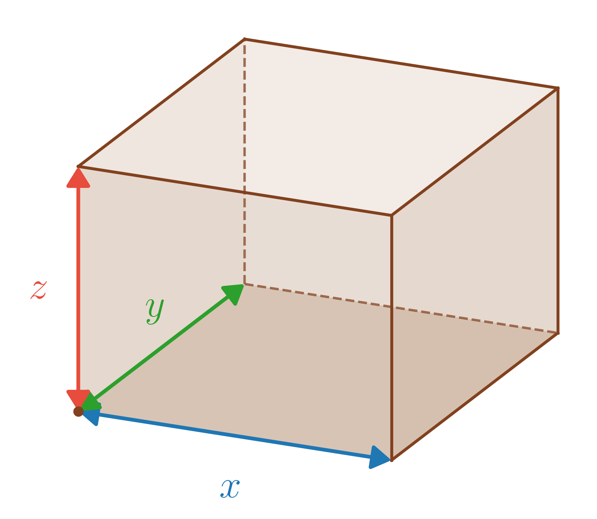
La surface des faces (sans le couvercle) est donnée par \(S = xy+2yz+2xz = xy+2\frac{V}{y}+\frac{2V}{x}\) (car \(V = xyz\) et \(x,y,z > 0\)).
On cherche donc le minimum (sous réserve d’existence) de la fonction \[\begin{array}{lllll} f & : & U=\left]0,+\infty\right[\times \left]0,+\infty\right[ & \to & \mathbb{R} \\ & & (x,y) & \mapsto & xy+2\frac{V}{y}+\frac{2V}{x} \end{array} .\]
D’abord, on montre que ce minimum existe bien.
\(f\) est majorée par \(0\) donc elle admet une borne inférieure \(m = \inf_{(x,y) \in U} f(x,y) \in \mathbb{R}^{+}.\)
De plus, il existe \(\left((x_n,y_n)\right)_{n \geq 0}\) une suite de \(U\) telle que \[f(x_n,y_n) \xrightarrow[n \to +\infty]{} m \text{ ie }x_ny_n+2\frac{V}{y_n}+\frac{2V}{x_n} \xrightarrow[n \to +\infty]{} m.\]
On a donc la suite \(\left(f(x_n,y_n)\right)_{n \geq 0}\) qui est majorée ie il existe \(M \in \mathbb{R}^{+}\) tel que \[\forall n \geq 0, x_ny_n+2\frac{V}{y_n}+\frac{2V}{x_n} \leq M.\]
On a donc \[\forall n \in \mathbb{N}, 0 \leq \frac{2V}{x_n} \leq x_ny_n+2\frac{V}{y_n}+\frac{2V}{x_n} \leq M\] puis \[\forall n \in \mathbb{N}, 0 \leq x_ny_n \leq M \Longrightarrow 0 \leq x_n \leq \frac{M}{y_n} = \frac{M}{2V}\frac{2V}{y_n} \leq \frac{M^2}{2V}\] et \(\left(x_n\right)_{n \geq 0}\) est bornée.
De la même façon, \(\left(y_n\right)_{n \geq 0}\) est bornée telle que \[\forall n \in \mathbb{N}, 0 \leq y_n \leq \frac{M^2}{2V}.\]
On en déduit que \(\left(x_n,y_n\right)\) est une suite du compact \(\left[0, \frac{M^2}{2V}\right]^2\) et il existe donc une extraction \(\varphi : \mathbb{N}\to \mathbb{N}\) et une valeur d’adhérence \(\left(\widehat{x},\widehat{y}\right)\in \mathbb{R}^2\) telles que \[\left(x_{\varphi(n)},y_{\varphi(n)}\right) \xrightarrow[n \to +\infty]{} \left(\widehat{x},\widehat{y}\right).\]
Enfin, \(\widehat{x} \neq 0\) et \(\widehat{y} \neq 0\) car sinon, par l’absurde, on aurait \[f\left(x_{\varphi(n)},y_{\varphi(n)}\right)=x_{\varphi(n)}y_{\varphi(n)}+2\frac{V}{y_{\varphi(n)}}+\frac{2V}{x_{\varphi(n)}} \xrightarrow[n \to +\infty]{} +\infty,\] ce qui contredit \(f\left(x_{\varphi(n)},y_{\varphi(n)}\right) \xrightarrow[n \to +\infty]{} m\).
On en déduit alors \[f\left(x_{\varphi(n)},y_{\varphi(n)}\right) = x_{\varphi(n)}y_{\varphi(n)}+2\frac{V}{y_{\varphi(n)}}+\frac{2V}{x_{\varphi(n)}} \xrightarrow[n \to +\infty]{} \widehat{x} \widehat{y}+2\frac{V}{\widehat{y}}+\frac{2V}{\widehat{x}}\] et \(f\left(x_{\varphi(n)},y_{\varphi(n)}\right) \xrightarrow[n \to +\infty]{} m\) donc par unicité de la limite, \(f\left(\widehat{x},\widehat{y}\right)= m\) qui est une borne atteinte donc un minimum.
Pour s’intéresser à ce minimum, montrons que \(f\) est différentiable. \(\begin{array}{l} (x,y) \in U \mapsto x (x,y) \in U \mapsto y \end{array}\) sont différentiables car linéaire donc \((x,y) \in U \mapsto xy\) aussi par produit.
\(t \in \mathbb{R}^{+\star}\mapsto \frac{1}{t}\) est différentiable car dérivable donc \((x,y) \in U \mapsto \frac{2V}{x}\) aussi par composition.
De même, \((x,y) \in U \mapsto \frac{2V}{y}\) est différentiable.
Donc \(f\) est différentiable sur \(U\) par somme.
Déterminons le point où est atteint le minimum souhaité.
On sait que \(m\) est atteint en un point critique de \(f\) car \(U\) est un ouvert. Or, \[\begin{aligned} \forall (x,y) \in \mathbb{R}^2, \frac{\partial f}{\partial x}(x,y) & = y-\frac{2V}{x^2} \\ \frac{\partial f}{\partial y}(x,y) & = x-\frac{2V}{y^2}. \end{aligned}\] Donc soit \((x,y) \in U\), \[\begin{aligned} (x,y) \text{ point critique de $f$} & \iff \left\{ \begin{array}{ll} \frac{\partial f}{\partial x}(x,y) & = 0 \\ \frac{\partial f}{\partial y}(x,y) & = 0 \end{array} \right. \\ & \iff \left\{ \begin{array}{ll} y-\frac{2V}{x^2} & = 0 \\ x-\frac{2V}{y^2} & = 0 \end{array} \right. \\ & \iff \left\{ \begin{array}{ll} y& = \tfrac{2V}{x^2} \\ x & = \tfrac{2V}{y^2} \end{array} \right. \\ & \iff \left\{ \begin{array}{ll} y& = \frac{1}{2V}y^4 \\ x & = \frac{1}{2V}x^4 \end{array} \right. \\ & \iff x=y= \sqrt[3]{2V}. \end{aligned}\]
Le seul point critique est donc \(\left(\sqrt[3]{2V},\sqrt[3]{2V}\right)\) est c’est forcément le seul point où est atteint le minimum.
Déterminons le minimum. La surface minimale recherchée est \[f(\left(\sqrt[3]{2V},\sqrt[3]{2V}\right)) = \left(2V\right)^{2/3} + \frac{2V}{\left(2V\right)^{1/3}}+\frac{2V}{\left(2V\right)^{1/3}} = 3\left(2V\right)^{2/3}.\] Elle est atteinte pour \((x,y,z) = (\sqrt[3]{2V},\sqrt[3]{2V},\frac{V}{\sqrt[3]{2V}^2}) = (\sqrt[3]{2V},\sqrt[3]{2V},\frac{\sqrt[3]{2V}}{2})\)
Soient \(f : U \subset E \to F\) avec \(U\) un ouvert de \(E\).
On dit que \(f\) est de classe \(\mathscr{C}^1\) si
\(f\) est différentiable,
et \(\begin{array}{lllll} df & : & E & \to & \mathscr{L}_\mathbb{R}(E,F) \\ & & x & \mapsto & df(x) \end{array}\) est continue.
On note \(\mathscr{C}^1(U,F)\) l’ensemble des fonctions de classe \(\mathscr{C}^1\) de \(U\) dans \(F\).
\(f\) constante ou linéaire est de classe \(\mathscr{C}^1\) (car alors \(df\) est constante).
Si \(V \subset U\) est un ouvert et \(f \in \mathscr{C}^1(U,F)\) alors \(f_{\mid V} \in \mathscr{C}^1(V,F).\)
Si \(f\) est à variable réelles sur un intervalle \(I\), \[\begin{aligned} f \in \mathscr{C}^1(I,F) & \iff \left\{\begin{array}{l} \text{$f$ est différentiable} \\ \text{ et }df \text{ est continue.} \end{array}\right. \\ & \iff \left\{\begin{array}{l} \text{$f$ est dérivable} \\ \text{ et } \begin{array}{llll} & I & \to & \mathscr{L}(\mathbb{R},F) \\ & a & \mapsto & \left\{ \begin{array}{llll} & \mathbb{R} & \to & F \\ & h & \mapsto & f'(a)h \end{array} \right. \end{array} \text{ est continue.} \end{array}\right. \\ & \iff \text{$f$ est dérivable} \text{ et }f' \text{ est continue}. \end{aligned}\]
Soit \(\mathscr{B}= (e_1,\ldots,e_p)\) une base du \(\mathbb{R}\)-espace vectoriel \(E\), \[\begin{array}{lllll} f & : & U \subset E & \to & F \\ & & x=x_1e_1+\ldots+x_pe_p & \mapsto & f(x)=f(x_1e_1+\ldots+x_pe_p) \end{array} ,\] avec \(U\) un ouvert de \(E\).
Alors, \[f \in \mathscr{C}^1(U,F) \iff \forall 1 \leq j \leq p, \frac{\partial f}{\partial x_j} \text{ existe en tout point de $U$ et $\frac{\partial f}{\partial x_j} \in \mathscr{C}(U,F)$.}\]
\((\Longrightarrow).\) Si \(f \in \mathscr{C}^1\), \(f\) est différentiable donc a fortiori, pour \(1 \leq j \leq p\), \(\frac{\partial f}{\partial x_j}\) existe sur \(U\) (par le corollaire [cor:diff_derive_partielle]).
De plus, pour tout \(x,a \in U\), \[\left\|\frac{\partial f}{\partial x_j}(a)-\frac{\partial f}{\partial x_j}(x)\right\| = \left\|df(a)(e_j)-df(x)(e_j)\right\| \leq \left|\!\left|\!\left|df(a)-df(x)\right|\!\right|\!\right|\left\|e_j\right\|\] et \(\left|\!\left|\!\left|df(a)-df(x)\right|\!\right|\!\right| \xrightarrow[x \to a]{} 0\) car \(df\) est continue.
Donc \(\frac{\partial f}{\partial x_j}\) est continue en tout point \(a\) de \(U\).
\((\Longleftarrow).\)
On commence par montrer que \(f\) est différentiable sur \(U\) en utilisant la proposition [prop:equiv_diff_derivee_partielle].
On considère la norme \(\left\|\cdot\right\|_{\infty,\mathscr{B}}\) telle que pour \(x = \sum_{j=1}^p x_j e_j \in E\), \(\left\|x\right\|_{\infty,\mathscr{B}} = \max_{1 \leq j \leq p} \left|x_j\right|\) (peu importe la norme considérée en dimension finie).
Soit \(a \in U\), comme \(U\) est un ouvert de \(E\), il existe \(r > 0\) tel que \(B(a,r) \subset U\).
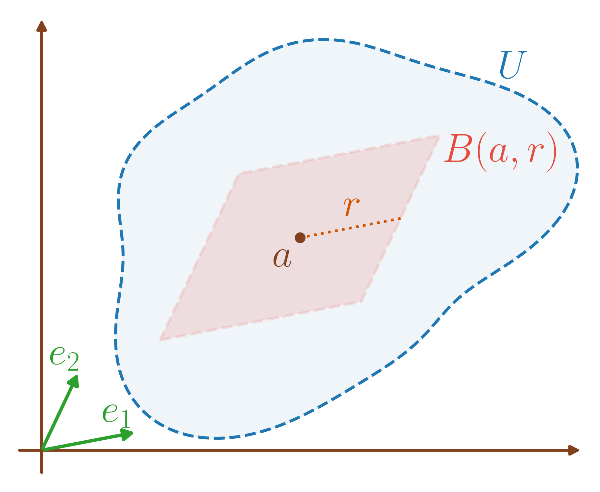
Alors, pour \(h = h_1e_1+\ldots+h_p e_p \in E\) tel que \(a+h \in B(a,r)\), on va montrer que \[f(a+h) -f(a) - \sum_{j=1}^p h_j\frac{\partial f}{\partial x_j}(a) = \underset{h\to 0}{o}(h)\]
L’idée et de se ramener à des taux d’accroissement sur la base \(\mathscr{B}\) en écrivant \[\begin{aligned} f(a+h)-f(a) = &f(a+h_1e_1+\ldots+h_p e_p) -f(a) \\ = & f(a+h_1e_1+\ldots+h_p e_p) -f(a+h_1e_1+\ldots+h_{p-1} e_{p-1}) \\ & + f(a+h_1e_1+\ldots+h_{p-1} e_{p-1})-f(a) \\ = & f(a+h_1e_1+\ldots+h_p e_p) -f(a+h_1e_1+\ldots+h_{p-1} e_{p-1}) \\ & + f(a+h_1e_1+\ldots+h_{p-1} e_{p-1})-f(a+h_1e_1+\ldots+h_{p-2} e_{p-2}) \\ & + f(a+h_1e_1+\ldots+h_{p-2} e_{p-2})-f(a) \\ = & f(a+h_1e_1+\ldots+h_p e_p) -f(a+h_1e_1+\ldots+h_{p-1} e_{p-1}) \\ & + f(a+h_1e_1+\ldots+h_{p-1} e_{p-1})-f(a+h_1e_1+\ldots+h_{p-2} e_{p-2}) \\ & + f(a+h_1e_1+\ldots+h_{p-2} e_{p-2})-f(a) \\ & + \vdots \\ & + f(a+h_1e_1+h_2e_2) - f(a+h_1e_1) \\ & + f(a+h_1e_1) - f(a). \\ & = \sum_{j=1}^{p} \left(f(a+h_1e_1+\ldots+h_j e_j)-f(a+h_1e_1+\ldots+h_{j-1} e_{j-1})\right) \\ & \text{ avec }h_0e_0 = 0. \end{aligned}\]
On veut donc montrer \[\begin{aligned} & f(a+h) -f(a) - \sum_{j=1}^p h_j\frac{\partial f}{\partial x_j}(a) \\ & = \sum_{j=1}^p\underbrace{\left( f(a+h_1e_1+\ldots+h_j e_j)-f(a+h_1e_1+\ldots+h_{j-1} e_{j-1}) - h_j\frac{\partial f}{\partial x_j}(a)\right)}_{\psi_j(h)} \\ & = \underset{h\to 0}{o}(h) \end{aligned}\] et pour cela, il suffit de montrer \(\psi_j(h) = \underset{h\to 0}{o}(h)\) pour tout \(1 \leq j \leq p.\)
Or, pour \(1 \leq j \leq p,\) \(\begin{array}{lllll} \varphi_j & : & \left]-r,r\right[ & \to & F \\ & & t & \mapsto & f(a+h_1e_1+\ldots+h_{j-1}e_{j-1}+t e_j) \end{array}\) est dérivable avec pour \(t \in \left]-r,r\right[\),
\[\varphi_j'(t) = \frac{\partial f}{\partial x_j}(a+h_1e_1+\ldots+h_{j-1}e_{j-1}+t e_j).\]
On est ramené à un fonction à variable réelle et on sait en particulier que \[\begin{aligned} \varphi_j(h_j)-\varphi_j(0) & = \int_0^{h_j} \varphi_j'(t)dt \\ & = \int_0^{h_j} \frac{\partial f}{\partial x_j}(a+h_1e_1+\ldots+h_{j-1}e_{j-1}+t e_j)dt. \end{aligned}\] On a donc \[\begin{aligned} \psi_j(h) & = f(a+h_1e_1+\ldots+h_j e_j)-f(a+h_1e_1+\ldots+h_{j-1} e_{j-1}) - h_j\frac{\partial f}{\partial x_j}(a) \\ & = \varphi_j(h_j)-\varphi_j(0) - h_j\frac{\partial f}{\partial x_j}(a) \\ & = \int_0^{h_j} \frac{\partial f}{\partial x_j}(a+h_1e_1+\ldots+h_{j-1}e_{j-1}+t e_j)dt- h_j\frac{\partial f}{\partial x_j}(a) \\ & = \int_0^{h_j} \left(\frac{\partial f}{\partial x_j}(a+h_1e_1+\ldots+h_{j-1}e_{j-1}+t e_j)-\frac{\partial f}{\partial x_j}(a)\right)dt \end{aligned}\]
Or, \(\frac{\partial f}{\partial x_j}\) est continue en \(a\) donc soit \(\varepsilon > 0\), il existe \(\eta_j > 0\) tel que \[\left\|x-a\right\|_{\infty,\mathscr{B}} \leq \eta_j \Longrightarrow \left\|\frac{\partial f}{\partial x_j}(a) - \frac{\partial f}{\partial x_j}(x)\right\| \leq \varepsilon.\]
Donc pour \(h\) tel que \(\left\|h\right\|_{\infty,\mathscr{B}} \leq \eta_j\) et \(t \in \left[0,h_j\right]\) \[\begin{aligned} \left\|a+h_1e_1+\ldots+h_{j-1}e_{j-1}+t e_j-a\right\|_{\infty,\mathscr{B}} & = \left\|h_1e_1+\ldots+h_{j-1}e_{j-1}+t e_j\right\|_{\infty,\mathscr{B}} \\ & \leq \max\left(\max_{1 \leq i \leq j-1}\left|h_i\right|,\left|t\right|\right) \\ & \leq \max\left(\max_{1 \leq i \leq j-1}\left|h_i\right|,\left|h_j\right|\right) \\ & \leq \max_{1 \leq i \leq j-1}\left|h_j\right| \\ & \leq \left\|h\right\|_{\infty,\mathscr{B}} \\ & \leq \eta_j \end{aligned}\] et donc \[\begin{aligned} & \left\|\int_0^{h_j} \left(\frac{\partial f}{\partial x_j}(a+h_1e_1+\ldots+h_{j-1}e_{j-1}+t e_j)-\frac{\partial f}{\partial x_j}(a)\right)dt\right\| \\ \leq & \int_0^{\left|h_j\right|}\left\|\frac{\partial f}{\partial x_j}(a+h_1e_1+\ldots+h_{j-1}e_{j-1}+t e_j)-\frac{\partial f}{\partial x_j}(a)\right\|dt \\ \leq & \left|h_j\right| \varepsilon. \\ \leq & \left\|h\right\|_{\infty,\mathscr{B}}\varepsilon. \end{aligned}\]
et on a bien \(\psi_j(h) = \underset{h\to 0}{o}(h)\) donc \[f(a+h) -f(a) - \sum_{j=1}^p h_j\frac{\partial f}{\partial x_j}(a) = \underset{h\to 0}{o}(h)\] et \(f\) différentiable en \(a\) avec pour tout \(h \in E\), \[df(a) = \sum_{j=1}^p h_j\frac{\partial f}{\partial x_j}(a).\]
Il reste à montrer que \(f\) est de classe \(\mathscr{C}^1\).
Or, pour \(a,x \in U\) et \(h \in E\), \[\begin{aligned} \left\|df(a)(h)-df(x)(h)\right\| & = \left\|\sum_{j=1}^p h_j\frac{\partial f}{\partial x_j}(a)-\sum_{j=1}^p h_j\frac{\partial f}{\partial x_j}(x)\right\| \\ & \leq \sum_{j=1}^p \left\|\frac{\partial f}{\partial x_j}(a)-\frac{\partial f}{\partial x_j}(x)\right\|\left\|h_j\right\| \\ & \leq \left\|h\right\|_{\infty,\mathscr{B}}\sum_{j=1}^p \left\|\frac{\partial f}{\partial x_j}(a)-\frac{\partial f}{\partial x_j}(x)\right\| \end{aligned}\]
Donc \[\left|\!\left|\!\left|df(a)-df(x)\right|\!\right|\!\right| \leq \sum_{j=1}^p \left\|\frac{\partial f}{\partial x_j}(a)-\frac{\partial f}{\partial x_j}(x)\right\|.\]
Or par continuité des dérivées partielles, pour tout \(1 \leq j \leq p\), \(\left\|\frac{\partial f}{\partial x_j}(a)-\frac{\partial f}{\partial x_j}(x)\right\| \xrightarrow[x \to a]{} 0\) donc \[\left|\!\left|\!\left|df(a)-df(x)\right|\!\right|\!\right| \xrightarrow[x \to a]{} 0\] et \(f\) est de classe \(\mathscr{C}^1\).
Cela ne dépend pas de la base choisie.
Ce théorème est d’une utilité pratique considérable. En effet, démontrer directement qu’une application est de classe \(\mathscr{C}^1\) à partir de la définition (existence et continuité de la différentielle \(df\)) est souvent délicat et fastidieux.
Ce résultat ramène l’étude de la régularité globale d’une fonction de plusieurs variables à celle de ses \(p\) dérivées partielles \(\frac{\partial f}{\partial x_j}\). On peut ainsi utiliser les théorèmes usuels de régularité des fonctions (opérations algébriques, composition, fonctions usuelles) pour justifier très simplement qu’une application est \(\mathscr{C}^1\) sur un ouvert \(U\).
On voit clairement avec ce théorème que si \((E,\langle \cdot, \cdot \rangle)\) est un espace euclidien et \(F = \mathbb{R}\), \[f \in \mathscr{C}^1(E,\mathbb{R}) \iff \left\{\begin{array}{l} \text{$f$ est différentiable} \\ \text{ et }x \in U \mapsto \nabla f(x) \text{ est continue.} \end{array}\right.\]
Soit \(U \subset E\) un ouvert,
\(\mathscr{C}^1(U,F) \subset \mathscr{C}(U,F).\)
\(\mathscr{C}^1(U,F)\) est un \(\mathbb{K}\)-espace vectoriel.
Soient \(f_1 : U \subset E \to F_1\), \(\ldots\), \(f_n : U \subset E \to F_n\) de classe \(\mathscr{C}^1\) et \(\Phi = F_1\times \ldots \times F_n \to G\) \(n\)-linéaire (avec \(F_1,\ldots,F_n\) et \(G\) des \(\mathbb{K}\)-espaces vectoriels de dimension finie) alors \(\Phi(f_1,\ldots,f_n)\) est de classe \(\mathscr{C}^1\).
\(\mathscr{C}^1(U,\mathbb{K})\) est une \(\mathbb{K}\)-algèbre.
Soit \(f : U \to F\) de classe \(\mathscr{C}^1\) et qui ne s’annule pas sur \(U\) alors \(\frac{1}{f} \in \mathscr{C}^1(U,F).\)
Soit \(f : U \subset E \to F\) de classe \(\mathscr{C}^1\) et \(\mathscr{B}' = (u_1,\ldots,u_n)\) une base de \(F\) telle que \(f = f_1u_1+\ldots+f_nu_n\) (avec \(f_i : U \subset E \to \mathbb{K}\) pour \(1 \leq i \leq k\)) alors \[f \in \mathscr{C}^1(U,F) \iff \forall 1 \leq i \leq n, f_i \in \mathscr{C}^1(U,\mathbb{K}).\]
Soit \(f : U \subset E \to \mathbb{R}\) et \(g : V \subset F \to G\) avec \(V \subset f(U)\), \(V\) un ouvert de \(F\) et \(G\) un \(\mathbb{K}\)-espace vectoriel de dimension finie. Alors, si \(g\) et \(f\) sont de classe \(\mathscr{C}^1\), \(g \circ f \in \mathscr{C}^1(U,G)\).
On considère une base \(\mathscr{B}= (e_1,\ldots,e_p)\) du \(\mathbb{R}\)-espace vectoriel \(E\) et les dérivées partielles relativement à cette base.
Si \(f \in \mathscr{C}^1(U,F)\) alors \(f\) est différentiable et par la proposition [prop:diff_donc_c0], \(f\) est continue.
Soient \(\lambda, \mu \in \mathbb{K}\) et \(f,g \in \mathscr{C}^1(U,F)\) alors par le théorème [thm:c1_partielles_continues], pour tout \(1 \leq j \leq p\), \(\frac{\partial f}{\partial x_j}\) et \(\frac{\partial g}{\partial x_j}\) existent sur \(U\) et sont continues.
De plus, par le corollaire [cor:premiers_prop_derivee_partielle], pour tout \(1 \leq j \leq p\), \(\frac{\partial \lambda f +\mu g}{\partial x_j}\) existe avec \[\frac{\partial \lambda f +\mu g}{\partial x_j} = \lambda \frac{\partial f}{\partial x_j}+\mu \frac{\partial g}{\partial x_j}\] et est continue comme combinaison linéaire de fonctions continues.
Donc par le théorème [thm:c1_partielles_continues], \(\lambda f +\mu g \in \mathscr{C}^1(U,F).\) Donc \(\mathscr{C}^1(U,F)\) est un sous-espace vectoriel de \(\mathscr{C}(U,F).\)
Pour tout \(1 \leq i \leq n\), \(f_i \in \mathscr{C}^1(U,F_i)\) donc par le théorème [thm:c1_partielles_continues], pour tout \(1 \leq j \leq p\), \(\frac{\partial f_i}{\partial x_j}\) existe sur \(U\) et est continue.
De plus, par le corollaire [cor:premiers_prop_derivee_partielle], pour tout \(1 \leq j \leq p\), \(\frac{\partial \Phi(f_1,\ldots,f_n)}{\partial x_j}\) existe avec \[\frac{\partial \Phi(f_1,\ldots,f_n)}{\partial x_j} = \sum_{k=1}^n \Phi(f_1(a),\ldots,\frac{\partial f_k}{\partial x_j},\ldots,f_n).\]
Or, \(\Phi\) est continue (car \(n\)-linéaire et \(F_1,\ldots,F_n\) de dimension finie) ainsi que chaque \(f_i\) (car différentiables) et chaque \(\frac{\partial f_i}{\partial x_j}\). Donc chaque \(\frac{\partial \Phi(f_1,\ldots,f_n)}{\partial x_j}\) est continue.
Donc par le théorème [thm:c1_partielles_continues], \(\Phi(f_1,\ldots,f_n) \in \mathscr{C}^1(U,G).\)
Le cas précédent appliqué à \(\begin{array}{lllll} \Phi & : & \mathbb{K}\times \mathbb{K} & \to & \mathbb{K} \\ & & (x,y) & \mapsto & xy \end{array}\) donne que \(\mathscr{C}^1(U,\mathbb{K})\) est une \(\mathbb{K}\)-algèbre.
\(f \in \mathscr{C}^1(U,F)\) donc par le théorème [thm:c1_partielles_continues], pour tout \(1 \leq j \leq p\), \(\frac{\partial f}{\partial x_j}\) existe sur \(U\) et est continue.
De plus, par le corollaire [cor:premiers_prop_derivee_partielle], pour tout \(1 \leq j \leq p\), \(\frac{\partial \frac{1}{f}}{\partial x_j}\) existe avec \[\frac{\partial \frac{1}{f}}{\partial x_j} = -\frac{1}{f^2}\frac{\partial f}{\partial x_j}\]
qui est donc continue par produit et quotient de fonctions continues (\(f\) est continue car différentiable).
Donc par le théorème [thm:c1_partielles_continues], \(\frac{1}{f} \in \mathscr{C}^1(U,F).\)
Par le corollaire [cor:premiers_prop_derivee_partielle], pour tout \(1 \leq j \leq p\), \[\frac{\partial f}{\partial x_j} \text{ existe} \iff \text{Pour tout $1 \leq i \leq n$, } \frac{\partial f_i}{\partial x_j} \text{ existe}\] avec dans ce cas, \(\frac{\partial f}{\partial x_j} = \frac{\partial f_1}{\partial x_j}u_1+\ldots+\frac{\partial f_n}{\partial x_j}u_n.\)
On a donc pour tout \(1 \leq j \leq p\), \[\frac{\partial f}{\partial x_j} \text{ existe est est continue } \iff \text{Pour tout $1 \leq i \leq n$, } \frac{\partial f_i}{\partial x_j} \text{ existe et est continue}\] et par le théorème [thm:c1_partielles_continues], \[f \in \mathscr{C}^1(U,F) \iff \forall 1 \leq i \leq n, f_i \in \mathscr{C}^1(U,\mathbb{K}).\]
\(f \in \mathscr{C}^1(U,F)\) donc par le théorème [thm:c1_partielles_continues], pour tout \(1 \leq j \leq p\), \(\frac{\partial f}{\partial x_j}\) existe sur \(U\) et est continue.
En introduisant \(\mathscr{B}' = (u_1,\ldots,u_n)\) une base de \(F\) et en notant \(\frac{\partial }{\partial y_i}\) les dérivées partielles relativement à \(\mathscr{B}'\), comme \(g \in \mathscr{C}^1(V,G)\), par le théorème [thm:c1_partielles_continues], pour tout \(1 \leq i \leq n\), \(\frac{\partial g}{\partial y_i}\) existe sur \(V\) et est continue.
De plus, \(f,g\) sont différentiables donc par la proposition [prop:derivee_partielle_dune_compo], en notant \(f_1,\ldots, f_n\) telles que \(f = f_1u_1+\ldots+f_n u_n\), pour tout \(1 \leq j \leq p\), \(\frac{\partial \left(g \circ f\right)}{\partial x_j}(a)\) existe et \[\frac{\partial \left(g \circ f\right)}{\partial x_j} = \sum_{i=1}^n \frac{\partial f_i}{\partial x_j} \times \frac{\partial g}{\partial y_i} \circ f.\] Cette fonction est continue comme somme et composition de fonctions continues (\(f\) est continue car différentiable).
Donc par le théorème [thm:c1_partielles_continues], \(g \circ f \in \mathscr{C}^1(U,G).\)
\(\det : \mathscr{M}_{n}(\mathbb{K}) \to \mathbb{K}\) est de classe \(\mathscr{C}^1\).
En effet, pour \(A \in \mathscr{M}_{n}(\mathbb{K})\), \(\det A = \sum_{\sigma \in \mathcal{S}_n}\varepsilon(\sigma) a_{\sigma(1)1}\ldots a_{\sigma(n)n}.\)
Or, pour tout \(\sigma \in \mathcal{S}_n\), pour \(1 \leq i \leq n\), \(A \mapsto a_{\sigma(i) i}\) est de classe \(\mathscr{C}^1\) car linéaire et \(A \mapsto \varepsilon(\sigma)\) aussi car constante.
Donc pour tout \(\sigma \in \mathcal{S}_n\), \(A \mapsto \varepsilon(\sigma)a_{\sigma(1)1}\ldots a_{\sigma(n)n}\) est de classe \(\mathscr{C}^1\) par produit.
On en déduit que \(\det\) est de classe \(\mathscr{C}^1\) par somme.
Soit \(f : U \subset E \to F\) de classe \(\mathscr{C}^1\) (avec \(U\) un ouvert de \(E\)).
Soit \(\varphi : [0,1] \to E\) de classe \(\mathscr{C}^1\) telle que \(\varphi(0) = a \in E\), \(\varphi(1) = b \in E\) et \(\varphi([0,1]) \subset U\).
Alors, \[f(b)-f(a) = f(\varphi(1))-f(\varphi(0)) = \int_0^1\left(f \circ \varphi\right)'(t)dt = \int_0^1 df(\varphi(t))(\varphi'(t))dt.\]
Par le corollaire [cor:compo_derivable_diff], \(f \circ \varphi\) est dérivable de dérivée \(df(\varphi)\circ \varphi'\).
De plus, comme \(f\) et \(\varphi\) sont de classe \(\mathscr{C}^1\), \(\left(f \circ \varphi\right)'\) est continue par la proposition [prop:operations_c1].
Donc, on a bien \[f(b)-f(a) = f(\varphi(1))-f(\varphi(0)) = \int_0^1\left(f \circ \varphi\right)'(t)dt = \int_0^1 df(\varphi(t))(\varphi'(t))dt\] (les intégrales ont un sens grâce à la continuité des fonctions).
Soit \(f : U \subset E \to F\) de classe \(\mathscr{C}^1\) (avec \(U\) un ouvert de \(E\)).
Soient \(a,b \in E\) tels que \(\left[a,b\right] \subset U\).
Alors, \[f(b)-f(a) = \int_0^1 df(a+t(b-a))(b-a)dt.\]
Il suffit d’appliquer la proposition [prop:vers_les_accroissements_finis_avant] à la fonction \[\begin{array}{lllll} \varphi & : & [0,1] & \to & E \\ & & t & \mapsto & (1-t)a+tb = a+t(b-a) \end{array}\] qui est \(\mathscr{C}^1\) de dérivée \(\begin{array}{lllll} \varphi' & : & [0,1] & \to & E \\ & & t & \mapsto & (b-a) \end{array} .\)
(Inégalité des accroissements finis) Soit \(f : U \subset E \to F\) de classe \(\mathscr{C}^1\) (avec \(U\) un ouvert de \(E\)).
Soient \(a,b \in E\) tels que \(\left[a,b\right] \subset U\).
Alors, \[\left\|f(b)-f(a)\right\| \leq \left\|b-a\right\|\sup_{x \in [a,b]}\left|\!\left|\!\left|df(x)\right|\!\right|\!\right|.\]
Par le corollaire [cor:vers_accroissements_finis.], \[\begin{aligned} \left\|f(b)-f(a)\right\| & = \left\|\int_0^1 df(a+t(b-a))(b-a)\right\|df\\ & \leq \int_0^1\left\|df(a+t(b-a))(b-a)\right\|df \\ & \leq \int_0^1 \left|\!\left|\!\left|df(a+t(b-a))\right|\!\right|\!\right|\left\|b-a\right\|dt \\ & \leq \int_0^1 \sup_{u \in [0,1]}\left|\!\left|\!\left|df(a+u(b-a))\right|\!\right|\!\right|\left\|b-a\right\|dt \\ & \leq \int_0^1 \sup_{x \in [a,b]}\left|\!\left|\!\left|df(x)\right|\!\right|\!\right|\left\|b-a\right\|dt \text{ car $\left\{a+u(b-a)/u \in [0,1]\right\} = [a,b]$,} \\ & = \sup_{x \in [a,b]}\left|\!\left|\!\left|df(x)\right|\!\right|\!\right|\left\|b-a\right\|. \end{aligned}\]
Précisons que \(\sup_{x \in [a,b]}\left|\!\left|\!\left|df(x)\right|\!\right|\!\right| <+\infty\) car \([a,b]\) est compact et \(df\) est continue (car \(f\) de classe \(\mathscr{C}^1\)).
On suppose que \((E,\langle \cdot, \cdot \rangle)\) est un espace euclidien. Soit \(f : U \subset E \to \mathbb{R}\) de classe \(\mathscr{C}^1\) (avec \(U\) un ouvert de \(E\)) alors soient \(a,b \in U\) tels que \([a,b] \subset U\), \[\left\|f(b)-f(a)\right\| \leq \left\|b-a\right\|\sup_{x \in [a,b]}\left\|\nabla f(x)\right\|.\]
Il suffit de montrer que pour \(x \in E\), \(\left|\!\left|\!\left|df(x)\right|\!\right|\!\right| = \left\|\nabla f(x)\right\|\) et d’appliquer l’inégalité des accroissements finis.
Or, pour \(h \in E\), \(\left\|df(x)(h)\right\| = \left\|\langle \nabla f(x),h \rangle\right\| \leq \left\|\nabla f(x)\right\|\left\|h\right\|\) par Cauchy-Schwarz donc \(\left|\!\left|\!\left|df(x)\right|\!\right|\!\right| \leq \left\|\nabla f(x)\right\|\).
D’autre part, \(df(\nabla f(x)) = \left\|\nabla f(x)\right\|^2 = \left\|\nabla f(x)\right\| \left\|\nabla f(x)\right\|\) donc \(\left|\!\left|\!\left|df(x)\right|\!\right|\!\right| \geq \left\|\nabla f(x)\right\|\).
On a donc bien \(\left|\!\left|\!\left|df(x)\right|\!\right|\!\right| = \left\|\nabla f(x)\right\|\) puis par l’inégalité des accroissement finis, \[\left\|f(b)-f(a)\right\| \leq \left\|b-a\right\|\sup_{x \in [a,b]}\left|\!\left|\!\left|df(x)\right|\!\right|\!\right|=\left\|b-a\right\|\sup_{x \in [a,b]}\left\|\nabla f(x)\right\|.\]
Soit \(f : U \subset E \to F\) de classe \(\mathscr{C}^1\) avec \(U\) un ouvert convexe de \(E\).
Alors, \[f \text{ constante } \iff df = 0.\]
\((\Longrightarrow).\) Ce cas est connu (voir la proposition [prop:diff_constante_lin]).
\((\Longleftarrow)\). Soient \(a,b \in U\) alors \([a,b]\subset U\) car \(U\) est convexe.
donc, par l’inégalité des accroissements finis, \[\left\|f(b)-f(a)\right\| \leq \underbrace{\sup_{x \in [a,b]}\left|\!\left|\!\left|df(x)\right|\!\right|\!\right|}_{=0}\left\|b-a\right\| = 0\] donc \(f(b)=f(a).\)
Soit \(f : U \subset E \to F\) de classe \(\mathscr{C}^1\) avec \(U\) un ouvert de \(E\).
Alors, soit \(A\) un convexe compact tel que \(A \subset U\), \(f\) est \(k\)-lipschitzienne sur \(A\) avec \(k = \sup_{x \in A}\left|\!\left|\!\left|df(x)\right|\!\right|\!\right|.\)
Soient \(a,b \in A\), \([a,b]\subset A \subset U\) donc par l’inégalité des accroissements finis, \[\left\|f(b)-f(a)\right\| \leq \sup_{x \in [a,b]}\left|\!\left|\!\left|df(x)\right|\!\right|\!\right|\left\|b-a\right\| \leq \sup_{x \in A}\left|\!\left|\!\left|df(x)\right|\!\right|\!\right|\left\|b-a\right\|.\]
De plus, \(k = \sup_{x \in A}\left|\!\left|\!\left|df(x)\right|\!\right|\!\right| < +\infty\) car \(A\) est compacte et \(df\) est continue.
En particulier, toute fonction de classe \(\mathscr{C}^1\) est lipschitzienne sur toute boule fermée incluse dans \(U\).
Soit \(f : U \subset E \to F\) de classe \(\mathscr{C}^1\) avec \(U\) un ouvert de \(E\).
Alors, soit \(A\) un compact tel que \(A \subset U\), montrer que \(f\) est lipschitzienne sur \(A\).
L’idée est de raisonner par l’absurde. Comme \(A\) n’est pas forcément convexe, le segment reliant deux points de \(A\) peut sortir de \(A\). En revanche, deux points de \(A\) devenant infiniment proches finissent par entrer dans une même boule ouverte convexe incluse dans \(U\), sur laquelle l’inégalité des accroissements finis s’applique.
Supposons par l’absurde que \(f\) ne soit pas lipschitzienne sur \(A\). Pour tout entier \(n \in \mathbb{N}^*\), il existe alors deux points \(x_n, y_n \in A\) tels que \[\left\|f(x_n) - f(y_n)\right\| > n \left\|x_n - y_n\right\|,\] ce qui impose en particulier \(x_n \neq y_n\).
Extraction d’une sous-suite convergente. La suite \((x_n, y_n)_{n \ge 1}\) est à valeurs dans \(A \times A\), qui est compact comme produit de deux compacts. On peut donc en extraire une sous-suite \((x_{\varphi(n)}, y_{\varphi(n)})_{n \ge 1}\) qui converge vers un couple \((a, b) \in A \times A\), c’est-à-dire que \(x_{\varphi(n)} \to a\) et \(y_{\varphi(n)} \to b\).
Égalité des deux limites. L’application \(f\) est continue sur le compact \(A\), donc elle y est bornée par une constante \(C \ge 0\). Pour tout \(n \ge 1\), on en déduit l’encadrement \[\left\|x_{\varphi(n)} - y_{\varphi(n)}\right\| < \frac{1}{\varphi(n)} \left\|f(x_{\varphi(n)}) - f(y_{\varphi(n)})\right\| \le \frac{2C}{\varphi(n)}.\] En passant à la limite lorsque \(n \to +\infty\), comme \(\varphi(n) \to +\infty\), il vient \(\left\|a - b\right\| \le 0\), d’où \(a = b\).
Contradiction locale autour de \(a\). Puisque \(a \in A \subset U\) et que \(U\) est ouvert, il existe \(r > 0\) tel que la boule ouverte \(B(a, r)\) soit incluse dans \(U\). De plus, \(f\) étant de classe \(\mathcal{C}^1\) sur \(U\), l’application \(x \mapsto \left|\!\left|\!\left|df(x)\right|\!\right|\!\right|\) est continue en \(a\). En appliquant la définition de la continuité avec \(\varepsilon = 1\), il existe \(\delta \in ]0, r]\) tel que, pour tout \(z \in B(a, \delta)\), on ait \(\left|\!\left|\!\left|df(z)\right|\!\right|\!\right| \le \left|\!\left|\!\left|df(a)\right|\!\right|\!\right| + 1 =: M\).
Comme \(x_{\varphi(n)} \to a\) et \(y_{\varphi(n)} \to a\), il existe un rang \(N \in \mathbb{N}^*\) à partir duquel \(x_{\varphi(n)}\) et \(y_{\varphi(n)}\) appartiennent tous deux à \(B(a, \delta)\). La boule \(B(a, \delta)\) étant convexe et incluse dans \(U\), l’inégalité des accroissements finis sur le segment \([x_{\varphi(n)}, y_{\varphi(n)}]\) donne, pour tout \(n \ge N\), \[\left\|f(x_{\varphi(n)}) - f(y_{\varphi(n)})\right\| \le M \left\|x_{\varphi(n)} - y_{\varphi(n)}\right\|.\] Ceci contredit l’inégalité \(\left\|f(x_{\varphi(n)}) - f(y_{\varphi(n)})\right\| > \varphi(n) \left\|x_{\varphi(n)} - y_{\varphi(n)}\right\|\) dès que \(\varphi(n) \ge M\) (puisque \(x_{\varphi(n)} \neq y_{\varphi(n)}\)). Ainsi, \(f\) est lipschitzienne sur \(A\).
Soient \(\mathscr{B}= (e_1,\ldots,e_p)\) une base du \(\mathbb{R}\)-espace vectoriel \(E\) et \[\begin{array}{lllll} f & : & U \subset E & \to & F \\ & & x=x_1e_1+\ldots+x_pe_p & \mapsto & f(x)=f(x_1e_1+\ldots+x_pe_p) \end{array} .\] avec \(U\) un ouvert de \(E\). On suppose que pour \(1 \leq j \leq p\), \(\frac{\partial f}{\partial x_j}\) est définie sur \(U\). Ce sont alors des fonctions de \(U\) dans \(F\) (comme \(f\)).
On définit les dérivées partielles d’ordre \(2\) de \(f\) relativement à \(\mathscr{B}\) comme les dérivées partielles des fonctions \(\frac{\partial f}{\partial x_j}\) pour \(1 \leq j \leq p\).
Pour \(1 \leq i,j \leq p\), \(\frac{\partial }{\partial x_i}\left(\frac{\partial f}{\partial x_j}\right)\) est noté \(\frac{\partial ^2f}{\partial x_i \partial x_j}\) ou \(\frac{\partial^{2} f}{\partial x_i^{2}}\) si \(i=j\).
Il en existe \(p^2\) qui sont \(\left\{\begin{array}{l} \frac{\partial^{2} f}{\partial x_1^{2}},\frac{\partial ^2f}{\partial x_ 1\partial x_2},\ldots,\frac{\partial ^2f}{\partial x_1 \partial x_p} \\ \quad \\ \frac{\partial ^2f}{\partial x_2 \partial x_1},\frac{\partial^{2} f}{\partial x_2^{2}},\ldots,\frac{\partial ^2f}{\partial x_2 \partial x_p} \\ \cdots \\ \frac{\partial ^2f}{\partial x_p \partial x_1},\frac{\partial ^2f}{\partial x_p \partial x_2},\ldots,\frac{\partial^{2} f}{\partial x_p^{2}} \end{array}\right.\).
Les fonctions \(\frac{\partial ^2f}{\partial x_i \partial x_j}\) sont à valeur de \(U\) dans \(F\) (comme \(f\) !).
En pratique, on dérive \(x_j \mapsto f(x_1e_1+\ldots+x_je_j+\ldots+x_pe_p)\), pour en déduire \(x \mapsto \frac{\partial f}{\partial x_j}(x_1e_1+\ldots+x_pe_p)\) puis on dérive \(x_i \mapsto \frac{\partial f}{\partial x_j}(x_1e_1+\ldots+x_ie_i+\ldots+x_pe_p)\) pour en déduire \(x \mapsto \frac{\partial }{\partial x_i}\left(\frac{\partial f}{\partial x_j}\right)(x_1e_1+\ldots+x_pe_p)\).
Pour \(f,g\) deux fonctions et \(\lambda, \mu \in \mathbb{K}\), \(\frac{\partial ^2(\lambda f+\mu g)}{\partial x_i \partial x_j} = \lambda \frac{\partial ^2f}{\partial x_i \partial x_j}+ \mu \frac{\partial ^2g}{\partial x_i \partial x_j}\)
Pour \(\begin{array}{lllll} f & : & \mathbb{R}^3 & \to & \mathbb{R}^2 \\ & & (x_1,x_2,x_3) & \mapsto & x_1^3\sin(x_2x_3),x_1+x_3^2 \end{array}\), on a pour \((x_1,x_2,x_3) \in \mathbb{R}^3\), \[\begin{aligned} \frac{\partial f}{\partial x_1}(x) & = (2x_1\sin(x_2x_3),1) \\ \text{ et }\frac{\partial ^2f}{\partial x_3 \partial x_1} & = (2x_1x_2\cos(x_2x_3),0). \end{aligned}\]
Soit \(k \in \mathbb{N}^{\star}\). Soient \(\mathscr{B}= (e_1,\ldots,e_p)\) une base du \(\mathbb{R}\)-espace vectoriel \(E\) et \[\begin{array}{lllll} f & : & U \subset E & \to & F \\ & & x=x_1e_1+\ldots+x_pe_p & \mapsto & f(x)=f(x_1e_1+\ldots+x_pe_p) \end{array} .\] avec \(U\) un ouvert de \(E\).
On définit, sous réserve d’existence, récursivement les dérivées partielles d’ordre \(k\) de \(f\) relativement à \(\mathscr{B}\) comme les dérivées partielles des ses dérivées partielles d’ordre \(k-1\).
Pour \(1 \leq i_1,\ldots,i_k \leq p\), on les note \(\frac{\partial ^kf}{\partial x_{i_1} \partial x_{i_2}\ldots \partial x_{i_k} }\) ou \(\frac{\partial^{k} f}{\partial x_i^{k}}\) si \(i=i_1=\ldots=i_k\).
Il y en a \(p^k\).
Ce sont encore des fonctions de \(U\) dans \(F\) (comme \(f\) !).
Les \(p^k\) dérivées partielles d’ordre \(k\) de \(f\) sont aussi les \(p^{k-1}\) dérivées partielles d’ordre \(k-1\) des \(p\) fonctions \(\frac{\partial f}{\partial x_j}\).
Soit \(k \in \mathbb{N}^{\star}\). Soient \(\mathscr{B}= (e_1,\ldots,e_p)\) une base du \(\mathbb{R}\)-espace vectoriel \(E\) et \[\begin{array}{lllll} f & : & U \subset E & \to & F \\ & & x=x_1e_1+\ldots+x_pe_p & \mapsto & f(x)=f(x_1e_1+\ldots+x_pe_p) \end{array} .\] avec \(U\) un ouvert de \(E\).
On dit que \(f\) est de classe \(\mathscr{C}^k\) sur \(U\) si
Les \(p^k\) dérivées partielles \(\frac{\partial ^kf}{\partial x_{i_1} \partial x_{i_2}\ldots \partial x_{i_k} }\) d’ordre \(k\) de \(f\) existent
et les \(p^k\) dérivées partielles \(\frac{\partial ^kf}{\partial x_{i_1} \partial x_{i_2}\ldots \partial x_{i_k} }\) d’ordre \(k\) de \(f\) sont continues.
On admet provisoirement que cette définition ne dépend pas de la base \(\mathscr{B}\) choisie. On note alors \(\mathscr{C}^k(U,F)\) l’ensemble des fonctions de classe \(\mathscr{C}^k\) de \(U\) dans \(F\).
Si \(f\) est de classe \(\mathscr{C}^k\) pour tout \(k\), on dit que \(f\) est de classe \(\mathscr{C}^\infty\) et on note \(\mathscr{C}^\infty(U,F)\) l’ensemble des fonctions de classe \(\mathscr{C}^\infty\) de \(U\) dans \(F\).
Si \(V \subset U\) est un ouvert et \(f \in \mathscr{C}^k(U,F)\) alors \(f_{\mid V} \in \mathscr{C}^k(V,F).\)
Dans le cas particulier où \(E = \mathbb{R}\) (c’est-à-dire lorsque \(p = 1\)), on peut choisir la base canonique \(\mathscr{B}= (1)\). Tout élément \(x \in \mathbb{R}\) s’écrit alors \(x = x_1 \cdot 1\), si bien que la variable \(x_1\) s’identifie directement à la variable réelle \(x\).
Pour un ordre \(k \in \mathbb{N}^{\star}\), il n’y a plus qu’une seule dérivée partielle d’ordre \(k\), car \(p^k = 1^k = 1\), et celle-ci coïncide avec la dérivée \(k\)-ième usuelle \(f^{(k)}\) étudiée en analyse d’une variable réelle. On retrouve ainsi exactement la notion classique de fonction de classe \(\mathscr{C}^k\) sur un intervalle ouvert \(U\) de \(\mathbb{R}\), définie par l’existence et la continuité de \(f^{(k)}\) sur \(U\).
Soient \(k \in \mathbb{N}^{\star}\) avec \(k \geq 2\), \(\mathscr{B}= (e_1,\ldots,e_p)\) une base de \(E\) et \(f : U \subset E \to F\) avec \(U\) un ouvert de \(E\). Alors, \[f \in \mathscr{C}^k(U,F) \iff \forall 1 \leq j \leq p,\ \frac{\partial f}{\partial x_j} \in \mathscr{C}^{k-1}(U,F).\]
Par définition, \(f\) est de classe \(\mathscr{C}^k\) sur \(U\) si et seulement si les \(p^k\) dérivées partielles \(\frac{\partial ^kf}{\partial x_{i_1} \partial x_{i_2} \ldots \partial x_{i_k}}\) existent et sont continues sur \(U\).
Or, pour tout \((i_1,\ldots,i_k) \in [\![racket 1,p]\!]racket^k\), on a par définition des dérivées partielles successives \[\frac{\partial ^kf}{\partial x_{i_1} \partial x_{i_2} \ldots \partial x_{i_k}} = \frac{\partial ^{k-1}}{\partial x_{i_1} \ldots \partial x_{i_{k-1}}}\left(\frac{\partial f}{\partial x_{i_k}}\right).\] Dire que ces \(p^k\) dérivées partielles existent et sont continues sur \(U\) équivaut donc à dire que, pour chaque \(i_k \in [\![racket 1,p]\!]racket\), les \(p^{k-1}\) dérivées partielles d’ordre \(k-1\) de \(\frac{\partial f}{\partial x_{i_k}}\) existent et sont continues sur \(U\), ce qui correspond exactement à \(\frac{\partial f}{\partial x_{i_k}} \in \mathscr{C}^{k-1}(U,F)\).
Soient \(k \in \mathbb{N}^{\star}\) et \(U \subset E\) un ouvert.
\(\mathscr{C}^k(U,F) \subset \mathscr{C}^{k-1}(U,F) \subset \ldots \subset \mathscr{C}(U,F).\)
\(\mathscr{C}^k(U,F)\) est un \(\mathbb{K}\)-espace vectoriel.
Soient \(f_1 : U \subset E \to F_1\), \(\ldots\), \(f_n : U \subset E \to F_n\) de classe \(\mathscr{C}^k\) et \(\Phi = F_1\times \ldots \times F_n \to G\) \(n\)-linéaire (avec \(F_1,\ldots,F_n\) et \(G\) des \(\mathbb{K}\)-espaces vectoriels de dimension finie) alors \(\Phi(f_1,\ldots,f_n)\) est de classe \(\mathscr{C}^k\).
\(\mathscr{C}^k(U,\mathbb{K})\) est une \(\mathbb{K}\)-algèbre.
Soit \(f : U \to F\) de classe \(\mathscr{C}^k\) et qui ne s’annule pas sur \(U\) alors \(\frac{1}{f} \in \mathscr{C}^k(U,F).\)
Soit \(f : U \subset E \to F\) de classe \(\mathscr{C}^k\) et \(\mathscr{B}' = (u_1,\ldots,u_n)\) une base de \(F\) telle que \(f = f_1u_1+\ldots+f_nu_n\) (avec \(f_i : U \subset E \to \mathbb{K}\) pour \(1 \leq i \leq k\)) alors \[f \in \mathscr{C}^k(U,F) \iff \forall 1 \leq i \leq n, f_i \in \mathscr{C}^k(U,\mathbb{K}).\]
Soit \(f : U \subset E \to \mathbb{R}\) et \(g : V \subset F \to G\) avec \(V \subset f(U)\), \(V\) un ouvert de \(F\) et \(G\) un \(\mathbb{K}\)-espace vectoriel de dimension finie. Alors, si \(g\) et \(f\) sont de classe \(\mathscr{C}^k\), \(g \circ f \in \mathscr{C}^k(U,G)\).
On démontre ces résultat par récurrence sur \(k\).
Initialisation. Le cas \(k=1\) est connu avec la proposition [prop:operations_c1].
Hérédité. Supposons ces résultats vrais au rang \(k-1\) avec \(k \in \mathbb{N}^{\star}, \geq 2\). Alors,
Soit \(f \in \mathscr{C}^k(U,F)\). Comme les \(p^k\) dérivées partielles d’ordre \(k\) de \(f\) existent sur \(U\), toutes ses dérivées partielles d’ordre \(k-1\) sont dérivables par rapport à chaque variable sur \(U\), donc continues sur \(U\). Ainsi \(f \in \mathscr{C}^{k-1}(U,F)\), ce qui donne l’inclusion \(\mathscr{C}^k(U,F) \subset \mathscr{C}^{k-1}(U,F)\) et les suivantes par hypothèse de récurrence.
L’application nulle est de classe \(\mathscr{C}^k\) car toutes ses dérivées partielles d’ordre \(k\) existent et sont nulles, donc continues. Soient \(f,g \in \mathscr{C}^k(U,F)\) et \(\lambda,\mu \in \mathbb{K}\). Par linéarité de la dérivation partielle, pour tout \((i_1,\ldots,i_k) \in [\![racket 1,p]\!]racket^k\), la dérivée partielle \(\frac{\partial ^k(\lambda f + \mu g)}{\partial x_{i_1} \ldots \partial x_{i_k}}\) existe et vaut \(\lambda \frac{\partial ^kf}{\partial x_{i_1} \ldots \partial x_{i_k}} + \frac{\partial ^kg}{\partial x_{i_1} \ldots \partial x_{i_k}}\) (par le corollaire [cor:premiers_prop_derivee_partielle]), qui est continue comme combinaison linéaire de fonctions continues. D’où \(\lambda f + \mu g \in \mathscr{C}^k(U,F)\).
D’après le cas \(k=1\), par le corollaire [cor:premiers_prop_derivee_partielle], \(\Phi(f_1,\ldots,f_n)\) admet des dérivées partielles d’ordre \(1\) qui s’écrivent \[\frac{\partial \Phi(f_1,\ldots,f_n)}{\partial x_j} = \sum_{i=1}^n \Phi\left(f_1,\ldots, \frac{\partial f_i}{\partial x_j}, \ldots, f_n\right).\] Or, pour chaque \(i\), \(f_i\) est de classe \(\mathscr{C}^k\), donc \(\frac{\partial f_i}{\partial x_j}\) est de classe \(\mathscr{C}^{k-1}\), et les autres \(f_m\) sont de classe \(\mathscr{C}^k \subset \mathscr{C}^{k-1}\). Par hypothèse de récurrence appliquée à \(\Phi\), chaque terme de la somme est de classe \(\mathscr{C}^{k-1}\), donc \(\frac{\partial \Phi(f_1,\ldots,f_n)}{\partial x_j} \in \mathscr{C}^{k-1}(U,G)\) par somme. Toutes les dérivées partielles d’ordre \(1\) de \(\Phi(f_1,\ldots,f_n)\) étant de classe \(\mathscr{C}^{k-1}\), les dérivées partielles d’ordre \(k\) de \(\Phi(f_1,\ldots,f_n)\) existent et sont continues, d’où \(\Phi(f_1,\ldots,f_n) \in \mathscr{C}^k(U,G)\).
Le produit \((x,y) \mapsto xy\) étant bilinéaire en dimension finie, le point précédent assure que si \(f,g \in \mathscr{C}^k(U,\mathbb{K})\), alors \(fg \in \mathscr{C}^k(U,\mathbb{K})\).
Soit \(f \in \mathscr{C}^k(U,\mathbb{K})\) ne s’annulant pas sur \(U\). Par le cas \(k=1\), \(\frac{1}{f}\) admet des dérivées partielles d’ordre \(1\) données par \(\frac{\partial }{\partial x_j}\left(\frac{1}{f}\right) = -\frac{1}{f^2}\frac{\partial f}{\partial x_j}\) (par le corollaire [cor:premiers_prop_derivee_partielle]). Or \(f^2 \in \mathscr{C}^k(U,\mathbb{K}) \subset \mathscr{C}^{k-1}(U,\mathbb{K})\) ne s’annule pas sur \(U\), donc \(\frac{1}{f^2}\) est de classe \(\mathscr{C}^{k-1}\) par hypothèse de récurrence. Comme \(\frac{\partial f}{\partial x_j}\) est aussi de classe \(\mathscr{C}^{k-1}\), le produit montre que \(\frac{\partial }{\partial x_j}\left(\frac{1}{f}\right)\) est de classe \(\mathscr{C}^{k-1}\) pour tout \(j\), donc \(\frac{1}{f} \in \mathscr{C}^k(U,\mathbb{K})\).
Comme \(f = \sum_{n=1}^n f_m u_m\) avec \(\mathscr{B}' = (u_1,\ldots,u_n)\) une base de \(F\), les coordonnées d’une dérivée partielle de \(f\) dans \(\mathscr{B}'\) sont les dérivées partielles correspondantes des \(f_m\) (par le corollaire [cor:premiers_prop_derivee_partielle]). Ainsi, les dérivées partielles d’ordre \(k\) de \(f\) existent et sont continues sur \(U\) si et seulement si celles de chaque \(f_m\) existent et sont continues sur \(U\), ce qui équivaut à \(f_m \in \mathscr{C}^k(U,\mathbb{K})\) pour tout \(1 \leq m \leq n\).
Soit \((v_1,\ldots,v_n)\) une base de \(F\) permettant d’écrire \(f = \sum_{m=1}^n f_m v_m\), où les \(f_m\) sont de classe \(\mathscr{C}^k\) d’après le point précédent. Par le cas \(k=1\), \(g\) est différentiable donc \(g \circ f\) admet des dérivées partielles d’ordre \(1\) sur \(U\) qui valent \[\frac{\partial (g \circ f)}{\partial x_j} = \sum_{m=1}^n \frac{\partial f_m}{\partial x_j} \cdot \left(\frac{\partial g}{\partial y_m} \circ f\right)\] par la proposition [prop:derivee_partielle_dune_compo]. Pour chaque \(m\), \(\frac{\partial g}{\partial y_m}\) est de classe \(\mathscr{C}^{k-1}\) et \(f\) est de classe \(\mathscr{C}^k \subset \mathscr{C}^{k-1}\), donc \(\frac{\partial g}{\partial y_m} \circ f\) est de classe \(\mathscr{C}^{k-1}\) par hypothèse de récurrence. Comme \(\frac{\partial f_m}{\partial x_j}\) est également de classe \(\mathscr{C}^{k-1}\), chaque produit est de classe \(\mathscr{C}^{k-1}\) (via l’application bilinéaire \((\lambda, y) \mapsto \lambda y\)). Par somme, \(\frac{\partial (g \circ f)}{\partial x_j} \in \mathscr{C}^{k-1}(U,G)\) pour tout \(j\), d’où \(g \circ f \in \mathscr{C}^k(U,G)\).
La définition [def:fonction_de_classe_ck] d’une fonction de classe \(\mathscr{C}^k\) ne dépend pas de la base choisie.
Autrement dit, soient \(\mathscr{B}= (e_1,\ldots,e_p)\) et \(\mathscr{B}' = (u_1,\ldots,u_p)\) deux bases bases du \(\mathbb{R}\)-espace vectoriel \(E\) et \[\begin{array}{lllll} f & : & U \subset E & \to & F \\ & & \begin{array}{ll} x& =x_1e_1+\ldots+x_pe_p\\ & =y_1u_1+\ldots+y_pu_p \end{array} & \mapsto & \begin{array}{ll} f(x)& =f(x_1e_1+\ldots+x_pe_p)\\ & = f(y_1u_1+\ldots+y_pu_p) \end{array} \end{array}\] avec \(U\) un ouvert de \(E\). On a
\[\begin{aligned} & \forall 1 \leq i_1,\ldots,i_k \leq p, \frac{\partial ^kf}{\partial x_{i_1} \partial x_{i_2}\ldots \partial x_{i_k} } \text{ existe et est continue} \\ \iff & \\ & \forall 1 \leq j_1,\ldots,j_k \leq p, \frac{\partial ^kf}{\partial y_{j_1} \partial y_{j_2}\ldots \partial y_{j_k}} \text{ existe et est continue} \\ \end{aligned}\] (En notant \(\frac{\partial ^kf}{\partial x_{i_1} \partial x_{i_2}\ldots \partial x_{i_k}}\) les dérivées partielles d’ordre \(k\) relativement à \(\mathscr{B}\) et \(\frac{\partial ^kf}{\partial y_{j_1} \partial y_{j_2}\ldots \partial y_{j_k}}\) les dérivées partielles d’ordre \(k\) relativement à \(\mathscr{B}'\)).
Comme \(\mathscr{B}\) et \(\mathscr{B}'\) jouent un rôle symétrique, il suffit de montrer que \(\Longrightarrow.\)
En notant \(P = P_{\mathscr{B},\mathscr{B}'} = \left(p_{ij}\right)\), pour \(1 \leq j \leq p\), \(u_j = \sum_{i=1}^n p_{ij} e_i\). Or \(f\) est au moins de classe \(\mathscr{C}^1\) (car \(\mathscr{C}^1(U,F) \subset \mathscr{C}^k(U,F)\)) donc elle est différentiable et pour \(a \in U\), \[\frac{\partial f}{\partial y_j}(a) = df(a)(u_j) = df(a)\left(\sum_{i=1}^n p_{ij}\right) = \sum_{i=1}^n p_{ij}e_idf(a)(e_i) = \sum_{i=1}^n p_{ij}\frac{\partial f}{\partial x_i}(a).\]
Montrons maintenant le résultat par récurrence.
Initialisation. Le cas \(k=1\) est connu par le théorème [thm:c1_partielles_continues] qui est indifférent de la base choisie.
Hérédité. Supposons le résultat vrai au rang \(k-1\) avec \(k \in \mathbb{N}^{\star}, \geq 2\).
Alors, \[\begin{aligned} & f \text{ de classe $\mathscr{C}^k$ relativement à la base $\mathscr{B}$} \\ & \Longrightarrow \text{Pour tout $1 \leq i \leq p$, $\frac{\partial f}{\partial x_i}$ de classe $\mathscr{C}^{k-1}$ relativement à la base $\mathscr{B}$.} \\ & \Longrightarrow \text{Pour tout $1 \leq i \leq p$, $\frac{\partial f}{\partial x_i}$ de classe $\mathscr{C}^{k-1}$ relativement à la base $\mathscr{B}'$} \\ & \quad \quad \quad \quad \text{par hypothèse de récurrence.} \\ & \Longrightarrow \text{Pour tout $1 \leq j \leq p$, $\frac{\partial f}{\partial y_j} = \sum_{i=1}^n p_{ij}\frac{\partial f}{\partial x_i}$ de classe $\mathscr{C}^{k-1}$ relativement à la base $\mathscr{B}'$.} \\ & \quad \quad \quad \quad \text{par combinaison linéaire de fonctions de classe $\mathscr{C}^k$} \\ & \Longrightarrow f \text{ de classe $\mathscr{C}^k$ relativement à la base $\mathscr{B}'$.} \end{aligned}\]
\(\mathscr{L}_\mathbb{R}(E,F) \subset \mathscr{C}^\infty(E,F).\)
Soit \(f \in \mathscr{L}_\mathbb{R}(E,F)\), \(f\) est différentiable de différentielle constante \(df = f\) (par la proposition [prop:diff_constante_lin]).
On a donc relativement \(\mathscr{B}= (e_1,\ldots,e_p)\) une base de \(E\), pour tout \(1 \leq j \leq p\) et \(a \in E\), \(\frac{\partial f}{\partial x_j}(a) = df(a)(e_j) = f(e_j)\) qui est constante.
Donc pour tout \(k \in \mathbb{N}^{\star}, \geq 2\) et \(1 \leq i_1,\ldots,i_k \leq p, \frac{\partial ^kf}{\partial x_{i_1} \partial x_{i_2}\ldots \partial x_{i_k} } = 0\) qui est continue et \(f\) est de classe \(\mathscr{C}^\infty\) sur \(E\).
Avec \(\mathscr{P}(\mathbb{K}^n,\mathbb{K}) = \mathop{\mathrm{Vect}}\left( \begin{array}{llll} & \mathbb{K}^n & \to & \mathbb{K} \\ & x= (x_1,\ldots,x_n) & \mapsto & x_1^{\alpha_1}\ldots x_n^{\alpha_n} \text{ avec }\alpha_1,\ldots,\alpha_n \in \mathbb{N}. \end{array} \right)\),
l’ensemble des fonctions polynomiales de \(\mathbb{K}^n\) dans \(\mathbb{K}\), \(\mathscr{P}(\mathbb{K}^n,\mathbb{K})\subset \mathscr{C}^\infty(\mathbb{K}^n, \mathbb{K}).\)
Pour tout \(1 \leq j \leq n\), \(x= (x_1,\ldots,x_n) \mapsto x_j\) est de classe \(\mathscr{C}^\infty\) car linéaire.
Donc pour tout \(\alpha_j \in \mathbb{N}^{\star}\), \(x= (x_1,\ldots,x_n) \mapsto x_j^{\alpha_j}\) est de classe \(\mathscr{C}^\infty\) par produit.
On en déduit donc que par combinaison linéaire de fonctions de classe \(\mathscr{C}^\infty\), les fonctions polynomiales sont de classe \(\mathscr{C}^\infty\).
Montrer que ces applications sont de classe \(\mathscr{C}^\infty\)
\(\begin{array}{llll} & \mathscr{M}_{n}(\mathbb{K}) & \to & \mathbb{K} \\ & A & \mapsto & \det A \end{array}\),
\(\begin{array}{llll} & GL_n(\mathbb{K}) & \to & \mathbb{K} \\ & A & \mapsto & A^{-1} \end{array}\).
\(GL_n(\mathbb{K})\) est un ouvert donc il y a un sens à s’intéresser à la différentiabilité de la deuxième fonction.
Pour \(A \in \mathscr{M}_{n}(\mathbb{K})\), \(\det A = \sum_{\sigma \in \mathcal{S}_n}\varepsilon(\sigma) a_{\sigma(1)1}\ldots a_{\sigma(n)n}.\)
Or, pour tout \(\sigma \in \mathcal{S}_n\), pour \(1 \leq i \leq n\), \(A \mapsto a_{\sigma(i) i}\) est de classe \(\mathscr{C}^\infty\) car linéaire et \(A \mapsto \varepsilon(\sigma)\) aussi car constante.
Donc pour tout \(\sigma \in \mathcal{S}_n\), \(A \mapsto \varepsilon(\sigma)a_{\sigma(1)1}\ldots a_{\sigma(n)n}\) est de classe \(\mathscr{C}^\infty\) par produit.
On en déduit que \(\det\) est de classe \(\mathscr{C}^\infty\) par somme.
Pour rappel, pour \(A \in GL_n(\mathbb{K})\), \(A^{-1} = \frac{1}{\det A}{}^t\mathop{\mathrm{Com}}(A)\) avec \(\mathop{\mathrm{Com}}(A)\) la comatrice de \(A\) telle que \(\mathop{\mathrm{Com}}(A) = \left((-1)^{i+j}\det(A_{ij})\right)\) où \(A_{ij} \in \mathscr{M}_{n-1}(\mathbb{K})\) est la matrice \(A\) à laquelle on a retiré la \(i\)-ième ligne et la \(j\)-ième colonne.
Or, pour \(1 \leq i,j \leq n\), \(\begin{array}{llll} & \mathscr{M}_{n}(\mathbb{K}) & \to & \mathscr{M}_{n-1}(\mathbb{K}) \\ & A & \mapsto & A_{ij} \end{array}\) est de classe \(\mathscr{C}^\infty\) car linéaire.
D’où par composition de fonctions de classe \(\mathscr{C}^\infty\), pour \(1 \leq i,j \leq n\), \(\begin{array}{llll} & \mathscr{M}_{n}(\mathbb{K}) & \to & \mathbb{K} \\ & A & \mapsto & \det(A_{ij}) \end{array}\) est de classe \(\mathscr{C}^\infty\) et on a \(\begin{array}{llll} & \mathscr{M}_{n}(\mathbb{K}) & \to & \mathbb{K} \\ & A & \mapsto & (-1)^{i+j}\det(A_{ij}) \end{array}\) qui est de classe \(\mathscr{C}^\infty\) aussi.
On en déduit alors que \(\begin{array}{llll} & GL_n(\mathbb{K}) & \to & \mathscr{M}_{n}(\mathbb{K}) \\ & A & \mapsto & \left((-1)^{i+j}\det(A_{ij)}\right) = \mathop{\mathrm{Com}}(A) \end{array}\) est de classe \(\mathscr{C}^\infty\).
De plus, \(\begin{array}{llll} & \mathscr{M}_{n}(\mathbb{K}) & \to & \mathscr{M}_{n}(\mathbb{K}) \\ & B & \mapsto & {}^tB \end{array}\) est de classe \(\mathscr{C}^\infty\) car linéaire donc par composition, \(\begin{array}{llll} & GL_n(\mathbb{K}) & \to & \mathscr{M}_{n}(\mathbb{K}) \\ & A & \mapsto & {}^t\mathop{\mathrm{Com}}(A) \end{array}\) est de classe \(\mathscr{C}^\infty\).
Enfin, \(\det\) est de classe \(\mathscr{C}^\infty\) sur \(GL_n(\mathbb{K})\) et ne s’annule pas sur \(GL_n(\mathbb{K})\) donc \(\begin{array}{llll} & GL_n(\mathbb{K}) & \to & \mathbb{K} \\ & A & \mapsto & \frac{1}{\det(A)} \end{array}\) est définie et de classe \(\mathscr{C}^\infty\) donc finalement, par produit, \(\begin{array}{llll} & GL_n(\mathbb{K}) & \to & \mathscr{M}_{n}(\mathbb{K}) \\ & A & \mapsto & \frac{1}{\det A}{}^t\mathop{\mathrm{Com}}(A)=A^{-1} \end{array}\) est de classe \(\mathscr{C}^\infty\).
(Lemme de Schwarz) Soient \(\mathscr{B}= (e_1,\ldots,e_p)\) une base du \(\mathbb{R}\)-espace vectoriel \(E\) et \[\begin{array}{lllll} f & : & U \subset E & \to & F \\ & & x=x_1e_1+\ldots+x_pe_p & \mapsto & f(x)=f(x_1e_1+\ldots+x_pe_p) \end{array} .\] de classe \(\mathscr{C}^2\) avec \(U\) un ouvert de \(E\).
Alors, pour tout \(1 \leq i,j \leq p\), \[\frac{\partial ^2f}{\partial x_i \partial x_j} = \frac{\partial ^2f}{\partial x_j \partial x_i}.\]
On considère la norme \(\left\|\cdot\right\|_{\infty,\mathscr{B}}\) telle que pour \(x = \sum_{j=1}^p x_j e_j \in E\), \(\left\|x\right\|_{\infty,\mathscr{B}} = \max_{1 \leq j \leq p} \left|x_j\right|\) (peu importe la norme considérée en dimension finie).
Soit \(a \in U\), comme \(U\) est un ouvert de \(E\), il existe \(r > 0\) tel que \(B(a,r) \subset U\).
Pour \(1 \leq i \neq j \leq p\), et \(h_i \neq 0 ,h_j \neq 0\) tels que \(\left|h_i\right| < r\) et \(\left|h_j\right| < r\), on note \[\begin{aligned} \gamma(h_i,h_j) & = f(a+h_ie_i +h_j e_j)- f(a+h_ie_i)-f(a +h_j e_j)+f(a) \\ & = \left(f(a+h_ie_i +h_j e_j)- f(a+h_ie_i)\right)-\left(f(a +h_j e_j)-f(a)\right). \end{aligned}\]
On va montrer que \(\frac{1}{h_ih_j}\gamma(h_i,h_j) \underset{\substack{h_i \xrightarrow{} 0^+ \\ h_j \xrightarrow{} 0^+}}{\longrightarrow} \frac{\partial ^2f}{\partial x_i \partial x_j}(a)\) et \(\frac{1}{h_ih_j}\gamma(h_i,h_j) \underset{\substack{h_i \xrightarrow{} 0^+ \\ h_j \xrightarrow{} 0^+}}{\longrightarrow} \frac{\partial ^2f}{\partial x_j \partial x_i}(a)\) et on aura ainsi l’égalté voulue.
Remarquons d’abord que \(e_i\) et \(e_j\) jouent un rôle symétrique dans \(\gamma(h_i,h_j)\) donc il suffit de montrer \(\frac{1}{h_ih_j}\gamma(h_i,h_j) \underset{\substack{h_i \xrightarrow{} 0^+ \\ h_j \xrightarrow{} 0^+}}{\longrightarrow} \frac{\partial ^2f}{\partial x_i \partial x_j}(a)\).
En notant \(\begin{array}{lllll} \varphi & : & \left]-r,r\right[ & \to & F \\ & & t & \mapsto & f(a+h_ie_i+te_j) \end{array}\) et \(\begin{array}{lllll} \psi & : & \left]-r,r\right[ & \to & F \\ & & t & \mapsto & f(a+te_j) \end{array}\) on a donc \[\gamma(h_i,h_j) = \varphi(h_j) - \varphi(0) -(\psi(h_j)-\psi(0)).\]
Or, par composition, \(\varphi\) et \(\psi\) sont de classe \(\mathscr{C}^1\) avec pour tout \(t \in \left]-r,r\right[\), \[\begin{aligned} \varphi'(t) & = df(a+h_ie_i+te_j)(e_j) = \frac{\partial f}{\partial x_j}(a+h_ie_i+te_j) \\ \text{ et }\psi'(t) & = df(a+te_j)(e_j) = \frac{\partial f}{\partial x_j}(a+te_j) \end{aligned}\] donc \[\begin{aligned} \gamma(h_i,h_j) & = \varphi(h_j) - \varphi(0) -(\psi(h_j)-\psi(0)) \\ & = \int_0^{h_j} \varphi'(t)-\psi'(t)dt \\ & = \int_0^{h_j}\frac{\partial f}{\partial x_j}(a+h_ie_i+te_j)- \frac{\partial f}{\partial x_j}(a+te_j)dt. \end{aligned}\] Donc en notant \(\begin{array}{lllll} u_t & : & \left]-r,r\right[ & \to & F \\ & & s & \mapsto & \frac{\partial f}{\partial x_j}(a+se_i+te_j) \end{array}\) pour \(t \in \left]-r,r\right[\), \(u_t\) est de classe \(\mathscr{C}^1\) par composition avec \(\begin{array}{lllll} u'_t & : & \left]-r,r\right[ & \to & F \\ & & s & \mapsto & \frac{\partial ^2f}{\partial x_i \partial x_j}(a+se_i+te_j) \end{array}\) donc \[\begin{aligned} \gamma(h_i,h_j) & = \varphi(h_j) - \varphi(0) -(\psi(h_j)-\psi(0)) \\ & = \int_0^{h_j} \varphi'(t)-\psi'(t)dt \\ & = \int_0^{h_j}u_t(h_i)-u_t(0)dt \\ & = \int_0^{h_j}\int_0^{h_i}u'_t(s)dsdt \\ & = \int_0^{h_j}\int_0^{h_i}\frac{\partial ^2f}{\partial x_i \partial x_j}(a+se_i+te_j)dsdt. \end{aligned}\]
Montrons maintenant \[\frac{1}{h_ih_j}\gamma(h_i,h_j) = \frac{1}{h_ih_j}\int_0^{h_j}\int_0^{h_i}\frac{\partial ^2f}{\partial x_i \partial x_j}(a+se_i+te_j)dsdt \underset{\substack{h_i \xrightarrow{} 0^+ \\ h_j \xrightarrow{} 0^+}}{\longrightarrow} \frac{\partial ^2f}{\partial x_i \partial x_j}(a).\]
\[\begin{aligned} & \left\|\frac{1}{h_ih_j}\gamma(h_i,h_j) - \frac{\partial ^2f}{\partial x_i \partial x_j}(a)\right\| \\ & = \frac{1}{h_ih_j}\left\|\int_0^{h_j}\int_0^{h_i}\frac{\partial ^2f}{\partial x_i \partial x_j}(a+se_i+te_j)dsdt-h_ih_j\frac{\partial ^2f}{\partial x_i \partial x_j}(a)\right\| \\ & = \frac{1}{h_ih_j}\left\|\int_0^{h_j}\int_0^{h_i}\frac{\partial ^2f}{\partial x_i \partial x_j}(a+se_i+te_j)-\frac{\partial ^2f}{\partial x_i \partial x_j}(a) \right\|dsdt \\ & \leq \frac{1}{h_ih_j}\int_0^{h_j}\int_0^{h_i}\left\|\frac{\partial ^2f}{\partial x_i \partial x_j}(a+se_i+te_j)-\frac{\partial ^2f}{\partial x_i \partial x_j}(a) \right\|dsdt \end{aligned}\]
Or, \(f\) est de classe \(\mathscr{C}^2\) donc soit \(\varepsilon > 0\), il existe \(\eta > 0\) tel que \[\left\|x-a\right\|_{\infty,\mathscr{B}} \leq \eta \Longrightarrow \left\|\frac{\partial ^2f}{\partial x_i \partial x_j}(x)-\frac{\partial ^2f}{\partial x_i \partial x_j}(a)\right\| \leq \varepsilon.\] Donc pour \(\left|h_i\right| \leq \eta, \left|h_j\right| \leq \eta\), \[\begin{aligned} & \left\|\frac{1}{h_ih_j}\gamma(h_i,h_j) - \frac{\partial ^2f}{\partial x_i \partial x_j}(a)\right\| \\ & \leq \frac{1}{h_ih_j}\int_0^{h_j}\int_0^{h_i}\varepsilon dsdt \\ & = \varepsilon. \end{aligned}\]
On en déduit que \(\frac{1}{h_ih_j}\gamma(h_i,h_j) \underset{\substack{h_i \xrightarrow{} 0^+ \\ h_j \xrightarrow{} 0^+}}{\longrightarrow} \frac{\partial ^2f}{\partial x_i \partial x_j}(a)\) et comme discuté avant, on peut montrer \(\frac{1}{h_ih_j}\gamma(h_i,h_j) \underset{\substack{h_i \xrightarrow{} 0^+ \\ h_j \xrightarrow{} 0^+}}{\longrightarrow} \frac{\partial ^2f}{\partial x_j \partial x_i}(a)\).
Donc par unicité de la limite, \(\frac{\partial ^2f}{\partial x_i \partial x_j}(a)=\frac{\partial ^2f}{\partial x_j \partial x_i}(a)\).
L’hypothèse de régularité \(\mathscr{C}^2\) dans le lemme de Schwarz est indispensable. Si les dérivées partielles secondes croisées existent en un point sans être continues, elles peuvent être différentes.
Soit \(g\) la fonction de Peano définie sur \(\mathbb{R}^2\) à valeurs dans \(\mathbb{R}\) par \(g(0,0) = 0\) et, pour \((x,y) \neq (0,0)\), \[g(x,y) = xy \frac{x^2 - y^2}{x^2 + y^2}.\]
Calcul des dérivées premières sur les axes. Comme \(g(x,0) = 0\) pour tout \(x \in \mathbb{R}\) et \(g(0,y) = 0\) pour tout \(y \in \mathbb{R}\), les applications partielles en \((0,0)\) sont nulles, d’où \(\frac{\partial g}{\partial x}(0,0) = 0\) et \(\frac{\partial g}{\partial y}(0,0) = 0\).
De plus, par taux d’accroissement, pour tout \(y \neq 0\), \[\frac{\partial g}{\partial x}(0,y) = \lim_{h \to 0} \frac{g(h,y) - g(0,y)}{h} = \lim_{h \to 0} y \frac{h^2 - y^2}{h^2 + y^2} = -y,\] et de même, pour tout \(x \neq 0\), \[\frac{\partial g}{\partial y}(x,0) = \lim_{h \to 0} \frac{g(x,h) - g(x,0)}{h} = \lim_{h \to 0} x \frac{x^2 - h^2}{x^2 + h^2} = x.\]
Différence des dérivées secondes croisées en \((0,0)\). Les expressions précédentes montrent que \(\frac{\partial g}{\partial x}(0,y) = -y\) pour tout \(y \in \mathbb{R}\) et \(\frac{\partial g}{\partial y}(x,0) = x\) pour tout \(x \in \mathbb{R}\). En dérivant ces deux fonctions d’une variable en \(0\), il vient directement \[\begin{aligned} & \frac{\partial ^2 g}{\partial y \partial x}(0,0) = \lim_{h \to 0} \frac{\frac{\partial g}{\partial x}(0,h) - \frac{\partial g}{\partial x}(0,0)}{h} = -1 \\ \text{ et }& \frac{\partial ^2 g}{\partial x \partial y}(0,0) = \lim_{h \to 0} \frac{\frac{\partial g}{\partial y}(h,0) - \frac{\partial g}{\partial y}(0,0)}{h} = 1. \end{aligned}\]
Ainsi, \(\frac{\partial ^2 g}{\partial x \partial y}(0,0) \neq \frac{\partial ^2 g}{\partial y \partial x}(0,0)\), ce qui prouve que \(g\) n’est pas de classe \(\mathscr{C}^2\) au voisinage de \((0,0)\).
D’autre part, la réciproque du lemme de Schwarz est fausse. L’égalité des dérivées partielles secondes croisées en tout point n’implique pas que la fonction soit de classe \(\mathscr{C}^2\), ni même qu’elle soit continue.
Soit \(f\) la fonction définie sur \(\mathbb{R}^2\) à valeurs dans \(\mathbb{R}\) par \(f(0,0) = 0\) et, pour \((x,y) \neq (0,0)\), \[f(x,y) = \frac{x^2 y^2}{x^4 + y^4}.\]
Défaut de continuité. Pour tout \(x \neq 0\), on a \(f(x,x) = \frac{x^4}{2x^4} = \frac{1}{2}\), qui ne tend pas vers \(f(0,0) = 0\) lorsque \(x \to 0\). Ainsi, \(f\) n’est pas continue en \((0,0)\) et n’est donc pas de classe \(\mathscr{C}^2\).
Égalité des dérivées croisées hors de l’origine. Sur l’ouvert \(\mathbb{R}^2 \setminus \{(0,0)\}\), \(f\) est de classe \(\mathscr{C}^\infty\) comme quotient de fonctions polynomiales dont le dénominateur ne s’annule pas. Le lemme de Schwarz s’applique donc et assure que \(\frac{\partial ^2 f}{\partial x \partial y}(x,y) = \frac{\partial ^2 f}{\partial y \partial x}(x,y)\) pour tout \((x,y) \neq (0,0)\).
Égalité des dérivées croisées en \((0,0)\). Comme \(f(0,y) = 0\) pour tout \(y \in \mathbb{R}\), l’application partielle \(y \mapsto f(0,y)\) est nulle, d’où \(\frac{\partial f}{\partial y}(0,0) = 0\). Pour tout \(x \neq 0\), on a également par taux d’accroissement : \[\frac{\partial f}{\partial y}(x,0) = \lim_{k \to 0} \frac{f(x,k) - f(x,0)}{k} = \lim_{k \to 0} \frac{x^2 k}{x^4 + k^4} = 0.\] La fonction \(x \mapsto \frac{\partial f}{\partial y}(x,0)\) étant identiquement nulle sur \(\mathbb{R}\), sa dérivée en \(0\) est nulle, soit \(\frac{\partial ^2 f}{\partial x \partial y}(0,0) = 0\). Par symétrie des variables (\(f(x,y)=f(y,x)\)), on obtient également \(\frac{\partial ^2 f}{\partial y \partial x}(0,0) = 0\).
Les dérivées secondes croisées existent et coïncident donc sur tout \(\mathbb{R}^2\), bien que \(f\) ne soit pas de classe \(\mathscr{C}^2\).
(Théorème de Schwarz) Soit \(k \in \mathbb{N}^{\star}\). Soient \(\mathscr{B}= (e_1,\ldots,e_p)\) une base du \(\mathbb{R}\)-espace vectoriel \(E\) et \[\begin{array}{lllll} f & : & U \subset E & \to & F \\ & & x=x_1e_1+\ldots+x_pe_p & \mapsto & f(x)=f(x_1e_1+\ldots+x_pe_p) \end{array} .\] de classe \(\mathscr{C}^k\) avec \(U\) un ouvert de \(E\).
Alors, pour tout \(\sigma \in \mathcal{S}_k\), pour tout \(1 \leq i_1,\ldots,i_k \leq p\), \[\frac{\partial ^kf}{\partial x_{i_1} \partial x_{i_2}\ldots \partial x_{i_k} } = \frac{\partial ^kf}{\partial x_{i_{\sigma(1)}} \partial x_{i_{\sigma(1)}}\ldots \partial x_{i_{\sigma(1)}} }.\]
Procédons par récurrence sur l’entier \(k \geq 2\) (le cas \(k=1\) est trivial).
Initialisation. Pour \(k=2\), le groupe symétrique \(\mathcal{S}_2\) ne contient que l’identité et la transposition \((1\,2)\). L’égalité des dérivées partielles croisées est exactement le lemme de Schwarz, déjà établi.
Hérédité. Soit \(k \geq 3\). Supposons le résultat acquis au rang \(k-1\) et considérons une application \(f\) de classe \(\mathscr{C}^k\) sur \(U\). Fixons un \(k\)-uplet d’indices \((i_1,\ldots,i_k) \in \{1,\ldots,p\}^k\). Comme \(\mathcal{S}_k\) est engendré par les transpositions, il suffit d’établir l’invariance de la dérivée partielle sous l’action d’une transposition quelconque \(\tau = (r\;\;s)\) avec \(1 \leq r < s \leq k\).
Supposons d’abord \(r \geq 2\). Comme \(f\) est de classe \(\mathscr{C}^{k-1}\) sur \(U\), l’hypothèse de récurrence s’applique au rang \(k-1\) avec la transposition \((r-1\;\;s-1) \in \mathcal{S}_{k-1}\), d’où \[\begin{aligned} \frac{\partial ^kf}{\partial x_{i_1}\ldots \partial x_{i_r}\ldots \partial x_{i_s}\ldots \partial x_{i_k}} &= \frac{\partial }{\partial x_{i_1}}\!\left(\frac{\partial ^{k-1}f}{\partial x_{i_2}\ldots \partial x_{i_r}\ldots \partial x_{i_s}\ldots \partial x_{i_k}}\right) \\ &= \frac{\partial }{\partial x_{i_1}}\!\left(\frac{\partial ^{k-1}f}{\partial x_{i_2}\ldots \partial x_{i_s}\ldots \partial x_{i_r}\ldots \partial x_{i_k}}\right) \\ &= \frac{\partial ^kf}{\partial x_{i_1}\ldots \partial x_{i_s}\ldots \partial x_{i_r}\ldots \partial x_{i_k}}. \end{aligned}\]
Le cas \(r=1\) s’en déduit aussitôt. Comme \(k \geq 3\), le même raisonnement appliqué en isolant la dernière dérivation \(\frac{\partial f}{\partial x_{i_k}}\) (c’est-à-dire \(\frac{\partial ^kf}{\partial x_{i_1}\ldots \partial x_{i_k}} = \frac{\partial ^{k-1}}{\partial x_{i_1}\ldots \partial x_{i_{k-1}}}\!\left(\frac{\partial f}{\partial x_{i_k}}\right)\)) donne l’invariance par \((1\;\;2)\), puis l’identité \((1\;\;s) = (1\;\;2)(2\;\;s)(1\;\;2)\) permet de traiter tout \(s \geq 3\).
Toute permutation \(\sigma \in \mathcal{S}_k\) étant un produit fini de transpositions, une récurrence immédiate sur le nombre de transpositions dans la décomposition de \(\sigma\) permet de conclure au rang \(k\).
Si \(f\) est de classe \(\mathscr{C}^k\), il y a un nombre bien moindre de dérivées partielles d’ordre \(k\) à calculer pour toutes les obtenir. Ce nombre est \(\mathop{\mathrm{card}}\left\{(\alpha_1,\ldots, \alpha_p) \in \left(\mathbb{N}^{\star}\right)^p/ \alpha_1+\ldots+\alpha_p = k\right\}\) (plutôt que \(p^k\)). Par exemple pour \(p=2\),
pour \(k=2\), il y en a \(3\) plutôt que \(2^2 = 4\) (\(\frac{\partial^{2} }{\partial x_1^{2}}, \frac{\partial }{\partial x_2}{2}\) et \(\frac{\partial ^2}{\partial x_1 \partial x_2}\)),
pour \(k=3\), il y en a \(4\) plutôt que \(2^3 = 8\) (\(\frac{\partial^{3} }{\partial x_1^{3}}, \frac{\partial ^3}{\partial x_1^2 \partial x_2}, \frac{\partial ^3}{\partial x_1 \partial x_2^2}\) et \(\frac{\partial^{3} }{\partial x_2^{3}}\)),
pour \(k=4\), il y en a \(5\) plutôt que \(2^4 = 16\) (\(\frac{\partial^{4} }{\partial x_1^{4}}, \frac{\partial ^4}{\partial x_1^3 \partial x_2}, \frac{\partial ^4}{\partial x_1^2 \partial x_2^2}, \frac{\partial ^4}{\partial x_1 \partial x_2^3}\) et \(\frac{\partial^{4} }{\partial x_2^{4}}\)).
On peut montrer que \(\mathop{\mathrm{card}}\left\{(\alpha_1,\ldots, \alpha_p) \in \left(\mathbb{N}^{\star}\right)^p \mid \alpha_1+\ldots+\alpha_p = k\right\} = \binom{p+k-1}{k} = \frac{p(p+1)\ldots(p+k-1)}{k!}.\)
Soient \(\mathscr{B}\) une base de \(E\) et \(\mathscr{B}'\) une base de \(f\), on note \(J_f = \mathscr{M}_{\mathscr{B},\mathscr{B}'}(df) = \left(\frac{\partial f_i}{\partial x_j}\right)\) (avec les \(f_i\) décomposant \(f\) dans le base \(\mathscr{B}'\), voir la proposition [prop:expression_jacobienne]).
On a alors \[f \text{ est de classe $\mathscr{C}^k$} \iff J_f \text{ est de classe $\mathscr{C}^{k-1}$}\]
Une autre définition possible des fonctions de classe \(\mathscr{C}^k\) est \[f \text{ est de classe $\mathscr{C}^k$} \iff df \text{ est de classe $\mathscr{C}^{k-1}$}.\]
\[\begin{array}{lllll} \Phi & : & \mathscr{L}_\mathbb{R}(E,F) & \to & \mathscr{M}_{n,p}(\mathbb{K}) \\ & & u & \mapsto & \mathscr{M}_{\mathscr{B},\mathscr{B}'}(u) \end{array}\] est une bijection linéaire et donc \(\Phi\) et \(\Phi^{-1}\) sont de classe \(\mathscr{C}^\infty\).
De plus, \(J_f = \Phi(df)\) et \(df = \Phi^{-1}(J_f)\). On a donc \[\begin{aligned} f \text{ est de classe $\mathscr{C}^k$} & \iff J_f \text{ est de classe $\mathscr{C}^{k-1}$} \\ & \iff df \text{ est de classe $\mathscr{C}^{k-1}$}. \end{aligned}\]
Néanmoins, ces objets sont beaucoup plus difficiles à manipuler. Pour illustration, \(df\) est à valeurs de \(U\) dans \(\mathscr{L}_\mathbb{R}(E,F)\) donc sa différentielle est à valeurs de \(U\) dans \(\mathscr{L}_\mathbb{R}(E,\mathscr{L}_\mathbb{R}(E,F))\)
Soient \(X\) une partie de \(E\) et \(a \in X.\)
On appelle vecteur tangent à \(X\) en \(a\) tout vecteur \(u\) de \(E\) tel qu’il existe \(\varphi: \left]-\eta,\eta\right[ \to X\) (avec \(\eta > 0\))
tel que \(\varphi(0) = a\)
et \(\varphi\) est dérivable en \(0\) avec \(\varphi'(0) = u.\)
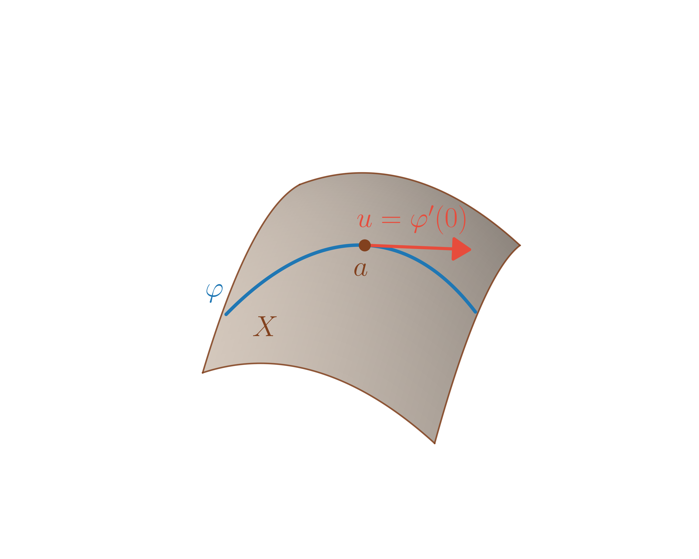
Soient \(U \subset \mathbb{R}^2\) et \(\begin{array}{lllll} f & : & U & \to & E \\ & & (u,v) & \mapsto & f(u,v) \end{array} .\)
Alors,
\(\mathcal{S}= f(U) = \left\{f(u,v) / (u,v) \in U\right\} \subset E\) est appelée une surface de \(E.\)
\(f\) est appelée un paramétrage de \(\mathcal{S}.\)
Pour \((u,v) \in U,\) le point \(m = f(u,v) \in E\) est appelé le point de paramètre \((u,v).\)
Le couple \((\mathcal{S},f)\) est appelé une surface paramétrée.
La sphère \(S(0,r)\) de centre \(0\) et de rayon \(r > 0\) de \(\mathbb{R}^3\) est une surface parametrée.
En effet, montrons \(S(0,r) = f(\mathbb{R}^2)\) avec \(\begin{array}{lllll} f & : & \mathbb{R}^2 & \to & \mathbb{R}^3 \\ & & (\theta,\varphi) & \mapsto & \begin{pmatrix} x = r\cos \varphi \cos \theta \\ y = r\cos \varphi \sin \theta \\ z = r\sin \varphi \\ \end{pmatrix} \end{array}\)
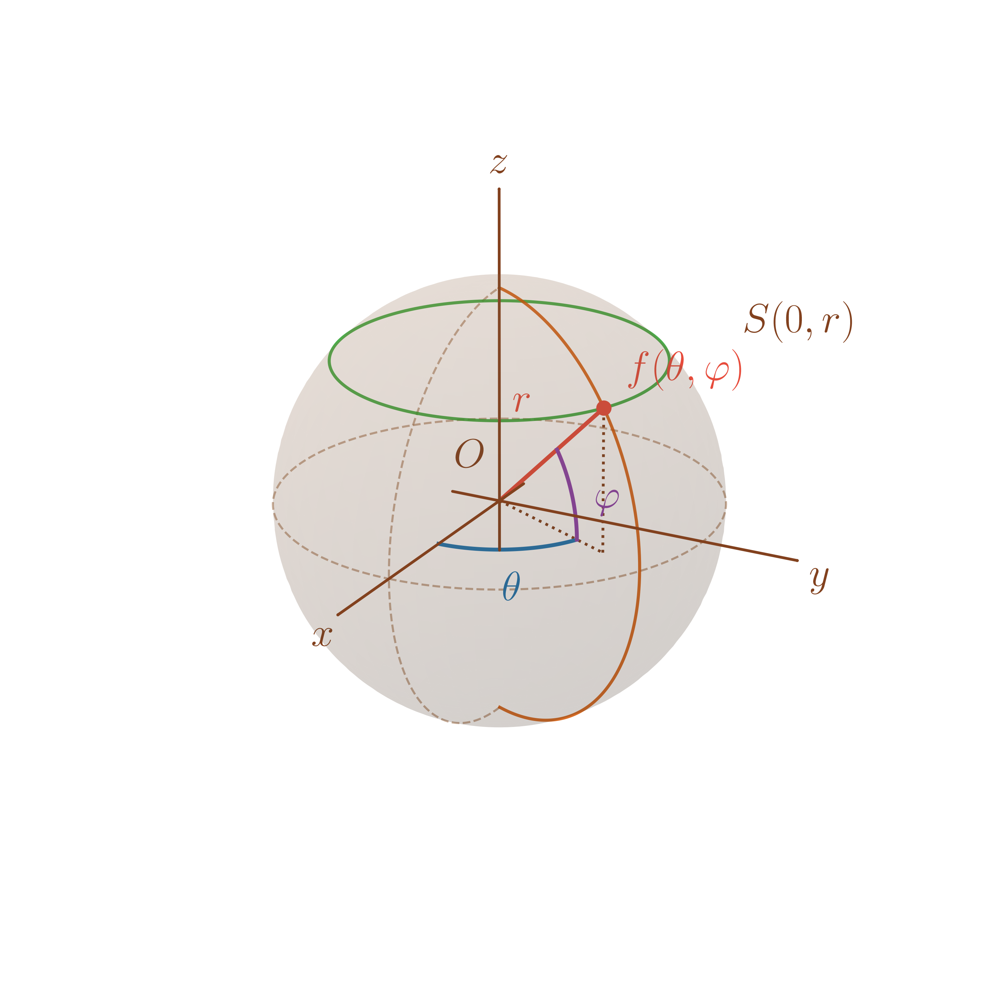
D’abord, on a clairement \(f(\mathbb{R}^2) \subset S(0,r)\) car si \((\theta, \varphi) \in \mathbb{R}^2\) alors \((x,y,z) = f(\theta,\varphi)\) vérifié \(\sqrt{x^2+y^2+z^2} = r\sqrt{\cos^2 \varphi(\cos^2 \theta + \sin^2\theta)+\sin^2 \varphi} = r\sqrt{\cos^2 \varphi+\sin^2 \varphi} = r.\)
Réciproquement, soit \((x,y,z) \in S(0,r)\), \(z \in \left[-r,r\right]\) donc il existe \(\lambda \in \left[-1,1\right]\) tel que \(z = \lambda r\) donc \(\varphi \in \mathbb{R}\) tel que \(z = r\sin \varphi\).
Alors, \(\left\|(x,y,z)\right\|^2 = r^2\) donne \(x^2+y^2 = z^2-r^2\sin^2 \varphi = r^2\cos^2 \varphi\).
Maintenant, si \(\cos \varphi = 0\), n’importe quel \(\theta\) convient car alors \(x=y=0\).
Si \(\cos \varphi \neq 0\), on a \(\left(\frac{x}{\cos \varphi}\right)^2+\left(\frac{y}{\cos \varphi}\right)^2 = 1\) donc il existe \(\theta \in \mathbb{R}\) tel que \(\left\{ \begin{array}{ll} \frac{x}{\cos \varphi} & = \cos \theta \\ \frac{y}{\cos \varphi} & = \sin \theta \end{array} \right.\) ie \(\left\{ \begin{array}{ll} x & = r\cos \varphi \cos \theta \\ y & = r\cos \varphi \sin \theta \end{array} \right..\)
Soit \(\mathcal{S}\) une surface de \(E\) paramétrée par \(\begin{array}{lllll} f & : & U \subset \mathbb{R}^2 & \to & E \\ & & (u,v) & \mapsto & f(u,v) \end{array}\).
Soit \(m_0 = f(u_0,v_0) \in \mathcal{S}\) tel que \((u_0,v_0) \in \mathring{U}\), on suppose \(f\) différentiable en \(m_0\).
Alors tout point de \(\mathop{\mathrm{Vect}}\left(\frac{\partial f}{\partial u}(u_0,v_0),\frac{\partial f}{\partial u}(u_0,v_0)\right)\) est tangent à \(\mathcal{S}\) en \(m_0\).
On considère la norme infinie sur \(\mathbb{R}^2\). \((u_0,v_0) \in \mathring{U}\) donc il existe \(\eta > 0\) tel que \(B((u_0,v_0),r) \subset U\).
Soient \(\lambda, \mu \in \mathbb{R}^{\star}\), on considère \(\begin{array}{lllll} \varphi & : & \left]-\eta, \eta\right[ & \to & \mathbb{R}^2 \\ & & t & \mapsto & f(u_0 + \lambda t,v_0 + \mu t) \end{array}\) où si \(\lambda \neq 0\), \(\eta < \frac{r}{\left|\lambda\right|}\) et si \(\mu \neq 0\), \(\eta < \frac{r}{\left|\mu\right|}\) pour que \(\varphi(\left]-\eta, \eta\right[) \subset f(U) \subset \mathcal{S}\).
On a \(\varphi(0) = f(u_0,v_0) = m_0\) et \(\varphi\) dérivable en \(0\) par composition avec par le corollaire [cor:compo_derivable_diff],
\[\varphi'(0) = df(u_0,v_0)(\lambda,\mu) = \lambda\frac{\partial f}{\partial u}(u_0,v_0)+\mu \frac{\partial f}{\partial u}(u_0,v_0).\]
Donc tout point de \(\mathop{\mathrm{Vect}}\left(\frac{\partial f}{\partial u}(u_0,v_0),\frac{\partial f}{\partial u}(u_0,v_0)\right)\) est tangent à \(\mathcal{S}\) en \(m_0\).
Soit \(\mathcal{S}\) une surface de \(E\) paramétrée par \(\begin{array}{lllll} f & : & U \subset \mathbb{R}^2 & \to & E \\ & & (u,v) & \mapsto & f(u,v) \end{array}\).
Soit \(m_0 \in \mathcal{S}\) tel que \(m_0 = f(u_0,v_0)\), on dit que \(m_0\) est un point régulier de \(\mathcal{S}\) si \(\frac{\partial f}{\partial u}(u_0,v_0),\frac{\partial f}{\partial u}(u_0,v_0)\) existent et \(\left(\frac{\partial f}{\partial u}(u_0,v_0),\frac{\partial f}{\partial u}(u_0,v_0)\right)\) est libre.
Dans ce cas, le plan affine
\(m_0 + \mathop{\mathrm{Vect}}\left(\frac{\partial f}{\partial u}(u_0,v_0),\frac{\partial f}{\partial u}(u_0,v_0)\right)\) est appelé le plan tangent à \(\mathcal{S}\) en \(m_0\) et on le note \(T_{m_0}\mathcal{S}\).
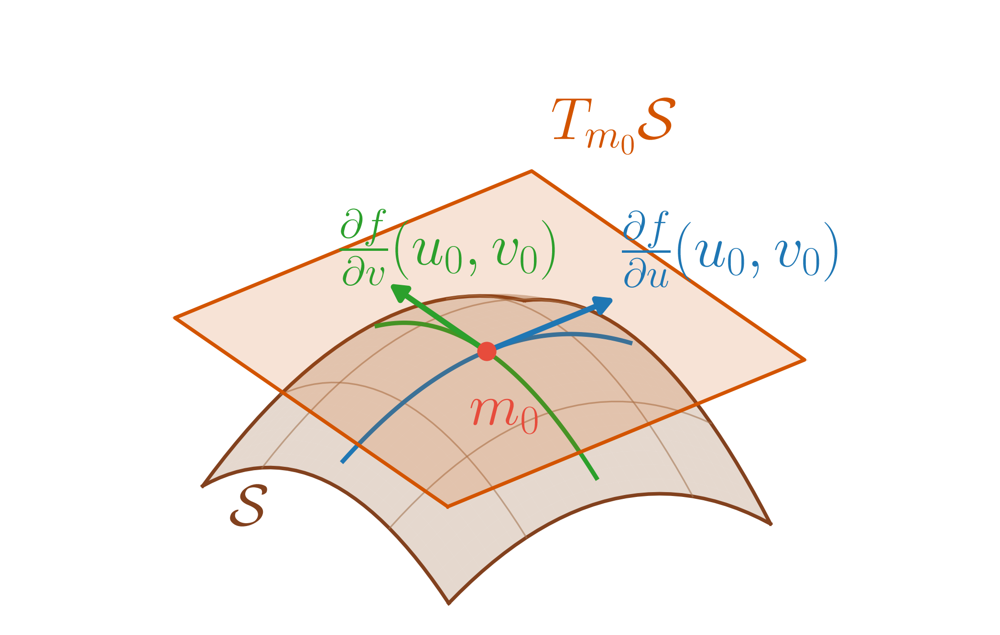
Si \(\mathcal{S}= \left\{(x,y,z = g(x,y)) / (x,y) \in \mathbb{R}^2\right\} \subset \mathbb{R}^3\) avec \(\begin{array}{lllll} g & : & U \subset \mathbb{R}^2 & \to & \mathbb{R} \\ & & (x,y) & \mapsto & g(x,y) \end{array}\) différentiable sur l’ouvert \(U\).
Alors, \(\mathcal{S}= f(U)\) avec \(\begin{array}{lllll} f & : & U & \to & \mathbb{R}^3 \\ & & (x,y) & \mapsto & \begin{pmatrix} x \\ y \\ g(x,y) \end{pmatrix} \end{array}\) différentiable.
On note alors que pour tout \((x_0,y_0) \in \mathbb{R}^2\), \[\frac{\partial f}{\partial x}(x_0,y_0) = \begin{pmatrix} 1 \\ 0 \\ \frac{\partial g}{\partial x}(x_0,y_0) \end{pmatrix} \text{ et }\frac{\partial f}{\partial y}(x_0,y_0) = \begin{pmatrix} 0 \\ 1 \\ \frac{\partial g}{\partial y}(x_0,y_0) \end{pmatrix}\] et ces deux vecteurs forment une famille libre de \(\mathbb{R}^3\) donc tout point est régulier.
De plus, en notant \(m_0 = (x_0,y_0,z_0) = f(u_0,v_0)\), pour tout point \(m = (x,y,z) \in \mathbb{R}^3\), \[\begin{aligned} & m \in T_{m_0}\mathcal{S}\\ & \iff m-m_0 \in \mathop{\mathrm{Vect}}\left(\frac{\partial f}{\partial x}(u_0,v_0),\frac{\partial f}{\partial y}(u_0,v_0)\right) \\ & \iff m-m_0 \in \mathop{\mathrm{Vect}}\left(\begin{pmatrix} 1 \\ 0 \\ \frac{\partial g}{\partial x}(u_0,v_0)\end{pmatrix},\begin{pmatrix} 0 \\ 1 \\ \frac{\partial g}{\partial y}(u_0,v_0) \end{pmatrix}\right) \\ & \iff \begin{vmatrix} x-x_0 & 1 & 0\\ y-y_0 & 0 & 1\\ z-z_0 &\frac{\partial g}{\partial x}(u_0,v_0) & \frac{\partial g}{\partial x}(u_0,v_0) \end{vmatrix} = 0 \\ & \iff (x-x_0)\begin{vmatrix} 0 & 1\\ \frac{\partial g}{\partial x}(u_0,v_0) & \frac{\partial g}{\partial x}(u_0,v_0) \end{vmatrix} -\begin{vmatrix} y-y_0 & 1\\ z-z_0 & \frac{\partial g}{\partial x}(u_0,v_0) \end{vmatrix} = 0 \\ & \text{ en développant par rapport à la première ligne,} \\ & \iff -(x-x_0)\frac{\partial g}{\partial x}(u_0,v_0) - (y-y_0)\frac{\partial g}{\partial x}(u_0,v_0)+z-z_0 = 0 \\ & \iff z= z_0 +(x-x_0)\frac{\partial g}{\partial x}(u_0,v_0)+(y-y_0)\frac{\partial g}{\partial x}(u_0,v_0) \end{aligned}\] ce qui donne une équation du plan tangent en \(m_0.\)
On peut donner un exemple concret du point précédent en considérant \(\mathcal{S}= f(\mathbb{R}^2)\) avec \(\begin{array}{lllll} f & : & \mathbb{R}^2 & \to & \mathbb{R}^3 \\ & & (x,y) & \mapsto & \begin{pmatrix} x \\ y \\ z=x^2+y^2 \end{pmatrix} \end{array}\). On obtient la surface ci-contre (un paraboloïde de révolution d’axe vertical).
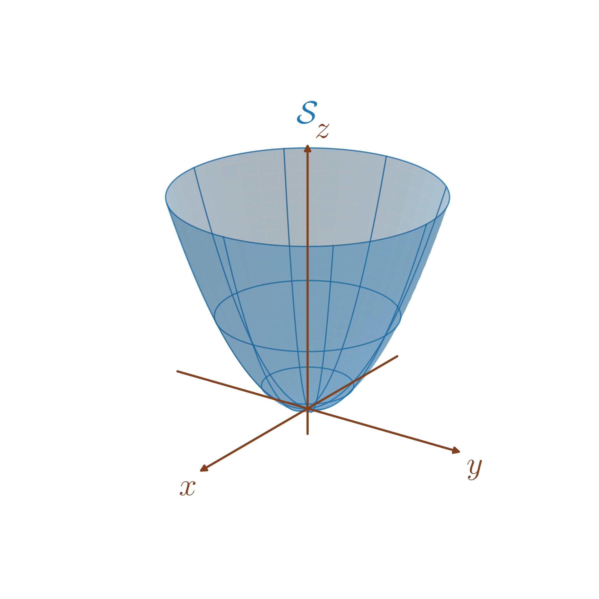
On a donc le plan tangent en chaque point \(m_0 = f(u_0,v_0) = (x_0,y_0,z_0)\) qui est le plan d’équation \(z= z_0 +2x_0(x-x_0)+2y_0(y-y_0).\)
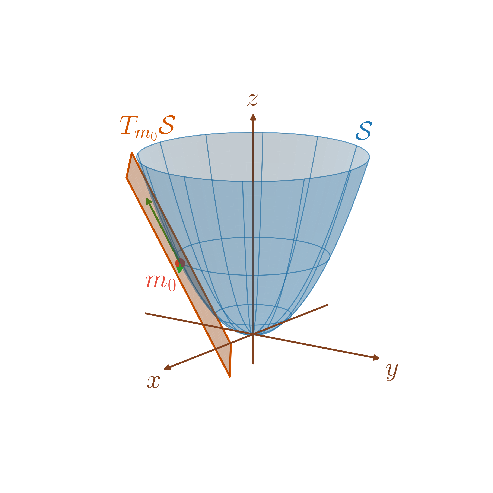
Soient \(\begin{array}{lllll} f & : & U \subset E & \to & \mathbb{R} \\ & & x & \mapsto & f(x) \end{array}\) et \(\lambda \in \mathbb{R}\),
\(X_\lambda = \left\{x \in U / f(x) = \lambda\right\}\) est appelé une ligne de niveau de \(f\).
Soit \(f : (x,y) \in \mathbb{R}^2 \to x^2+\frac{y^2}{4}\) alors
\(X_0 = \left\{(0,0)\right\}\),
pour \(\lambda > 0\), \(X_\lambda\) est une ellipse,
pour \(\lambda < 0\), \(X_\lambda = \emptyset.\)
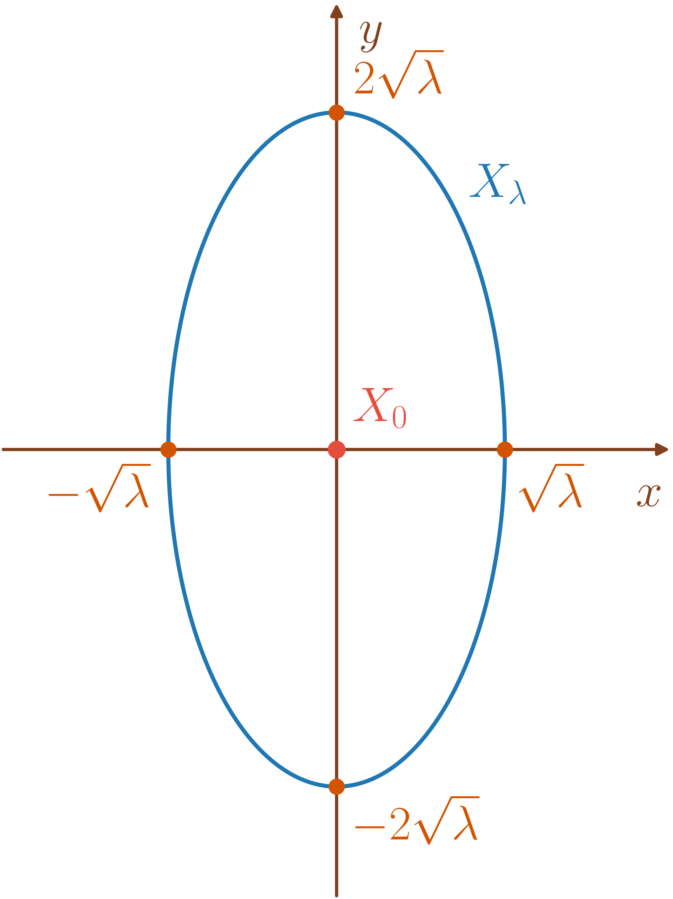
Soient \(\begin{array}{lllll} f & : & U \subset E & \to & \mathbb{R} \\ & & x & \mapsto & f(x) \end{array}\), avec \(U\) un ouvert de \(E\), \((E,\langle \cdot, \cdot \rangle)\) euclidien et \(\lambda \in \mathbb{R}\).
Soient \(a \in X_\lambda\), tel que \(f\) est différentiable en \(a\) et \(u\) un vecteur tangent à \(X_\lambda\) en \(a\).
Alors, \(\langle \nabla f(a),u \rangle = 0\).
Par définition d’un vecteur tangente, il existe \(\varphi: \left]-\eta,\eta\right[ \to X_\lambda\) (avec \(\eta > 0\)) tel que \(\varphi(0) = a\) et \(\varphi\) est dérivable en \(0\) avec \(\varphi'(0) = u.\)
On a donc \(f \circ \varphi\) qui est constante égale à \(\lambda\) sur \(\left]-\eta,\eta\right[\) et dérivable en \(0\) par composition avec (voir le corollaire [cor:compo_derivable_diff]). \[0 = f \circ \varphi'(0) = df(\varphi(0))(\varphi'(0)) = df(a)(u) = \langle \nabla f(a),u \rangle.\]
Soient \(\begin{array}{lllll} f & : & U \subset E & \to & \mathbb{R} \\ & & x & \mapsto & f(x) \end{array}\), avec \(U\) un ouvert de \(E\), \((E,\langle \cdot, \cdot \rangle)\) euclidien et \(\lambda \in \mathbb{R}\).
Soit \(a \in X_\lambda\) tel que \(f\) est différentiable en \(a\) avec \(\nabla f(a) \neq 0\).
Alors,
on appelle hyperplan tangent à \(X_\lambda\) en \(a\) l’hyperplan affine
\(\mathscr{H}= a+\left(\mathop{\mathrm{Vect}}(\nabla f(a))\right)^\perp,\)
on appelle normale à \(X_\lambda\) en \(a\) la droite affine \(\mathscr{D}= a+\mathop{\mathrm{Vect}}(\nabla f(a)).\)
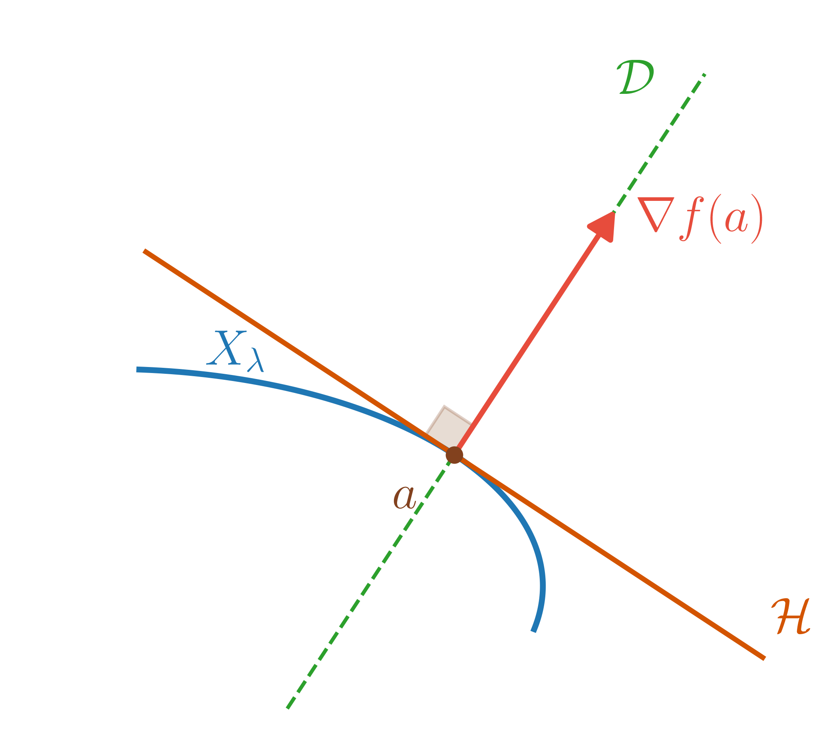
Reprenons \(f : (x,y) \in \mathbb{R}^2 \to x^2+\frac{y^2}{4}\).
Soit \(\lambda \in \mathbb{R}^{+\star}\) et \((x_0,y_0) \in X_\lambda\) (qui est une ellipse, voir l’exemple [ex:ellipse_niveaux]).
On a pour \((x,y) \in \mathbb{R}^2, \nabla f(x_0,y_0) = \begin{pmatrix} 2x \\ \frac{y}{2} \end{pmatrix}\) donc
la normale en \((x_0,y_0)\) à \(X_\lambda\) est \(\begin{pmatrix} x_0\\ y_0 \end{pmatrix} +\mathop{\mathrm{Vect}}\begin{pmatrix} 2x_0 \\ \frac{y_0}{2} \end{pmatrix}\),
l’hyperplan tangent en \((x_0,y_0)\) à \(X_\lambda\) est \(\begin{pmatrix} x_0\\ y_0 \end{pmatrix} +\mathop{\mathrm{Vect}}\begin{pmatrix} -\frac{y_0}{2}\\ 2x_0 \end{pmatrix}\) (on repère que \(\begin{pmatrix} -\frac{y_0}{2}\\ 2x_0 \end{pmatrix} \perp \begin{pmatrix} 2x_0 \\ \frac{y_0}{2} \end{pmatrix}.\))
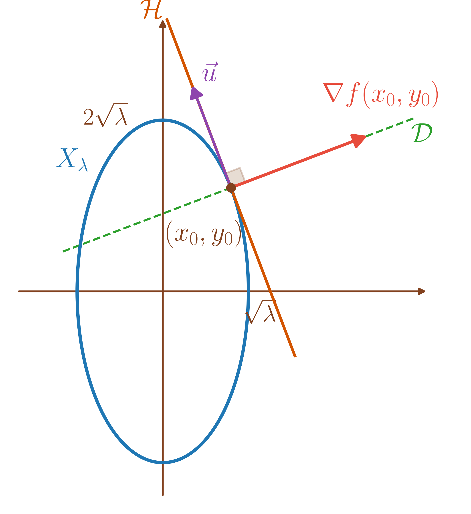
En supposant \(f\) de classe \(\mathscr{C}^1\) sur \(E\), et toujours \(\nabla f(a) \neq 0\), la normale à \(X_\lambda\) en \(a\) s’écrit \(\left\{a+t \nabla f(a) / t \in \mathbb{R}\right\}\).
En considérant \(\begin{array}{lllll} \varphi & : & \mathbb{R} & \to & E \\ & & t & \mapsto & f(a+t \nabla f(a)) \end{array}\), \(\varphi\) est dérivable avec pour \(t \in \mathbb{R}\), \[\varphi'(t) = df(a+t \nabla f(a))(\nabla f(a)).\] En particulier, en \(0\), \[\varphi'(0) = df( \nabla f(a))(\nabla f(a)) = \left\|\nabla f(a)\right\|^2. > 0.\] On a donc \(\varphi'\) qui est strictement positive sur un intervalle \(\left]-\eta,\eta\right[\) et donc \(\varphi\) qui y est strictement croissante.
Cela donne que \(f\) croît dans la direction de \(\nabla f(a)\) (localement).
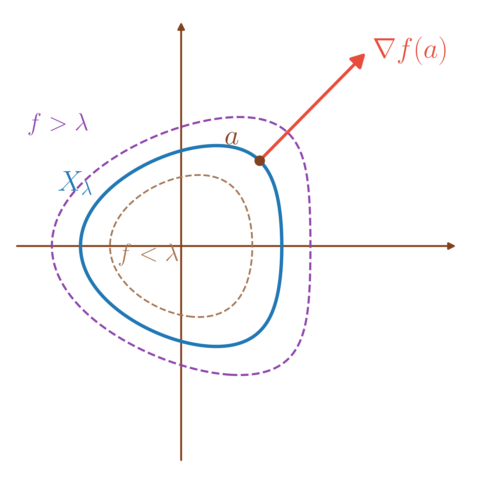
En supposant \(f\) de classe \(\mathscr{C}^1\) sur \(E\), et toujours \(\nabla f(a) \neq 0\), Soit \(h \in E\), on considère \(\begin{array}{lllll} \psi & : & \mathbb{R} & \to & E \\ & & t & \mapsto & f(a+t h) \end{array}\), \(\psi\) est dérivable avec pour \(t \in \mathbb{R}\), \[\varphi'(t) = df(a+t h)(\nabla f(a)).\] En particulier, par Cauchy-Schwarz, \[\left|\varphi'(0)\right| = \left|\langle h, \nabla f(a)\rangle\right| \leq \left\|h\right\|\left\|\nabla f(a)\right\|\] avec égalité si et seulement si \(h = \pm \frac{\nabla f(a)}{\left\|\nabla f(a)\right\|}.\)
On en déduit que le maximum de variation correspond à ces valeurs de \(h\), dont qu’elle se fait selon la direction du gradient (localement).
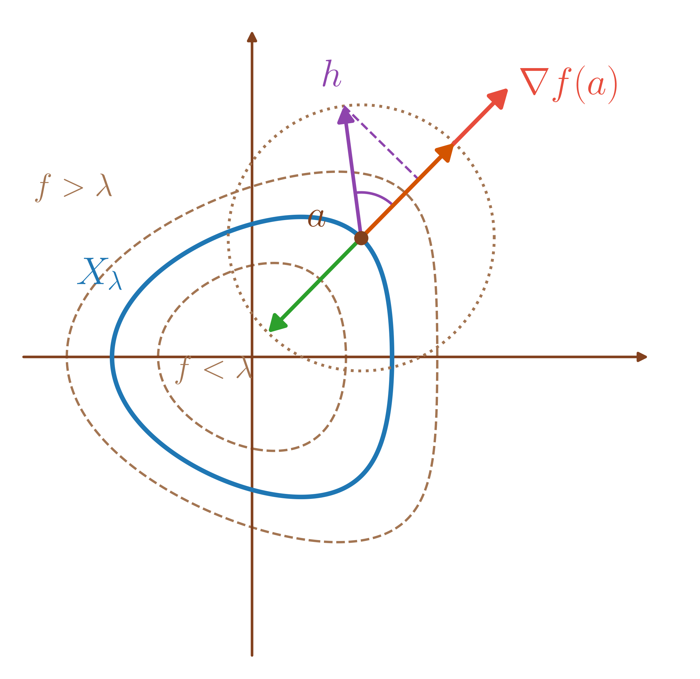